СП 100.13330.2016 «Мелиоративные системы и сооружения»
О документе: разработчики, утверждение, регистрация, ключевые слова
СВОД ПРАВИЛ СП 100.13330.2016
Актуализированная редакция
СНиП 2.06.03-85
Москва 2016
1 ИСПОЛНИТЕЛЬ - ФГБНУ «РосНИИПМ»
2 ВНЕСЕН Техническим комитетом по стандартизации ТК 465 «Строительство»
3 ПОДГОТОВЛЕН К УТВЕРЖДЕНИЮ Департаментом градостроительной деятельности и архитектуры Министерства строительства и жилищно-коммунального хозяйства Российской Федерации (Минстрой России)
4 УТВЕРЖДЕН Приказом Министерства строительства и жилищно-коммунального хозяйства Российской Федерации от 16 декабря 2016 г. № 953/пр и введен в действие с 17 июня 2017 г.
5 ЗАРЕГИСТРИРОВАН Федеральным агентством по техническому регулированию и метрологии (Росстандарт). Пересмотр СП 100.13330.2011 «СНиП 2.06.03-85 Мелиоративные системы и сооружения»
В случае пересмотра (замены) или отмены настоящего свода правил соответствующее уведомление будет опубликовано в установленном порядке. Соответствующая информация, уведомление и тексты размещаются также в информационной системе общего пользования - на официальном сайте разработчика (Минстрой России) в сети Интернет
© Минстрой России, 2016
Настоящий нормативный документ не может быть полностью или частично воспроизведен, тиражирован и распространен в качестве официального издания на территории Российской Федерации без разрешения Минстроя России
СП 100.13330.2016
Дата введения 20\_\_-\_\_-\_\_
УДК 626.82
ОКС 93.160
Ключевые слова: проектирование, оросительная система, осушительная система, сооружения на сети, дренаж, насосная станция, польдерная система, дамба, ка- нал, дорога, водоприемник
Директор НИИСФ РААСН
И. Л. Шубин
Руководитель организации-разработчика
ФГБНУ «РосНИИПМ»
Директор
В. Н. Щедрин
Руководитель
разработки
В. Н. Щедрин
Исполнители
Зам. директора
С. М. Васильев
Нач. отдела
В. В. Слабунов
Нач. отдела
А. В. Акопян
Вед. науч. сотр.
О. В. Воеводин
Вед. науч. сотр.
А. С. Штанько
Ст. науч. сотр.
А. Л. Кожанов
Ст. науч. сотр.
С. Л. Жук
Введение
Настоящий свод правил разработан с учетом требований Федерального закона от 30 декабря 2009 г. № 384-ФЗ «Технический регламент о безопасности зданий и сооружений» [1], Федерального закона от 10 января 1996 г. № 4-ФЗ «О мелиорации земель» [2], Федерального закона от 27 декабря 2002 г. № 184-ФЗ «О техническом регулировании» [3], положений действующих строительных норм и сводов правил.
Актуализация выполнена авторским коллективом ФГБНУ «РосНИИПМ»: д-р техн. наук, проф., акад. РАН В. Н. Щедрин , докт. техн. наук, доц. С. М. Васильев , канд. техн. наук В. В. Слабунов , канд. с.-х. наук О. В. Воеводин , канд. техн. наук А. С. Штанько , канд. техн. наук А. В. Акопян , канд. техн. наук А. Л. Кожанов , канд. техн. наук С. Л. Жук .
В настоящем своде правил учтены опыт исследований в данной области отечественных и зарубежных специалистов: Б. Б. Шумаков , Б. С. Маслов , М. С. Григоров , И. П. Кружилин , В. Д. Гостищев , И. П. Айдаров , В. И. Ольгаренко , Ю. П. Поляков , П. Г.Фиалковский , Е. И. Кормыш , Г. И. Неугодов , Р. М. Фильрозе , П. А. Полад-Заде и др.
СП 100.13330.2016
| [7] СП 11-102-97 | Инженерно-экологические изыскания для стро- ительства |
|---|---|
| [8] СП 11-103-97 | Инженерно-гидрометеорологические изыскания для строительства |
| [9] СП 11-104-97 | Инженерно-геодезические изыскания для строи- тельства |
| [10] СП 33-101-2003 | Определение основных расчетных гидрологиче- ских характеристик |
| [11] ВСН 33-2.1.05-90 | Гидромелиоративные системы и сооружения. Гидрогеологические и инженерно-геологиче- ские изыскания |
| [12] ВСН 33-2.1.07-87 | Инженерно-геодезические изыскания для мели- оративного и водохозяйственного строительства |
| [13] ВСН 33-2.1.10-90 | Гидромелиоративные системы и сооружения. Инженерно-гидрометеорологические изыскания |
| [14] ВСН 33-2.2.03-86 | Мелиоративные системы и сооружения. Дренаж |
| [15] ВСН 33-2.2.12-87 | Мелиоративные системы и сооружения. Насос- ные станции. Нормы проектирования |
|---|---|
| [16] СН 474-75 | Нормы отвода земель для мелиоративных кана- лов |
| [17] ОСТ 10-238-99 | Система проектной документации мелиоратив- ного и водохозяйственного строительства. Пра- вила выполнения рабочей документации гидро- технических сооружений |
| [18] НТП-АПК 1.30.03.01-06 | Нормы технологического проектирования оро- сительных систем с использованием животно- |
| [19] НТП-АПК 1.30.03.02-06 | водческих стоков Нормы технологического проектирования оро- сительных систем с использованием сточных |
| [20] РД-АПК 1.10.15.02-08 | Методические рекомендации по технологиче- скому проектированию систем удаления и под- готовки к использованию навоза и помета от 29.04.2008 №1.10.15.02-08 |
1Область применения
2Нормативные ссылки
В настоящем своде правил приведены ссылки на следующие нормативные документы:
ГОСТ 9.602-2005 Единая система защиты от коррозии и старения (ЕСЗКС). Сооружения подземные. Общие требования к защите от коррозии
ГОСТ 12.2.063-2015 Арматура трубопроводная. Общие требования безопасности
ГОСТ 17.1.2.03-90 Охрана природы. Гидросфера. Критерии и показатели качества воды для орошения
The reclamation systems and construction
ГОСТ 34.201-89 Информационная технология. Комплекс стандартов на автоматизированные системы. Виды, комплектность и обозначение документов при создании автоматизированных систем
ГОСТ 6482-2011 Трубы железобетонные безнапорные. Технические условия
ГОСТ 8411-74 Трубы керамические дренажные. Технические условия
ГОСТ 10650-2013 Торф. Методы определения степени разложения
ГОСТ 20054-82 Трубы бетонные безнапорные. Технические условия
ГОСТ 21509-76 Лотки железобетонные оросительных систем. Технические условия
ГОСТ 23899-79 Колонны железобетонные под параболические лотки. Технические условия
ГОСТ 23972-80 Фундаменты железобетонные для параболических лотков. Технические условия
ГОСТ 31416-2009 Трубы и муфты хризотилцементные. Технические условия
ГОСТ Р 21.1101-2013 Система проектной документации для строительства. Основные требования к проектной и рабочей документации
ГОСТ Р 22.1.12-2005 Безопасность в чрезвычайных ситуациях. Структурированная система мониторинга и управления инженерными системами зданий и сооружений. Общие требования
ГОСТ Р 51657.2-2000 Водоучет на гидромелиоративных и водохозяйственных системах. Методы измерения расхода и объема воды. Классификация
ГОСТ Р 51657.3-2000 Водоучет на гидромелиоративных и водохозяйственных системах. Гидрометрические сооружения и устройства. Классификация
ГОСТ Р 51657.4-2002 Водоучет на гидромелиоративных и водохозяйственных системах. Измерение расходов воды с использованием водосливов с треугольными порогами. Общие технические требования
ГОСТ Р 53201-2008 Трубы стеклопластиковые и фитинги. Технические условия
ГОСТ Р 54475-2011 Трубы полимерные со структурированной стенкой и фасонные части к ним для систем наружной канализации. Технические условия ГОСТ ИСО 9261-2004 Оборудование сельскохозяйственное оросительное.
Трубопроводы для полива. Технические требования и методы испытаний СП 22.13330.2011 «СНиП 2.02.01-83 Основания зданий и сооружений»
СП 23.13330.2011 «СНиП 2.02.02-85 Основания гидротехнических сооружений»
СП 28.13330.2012 «СНиП 2.03.11-85 Защита строительных конструкций от коррозии»
СП 31.13330.2012 «СНиП 2.04.02-84 Водоснабжение. Наружные сети и сооружения»
СП 34.13330.2012 «СНиП 2.05.02-85 Автомобильные дороги»
СП 35.13330.2011 «СНиП 2.05.03-84 Мосты и трубы»
СП 38.13330.2012 «СНиП 2.06.04-82 Нагрузки и воздействия на гидротехнические сооружения (волновые, ледовые и от судов)»
СП 39.13330.2012 «СНиП 2.06.05-84 Плотины из грунтовых материалов»
СП 40.13330.2012 «СНиП 2.06.06-85 Плотины бетонные и железобетонные»
СП 47.13330.2012 «СНиП 11-02-96 Инженерные изыскания для строительства. Основные положения»
СП 56.13330.2011 «СНиП 31-03-2001 Производственные здания»
СП 58.13330.2012 «СНиП 33-01-2003 Гидротехнические сооружения. Основные положения»
СП 77.13330.2011 «СНиП 3.05.07-85 Системы автоматизации»
СП 99.13330.2011 «СНиП 2.05.11-83 Внутрихозяйственные автомобильные дороги в колхозах, совхозах и других сельскохозяйственных предприятиях и организациях»
СП 101.13330.2012 «СНиП 2.06.07-87 Подпорные стены, судоходные
СП 100.13330.2016 шлюзы, рыбопропускные и рыбозащитные сооружения»
СП 104.13330.2011 «СНиП 2.06.15-85 Инженерная защита территории от затопления и подтопления»
СП 119.13330.2012 «СНиП 32-01-95 Железные дороги колеи 1520 мм»
СанПиН 2.1.5.980-00 Гигиенические требования к охране поверхностных вод
СанПиН 2.1.7.573-96 Гигиенические требования к использованию сточных вод и их осадков для орошения и удобрения
Примечание - При пользовании настоящим сводом правил целесообразно проверить действие ссылочных документов в информационной системе общего пользования - на официальном сайте федерального органа исполнительной власти в сфере стандартизации в сети Интернет или по ежегодному информационному указателю «Национальные стандарты», который опубликован по состоянию на 1 января текущего года, и по выпускам ежемесячного информационного указателя «Национальные стандарты» за текущий год. Если заменен ссылочный документ, на который дана недатированная ссылка, то рекомендуется использовать действующую версию этого документа с учетом всех внесенных в данную версию изменений. Если заменен ссылочный документ, на который дана датированная ссылка, то рекомендуется использовать версию этого документа с указанным выше годом утверждения (принятия). Если после утверждения настоящего свода правил в ссылочный документ, на который дана датированная ссылка, внесено изменение, затрагивающее положение, на которое дана ссылка, то это положение рекомендуется применять без учета данного изменения. Если ссылочный документ отменен без замены, то положение, в котором дана ссылка на него, рекомендуется применять в части, не затрагивающей эту ссылку. Сведения о действии сводов правил целесообразно проверить в Федеральном информационном фонде технических регламентов и стандартов.
3Термины и определения
В настоящем своде правил применены следующие термины с соответствующими определениями:
- 3.1аппарат дождевальный
- Устройство с подвижными частями для получения и распределения искусственного дождя по площади полива.
- 3.2борозда мелиоративная
- Временный канал мелиоративной сети, прокладываемый на поле и проходимый для сельскохозяйственных машин.
- 3.3водоприемник мелиоративной сети
- Водоток, водоем, понижение рельефа местности и (или) зона неполного водонасыщения горных пород, используемые для сброса в них дренажных и (или) возвратных оросительных вод.
- 3.4дождевание
- Орошение искусственным дождем.
- 3.5дождевание импульсное
- Дождевание в импульсном режиме.
- 3.6дрена кротовая
- Мелиоративная дрена в виде цилиндрической полости в почвогрунте.
- 3.7дрена ловчая
- Мелиоративная дрена оградительной осушительной сети, предназначенная для перехвата притока подземных вод к осушаемым землям.
- 3.8дрена мелиоративная
- Элемент регулирующей мелиоративной сети для сбора и отвода поверхностных и подземных вод.
- 3.9дрена нагорная
- Мелиоративная дрена оградительной осушительной сети, предназначенная для перехвата поверхностного стока к осушаемым землям.
- 3.10дренаж вертикальный мелиоративный
- Мелиоративный дренаж, состоящий из трубчатых колодцев (или) скважин, для принудительного извлечения подземных вод с помощью насосов для регулирования уровня грунтовых вод.
- 3.11дренаж горизонтальный мелиоративный
- Система закрытых искусственных водотоков, расположенных на определенной глубине с заданным уклоном для сбора и отвода грунтовых и подземных вод.
- 3.12дренаж кротовый мелиоративный
- Горизонтальный мелиоративный дренаж в виде кротовых дрен.
- 3.13дренаж мелиоративный
- Часть осушительной сети, обеспечивающая сбор и отвод воды в проводящую сеть или водоприемник.
- 3.14дренажные воды
- Воды, отвод которых осуществляется дренажными сооружениями для сброса в водные объекты [4].
- 3.15дренажный сток при осушении земель
- Сток дренажных вод по осушительной сети.
- 3.16земли орошаемые
- Земли сельскохозяйственного назначения, на которых имеется временная или постоянная оросительная сеть, связанная с источником орошения, водные ресурсы которого обеспечивают полив этих земель.
- 3.17земли осушенные
- Земли, имеющие осушительную сеть, обеспечивающую оптимальный водно-воздушный режим для произрастания на них сельскохозяйственных культур, насаждений.
- 3.18коллектор осушительный
- Водовод проводящей осушительной сети для отвода воды, собранной оградительной и регулирующей осушительными сетями.
- 3.19коэффициент полезного действия оросительной системы
- Отношение объема воды, поданной на орошение, к объему воды, изъятой из водоисточника в оросительную сеть.
- 3.20машина дождевальная
- Машина с рабочими органами для дождевания, оборудованная техническими средствами для перемещения.
- 3.21мелиоративная система
- Комплекс взаимосвязанных гидротехнических и других сооружений и устройств, включая земельные участки в границах полосы отвода мелиоративной системы или гидротехнического сооружения, обеспечивающих создание благоприятного водного, воздушного и теплового режимов почв и микроклимата на мелиорированных землях.
- 3.22мелиорированные земли
- Земли, на которых проведены мелиоративные мероприятия [2].
- 3.23норма оросительная
- Объем воды, подаваемый на единицу площади нетто поливного участка в течение вегетационного сезона.
- 3.24норма осушения
- Расстояние от поверхности земли до поверхности почвенных или грунтовых вод, обеспечивающее благоприятные условия для выращивания сельскохозяйственных культур.
- 3.25орошение внутрипочвенное
- Орошение земель путем подачи воды из различного рода увлажнителей в корнеобитаемую зону растений.
- 3.26орошение земель
- Комплекс мелиоративных мероприятий по проведению поливов, направленных на создание благоприятного водного, воздушного и теплового режимов почв и микроклимата на мелиорированных землях.
- 3.27орошение капельное
- Орошение с подачей поливной воды в корнеобитаемую зону растений каплями или микроструями из дозирующих водовыпусков-капельниц.
- 3.28орошение поверхностное
- Орошение земель с распределением воды по их поверхности.
- 3.29осушение земель
- Мелиорация путем отвода воды из почвогрунта и (или) с его поверхности.
- 3.30период оросительный
- Часть вегетационного периода сельскохозяйственных культур от начала первого полива до окончания последнего.
- 3.31полив
- Разовое искусственное увлажнение орошаемых земель и(или) приземного слоя воздуха.
- 3.32полив промывной
- Полив, обеспечивающий перемещение вредоносного вещества в подпочвенные горизонты.
- 3.33поливная полоса
- Обвалованная полоса земли, имеющая продольный уклон и горизонтальная в поперечном сечении, затапливаемая водным потоком с одновременным просачиванием в почву.
- 3.34режим орошения
- Совокупность норм и сроков поливов.
- 3.35сеть оградительная осушительная
- Часть мелиоративного дренажа, обеспечивающая перехват вод, притекающих к осушаемым землям.
- 3.36сеть оросительная
- Мелиоративная сеть для подвода и распределения воды от водоисточника к орошаемым землям.
- 3.37сеть осушительная
- Мелиоративная сеть для приема избыточных поверхностных и (или) подземных вод и их отвода в водоприемник.
- 3.38система оросительная
- Мелиоративная система для орошения земель.
- 3.39система осушительная
- Мелиоративная система для осушения земель.
- 3.40система осушительно-оросительная
- Осушительная система, оборудованная сетью и(или) сооружениями для орошения осушенных (осушаемых) сельскохозяйственных угодий.
- 3.41система польдерная
- Мелиоративная система с полным или частичным обвалованием земель для защиты осушаемых территорий от затопления.
- 3.42сточные воды
- Дождевые, талые, инфильтрационные, поливомоечные, дренажные воды, сточные воды централизованной системы водоотведения и другие воды, отведение (сброс) которых в водные объекты осуществляется после их использования или сток которых осуществляется с водосборной площади [4].
- 3.43сеть поливная
- Часть оросительной сети, предназначенная для распределения воды по поливному участку.
- 3.44техника поливная
- Совокупность машин, механизмов и орудия для осуществления полива.
- 3.45чек поливной
- Обвалованная часть поливного участка, затапливаемая водой с последующим просачиванием ее в почву и сбросом излишней воды за пределы чека.
4Обозначения и сокращения
A - мелиорируемая площадь; c A - площадь, поливаемая дождевальной машиной за сезон (сезонная нагрузка); nt A - мелиорируемая площадь нетто; br A - мелиорируемая площадь брутто;
B - ширина канала (для оросительных - по урезу воды, для осушительных -по верху канала);
E - испарение;
- a E - коэффициент полезного использования воды на оросительной системе; t E - коэффициент полезного действия сети; b E - коэффициент полезного действия канала; crop ET - эвапотранспирация; n J - оросительная норма; nnt J - оросительная норма нетто; mnt J - средневзвешенная оросительная норма нетто; nd J - осушительная норма; e P - эффективные осадки; nt Q - расход воды нетто; max nt Q - расход воды нетто максимальный; min nt Q - расход воды нетто минимальный; f K - коэффициент форсирования расхода; br Q - расход воды брутто; max br Q - расход воды нетто максимальный; min br Q - расход воды нетто минимальный; ef Q - фильтрационные потери; sd Q - расход воды дождевальной машины; ht Q - расход трубчатого увлажнителя; col Q - расчетный расход; h Q - расход увлажнительного трубопровода;
R - гидравлический радиус;
S - площадь живого сечения; us V - объем полезно используемой воды; w V - объем забираемой воды; l V - потери воды из сети на фильтрацию; lt V - технические потери воды на поле; ls V - технологические сбросы воды из оросительной сети; r V - объем воды, подлежащий отводу; lR V - слой воды на промывку;
T - водопроводимость пласта; b - ширина канала по дну; cr B - ширина канала по урезу воды при критической глубине воды; d a - расстояние между дренами; d d - глубина до оси дрены; wb d - дефицит влаги в водном балансе; wbm d - средневзвешенный дефицит влаги в водном балансе; mw d - среднесуточный дефицит водопотребления; c d - глубина наполнения канала; H - глубина канала; l H - глубина лотка; l d - глубина наполнения лотка; cr d - критическая глубина; inf h - слой воды у нижней дамбы; m h - средний слой затопления; sup h - слой воды у верхней дамбы; h Δ - превышение бровки бермы (дамбы) над уровнем воды; f h - гидравлические потери; not L - средний уклон местности; cr i - критический уклон; L - расстояние между дамбами лиманов; m - коэффициент заложения откоса; s n - число импульсных дождевателей; st n - число импульсных дождевателей на системе; h n - число одновременно работающих увлажнителей; d h - расстояние от оси дрены до водоупора; h l - длина увлажнителя; q - удельный расход воды (гидромодуль); i q - величина впитывания воды почвой; p q - подпитывание расчетного слоя почвы подземными водами; ϕ - относительная влажность воздуха; r - радиус закругления канала; a v - расчетная скорость ветра; m v - средняя скорость ветра; χ - смоченный периметр; t - толщина облицовки; n - коэффициент шероховатости;
C - коэффициент Шези; ul K - коэффициент земельного использования; day K - коэффициент использования рабочего времени суток; l γ - коэффициент, учитывающий потери рабочего времени по метеорологическим условиям;
КПД - коэффициент полезного действия;
КЗИ - коэффициент земельного использования;
НВ - наименьшая влагоемкость.
5Общие положения
В состав оросительной системы могут входить: водохранилища, водозаборные и рыбозащитные сооружения на естественных или искусственных водоисточниках, отстойники, насосные станции, оросительная, водосборно-сбросная и дренажная сети, нагорные каналы, сооружения на сети, поливные и дождеваль-
СП 100.13330.2016
СП 100.13330.2016 ные машины, установки и устройства, средства управления и автоматизации, контроля за мелиоративным состоянием земель, объекты электроснабжения и связи, противоэрозионные сооружения, производственные и жилые здания эксплуатационной службы, дороги, лесозащитные насаждения, дамбы.
В состав осушительной системы могут входить: водоприемник, проводящая, оградительная и регулирующая сети, насосные станции, дамбы, сооружения на сетях, средства управления, автоматизации и контроля за мелиоративным состоянием земель, объекты электроснабжения и связи, противоэрозионные сооружения, производственные и жилые здания эксплуатационной службы, дороги и лесозащитные насаждения.
В условиях периодических дефицитов влаги в корнеобитаемом слое в составе осушительных систем должны предусматриваться сооружения и устройства, обеспечивающие искусственное увлажнение почв в засушливые периоды. Целесообразность увлажнения должна быть обоснована водно-балансовыми и технико-экономическими расчетами.
- границы и размеры мелиорируемой площади и полей севооборота;
- земельный фонд хозяйств, изменения в составе сельскохозяйственных угодий в результате осуществления мелиоративных мероприятий, площади трансформированных в пашни современных пастбищ или других угодий;
- размеры хозяйств, осваивающих мелиорируемые земли;
- изменение и упорядочение границ существующих хозяйств, в том числе смежных с территорией системы;
- сельскохозяйственное использование мелиорируемых земель;
- требуемый водно-солевой режим почв;
- проектная урожайность сельскохозяйственных культур;
- способы орошения и осушения;
- создание новых или расширение существующих эксплуатационных водохозяйственных организаций;
- строительство производственных, жилых и культурно-бытовых зданий, сооружений, инженерных коммуникаций, необходимых для службы эксплуатации мелиоративных систем.
- получение проектной продукции растениеводства;
- экономное использование водных, земельных и топливно-энергетических ресурсов;
- использование высокопроизводительной сельскохозяйственной техники при обработке мелиорируемых земель;
- высокая производительность труда при эксплуатации сооружений и мелиоративной системы в целом;
- комплексная автоматизация технологических процессов, при этом степень автоматизации должна быть обоснована технико-экономическими расчетами;
- соблюдение требований охраны окружающей природной среды, санитарно-гигиенических требований;
- возможность внесения удобрений, химмелиорантов и гербицидов с оросительной водой.
СП 100.13330.2016
СП 100.13330.2016
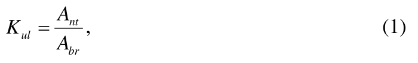
где nt A и br A - мелиорируемая площадь, соответственно нетто и брутто, га.
К орошаемой площади нетто относится орошаемая площадь, занятая продуктивными посадками, посевами или естественными лугами и пастбищами и обеспечивающая получение проектной продукции растениеводства.
К осушаемой площади нетто относятся осушаемая площадь, занятая продуктивными посадками, посевами или естественными лугами и пастбищами, а также расположенные внутри осушаемых земель и примыкающие суходольные участки площадью до 10 га (имеющие вытянутую или сложную криволинейную форму), обработка и полноценное использование которых возможно только после осушения окружающих земель.
Орошаемая или осушаемая площадь брутто включает орошаемые или осушаемые площади нетто и площади всех видов отчуждений под сооружения мелиоративных систем.
Технико-экономические показатели мелиоративной системы следует определять на 1 га мелиорированной (орошаемой или осушаемой) площади нетто и на единицу проектной продукции растениеводства.
Таблица 1 - Классы гидротехнических сооружений мелиоративной системы
| Площадь орошения или осушения, обслуживаемая сооружениями, тыс. га | Класс |
|---|---|
| Св. 300 | I |
| От 100 до 300 | II |
| От 50 до 100 | III |
| 50 и менее | IV |
СП 100.13330.2016
Основные требования по проектированию сооружений различных классов, их отдельных конструкций и оснований, а также расчетные положения и нагрузки необходимо принимать в соответствии с СП 58.13330, СП 39.13330, СП 40.13330, СП 101.13330, СП 38.13330 и с требованиями настоящего свода правил.
- оросительных - 10 %;
- осушительных - 5 %-10 % в зависимости от требований 7.4.5.1.
Границы землепользования и севооборотных участков надлежит предусматривать по возможности прямолинейными с учетом существующих и проектируемых каналов, трубопроводов, линий электропередач, дорог и др.; поля севооборотов должны иметь, как правило, прямоугольную форму. Отступление от этих требований допускается в условиях сложного рельефа местности и примыкания к естественным границам (реки, озера, овраги и т. п.). При необходимости допускается изменять границы землепользования, при этом должен быть разработан проект нового межхозяйственного землеустройства.
Производственные базы эксплуатационных организаций следует размещать, как правило, на общей площадке с блокированием основных зданий с едиными вспомогательными зданиями, сооружениями и коммуникациями.
6Оросительные системы
6.1Основные требования к оросительным системам
СП 100.13330.2016
- по опасности ухудшения плодородия почв (осолонцевание, засоление, обесструктуривание, выщелачивание почв и т. п.);
- по солеустойчивости сельскохозяйственных культур.
Оценку качества оросительной воды следует проводить согласно требованиям ГОСТ 17.1.2.03.
Оросительная норма нетто nnt J определяется по формуле
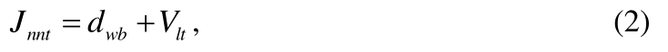
где wb d - дефицит влаги в водном балансе, мм, определяемый по формуле
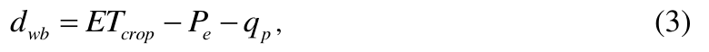
где crop ET - эвапотранспирация (транспирация растений и испарение с поверхности почвы), мм; е P - эффективные осадки, мм; p q - подпитывание расчетного слоя почвы подземными водами, мм.
При наличии на оросительной системе засоленных почв и необходимости проведения промывных поливов оросительная норма нетто nnt J определяется по формуле
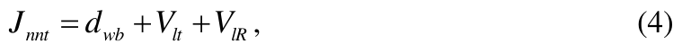
где lR V - слой воды на промывку, мм.
- на инфильтрацию и поверхностный сброс - не более 10 % дефицита водопотребления сельскохозяйственных культур;
- на испарение в зоне дождевого облака E - в % водоподачи, определяемой за расчетный период по формуле
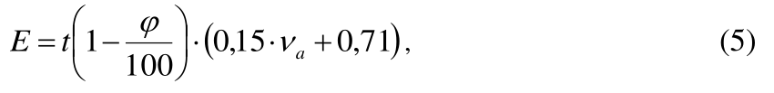
где t - максимальная температура воздуха при дождевании, °C; ϕ - относительная влажность воздуха при дождевании, %; a ν - расчетная скорость ветра, приведенная к высоте флюгера и определяемая по формуле
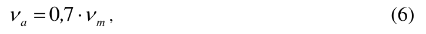
где т ν - средняя скорость ветра за расчетный период (декаду, месяц) на высоте флюгера, м/с.
Климатические параметры следует принимать среднесуточными за расчет-
СП 100.13330.2016 ный период по данным метеорологических наблюдений, проводимых гидрометеорологическими службами.
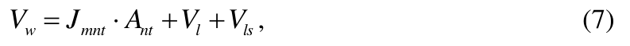
где mnt J - средневзвешенная оросительная норма нетто сельскохозяйственных культур, м³ /га, определяемая по формуле
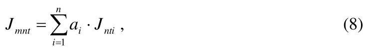
где i a - доля культуры в севообороте; nt A - орошаемая площадь нетто, га; l V - потери воды из оросительной сети на фильтрацию, м³ ; ls V - технологические сбросы воды из оросительной сети, м³ .
Схемы и степень автоматизации водораспределения должны обеспечивать сокращение технологических сбросов до величин, которые не должны превышать 5 % водопотребления нетто оросительной системы.
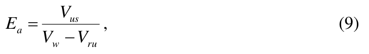
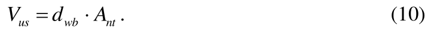
Расход воды нетто nt Q необходимо рассчитывать как произведение ординаты укомплектованного графика гидромодуля на орошаемую площадь нетто при поверхностном поливе или как сумму расходов одновременно работающих дождевальных устройств при поливе дождеванием.
Коэффициент полезного действия оросительной сети определяется по формуле
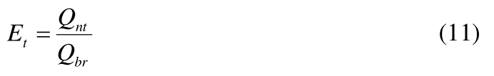
и должен быть не менее 0,9.
Для снижения непродолжительных (не более 5 сут) пиков водопотребления допускается комплектование графиков путем сдвига поливов на более ранние сроки (2-3 сут) с корректировкой поливной нормы в сторону ее уменьшения.
6.2Оросительная сеть
Выбор оптимальной конструкции оросительной сети должен проводиться на основе сравнения технико-экономических показателей вариантов сети.
При поверхностном поливе на уклонах местности более 0,003 следует, как правило, предусматривать самотечно-напорную трубчатую оросительную сеть.
- для определения гидравлических элементов каналов - на максимальный расход по максимальной ординате графика водоподачи, в случае совпадения периода максимальной мутности воды в источниках с временем работы каналов с расчетными расходами следует выполнять расчеты на незаиляемость;
- для определения превышения дамб и берм над уровнем воды в каналах и проверки их на неразмываемость - на форсированный расход, равный максимальному, увеличенному на коэффициент форсирования;
- для проверки уровней воды, обеспечивающих водозабор из каналов, определения местоположения водоподпорных сооружений и проверки каналов на незаиляемость - на минимальный расход.
Таблица 2 - Коэффициент форсирования
| Максимальный расход, м³ /с | Коэффициент форсирования |
|---|---|
| Менее 1 | 1,20 |
| От 1 до 10 | 1,15 |
| От 10 до 50 | 1,10 |
| От 50 до 100 | 1,05 |
| Св. 100 | 1,00 |
При этом должен быть обеспечен за сутки полив площади, равный суточной производительности сельскохозяйственных машин на послеполивной обработке пропашных культур.
В случае применения поливных машин максимальный расход оросителя должен быть равен сумме максимальных расходов одновременно работающих поливных машин с учетом коэффициента полезного действия оросителя
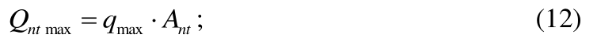
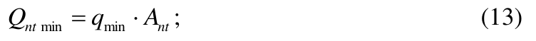
где max q и min q - соответственно максимальная и минимальная ординаты графика гидромодуля, л/(с∙га), при условии max min 0,4 q q · > .
При поливе дождеванием минимальный расход распределителя должен быть равен расходу воды минимального числа дождевальной техники, одновременно получающей из него воду на основании графика полива, с учетом коэффициента полезного действия распределителя.
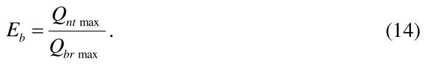
Коэффициенты полезного действия магистрального канала, его ветвей должны быть не менее 0,90, а распределителей различных порядков и оросителей - не менее 0,93.
6.3Системы поверхностного полива
При продольной схеме полива направление борозд совпадает с направлением оросителя и уклона местности, при поперечной схеме борозды направлены поперек основного уклона (вдоль горизонталей местности) перпендикулярно оросителям. Условия применения схем полива приведены в приложении Г.
Расстояния между водовыпусками в поливные устройства (между гидрантами) необходимо принимать равными длине борозд при продольной схеме и длине поливного устройства - при поперечной.
При применении поливных машин расстояние между оросителями и гидрантами должно определяться техническими характеристиками применяемых машин.
СП 100.13330.2016 ном или постоянном расходе воды в борозду следует определять по приложениям Д, Е или по данным специальных исследований.
Передвижные поливные трубопроводы (жесткие и гибкие) допускается применять на спланированных территориях с уклонами в пределах 0,003-0,006 при поперечной и продольной схемах полива.
Жесткие трубопроводы следует применять преимущественно при поперечной схеме полива.
Полив из стационарных поливных трубопроводов надлежит применять при продольной схеме полива преимущественно для полива садов и виноградников при уклонах более 0,008.
Поливные лотки (каналы) следует применять, как правило, при поперечной схеме полива.
6.4Рисовые оросительные системы
Не допускается размещение рисовых оросительных систем на болотных почвах с мощностью пласта торфа в естественном состоянии более 0,5.
СП 100.13330.2016
Оросительная норма риса должна включать:
- суммарную величину испарения с поверхности рисового поля и транспирации растений;
- объем оросительной воды, расходуемой на первоначальное насыщение почвенного слоя и создание слоя затопления;
- объем боковой и вертикальной фильтрации;
- объем воды, расходуемой на создание проточности или на периодическую смену воды в чеках;
- объем поверхностных сбросов;
- объем технических потерь на утечку воды через водовыпуски.
В районах Дальнего Востока следует учитывать осадки за вегетационный период (по году 75 %-ной обеспеченности). При этом коэффициент использования осадков следует принимать равным 0,3-0,5.
Коэффициент запаса, учитывающий увеличение водоподачи в период первоначального затопления рисовых карт, следует принимать равным 1,1 для всех каналов, за исключением картовых оросителей.
Для картовых и участковых оросителей, а также для каналов, обслуживающих часть полей севооборота, долю содержания риса в севообороте необходимо принимать равной 1,0, для остальных оросительных каналов высшего порядка - 0,75.
Коэффициент водооборота, равный отношению времени первоначального затопления рисовых карт на всей оросительной системе ко времени первоначального затопления обслуживаемой данным каналом площади, приведен в таблице 3.
Таблица 3 - Коэффициент водооборота
| Каналы рисовой оросительной системы | Продолжительность затоп- ления всех посевов риса на оросительной системе, сут | Продолжительность затоп- ления всех посевов риса на оросительной системе, сут | Продолжительность затоп- ления всех посевов риса на оросительной системе, сут |
|---|---|---|---|
| 10 | 12 | 16 | |
| Картовые оросители и участковые каналы, об- служивающие поле севооборота, состоящее из 2-3 карт | 3,0 | 4,0 | 5,0 |
| Участковые каналы при 4 картах в поле севооб- орота | 1,0 | 1,0 | 1,3 |
| Участковые каналы при 5 картах в поле севооб- орота | 1,0 | 1,0 | 1,0 |
| Участковые каналы (при числе карт в поле сево- оборота более 5) и все остальные (высшие) ка- налы рисовой оросительной системы | 1,0 | 1,0 | 1,0 |
Максимальный расход каналов водосборно-сбросной сети всех порядков необходимо определять с учетом содержания риса в севообороте и коэффициента запаса. Содержание риса в севообороте для картовых дрен - сбросов, а также для коллекторов, обслуживающих часть полей севооборота, следует принимать равным 1,0, для коллекторов высшего порядка - 0,75. Коэффициент запаса при определении максимального расхода воды в водосборно-сбросной сети, как правило, следует принимать 1,5, для районов Дальнего Востока - 1,2.
Пропускную способность каналов водосборно-сбросной сети необходимо проверять на пропуск ливневых расходов 10 %-ной обеспеченности. Минимальный расход каналов водосборно-сбросной сети всех порядков следует определять с учетом содержания риса в севообороте.
- с раздельной подачей и сбросом воды, когда вдоль одной из длинных сторон рисовой карты расположен картовый ороситель, выполненный в насыпи, как правило, двустороннего командования, а вдоль другой - картовый сбросной канал (карты краснодарского типа). Длину рисовой карты необходимо принимать 400-1200 м, ширину - 150-250 м в зависимости от фильтрационных свойств почв. Рисовая карта должна делиться поперечными валиками на чеки. Площадь чека должна быть 2-6 га, число чеков на карте 4-5;
- с раздельной подачей и сбросом воды и двумя чеками площадью 6 га каж- дый (карты кубанского типа). Длина рисовых карт должна быть 400-600 м, ширина 200-300 м;
- с совмещенной функцией подачи и сброса воды - карта широкого фронта подачи и сброса воды (КШФ), когда подача воды осуществляется за счет переполнения заглубленного канала (сброса-оросителя). Длину поливных карт широкого фронта следует принимать не более 1200 м. Площадь чека или карты-чека в этом случае может приниматься от 6 до 12 га. При разбивке карт широкого фронта на отдельные чеки необходимо в местах примыкания поперечных валиков к сбросу-оросителю предусматривать на последнем водоподпорные сооружения.
Карты широкого фронта подачи и сброса воды, как правило, надлежит применять при уклонах местности до 0,001 и располагать длинной стороной вдоль горизонтальной местности, с планированием каждой карты под одну отметку (карты-чеки).
Выбор конструкции рисовых карт следует проводить на основании сопоставления технико-экономических показателей вариантов.
- первоначальное затопление отдельной рисовой карты не более чем за 3 сут, а посевов риса в целом по хозяйству - 12-16 сут, для районов Дальнего Востока - не более чем - 10 сут;
- поддержание расчетного слоя воды в чеках в требуемые агротехнические сроки;
- нисходящие токи влаги на затопленном поле. Интенсивность оттока следует определять по данным опытов в аналогичных природных условиях;
- сброс воды и снижение уровня подземных вод для просушки чеков перед уборкой;
- понижение уровня грунтовых вод в неполивной период на глубину, обеспечивающую аэрацию плодородного слоя почвы;
- условия нормального сельскохозяйственного производства на прилегающих к системе землях и на не занятых рисом полях рисового севооборота (поддержание подземных вод на требуемом уровне, устранение заболачивания и засоления).
При проектировании планировочных работ разность отметок поверхности соседних чеков должна быть не более 0,4 м.
- 15-20 см - на водовыпусках с расходом до 1 м³ /с;
- 20-25 см - на регулирующих сооружениях с расходом более 1 м³ /с.
6.5Системы дождевания
- на незасоленных и промытых почвах со средней интенсивностью искусственного дождя, не превышающей впитывающей способности почвы в конце полива;
- при глубине залегания слабо- и среднеминерализованных подземных вод не менее 2,5 м, что должно быть обеспечено естественным оттоком подземных вод или дренажем;
- в климатических зонах, где потери воды на испарение в зоне дождевого
СП 100.13330.2016 облака, как правило, не превышают 15 %;
- при повторяемости ветра в поливной период со скоростью, превышающей допускаемую для применяемого типа дождевальной техники, не более 20 %; - при поливных нормах, как правило, не более 600 м³ /га.
- широкозахватные многоопорные дождевальные машины с фронтальным перемещением, работающие в движении, с водозабором из открытой и закрытой оросительной сети;
- дождевальные машины кругового действия, работающие в движении, с водозабором из закрытой оросительной сети или непосредственно из скважин;
- дождевальные машины позиционного действия с фронтальным перемещением и водозабором из закрытой оросительной сети;
- дальнеструйные дождевальные машины позиционного действия с водозабором из закрытой или открытой оросительной сети;
- дождевальные машины с фронтальным перемещением и водозабором из открытой оросительной сети;
- шлейфы позиционного действия с водозабором из закрытой оросительной сети;
- полосовые шланговые дождеватели, работающие в движении, с водозабором из закрытой оросительной сети;
- средне- и дальнеструйные дождевальные аппараты с водозабором из закрытой оросительной сети на стационарных системах и в комплектах ирригационного оборудования.
Дождевальную технику следует применять для проведения влагозарядковых, предпосевных, вегетационных, освежительных, посадочных, противозаморозковых поливов, а также для внесения минеральных удобрений и микроэлементов с поливной водой.
СП 100.13330.2016
Шлейфы следует применять для поливов кормовых культур, сенокосов, культурных пастбищ, садов, виноградников и ягодников.
Применение полосовых шланговых дождевателей рекомендуется предусматривать для поливов овощных и кормовых культур, сенокосов, культурных пастбищ, садов и ягодников.
Средне- и дальнеструйные дождевальные аппараты (на стационарных системах) следует использовать для поливов садов, виноградников, чайных и цитрусовых плантаций, ягодников и овощных культур.
- для дождевальных машин кругового действия размеры сторон поля севооборота должны быть кратными длине водопроводящего трубопровода и иметь соотношение 1:1 или 1:2;
- для дождевальных машин с фронтальным перемещением, работающих в движении, с водозабором из открытой оросительной сети, позиционного действия с фронтальным перемещением и водозабором из закрытой и открытой оросительной сети и шлейфов - одна сторона поля должна быть кратной ширине
СП 100.13330.2016 захвата искусственным дождем.
Дальнеструйные дождевальные машины позиционного действия с водозабором из закрытой или открытой оросительной сети, полосовые шланговые дождеватели, средне- и дальнеструйные дождевальные аппараты (на стационарных системах) могут применяться на орошаемых площадях любой конфигурации.
Дождевальные машины с фронтальным перемещением и водозабором из открытой оросительной сети необходимо применять для культур высотой 1,6 м.
Дальнеструйные дождевальные машины позиционного действия с водозабором из закрытой оросительной сети, шлейфы, средне- и дальнеструйные дождевальные аппараты (на стационарных системах) следует применять для культур высотой до 5 м.
При удельном сопротивлении воды менее 700 Ом·см расстояние от конца струи дождевальных аппаратов до проекции на поверхность земли крайних проводов линий электропередачи должно быть не менее для линий электропередачи:
- до 20 кВ включительно - 10 м (5 м - для линий с самонесущими изолированными или защищенными проводами);
- до 35 кВ включительно - 15 м;
- до 110 кВ включительно - 20 м;
- от 150 до 220 кВ включительно - 25 м;
- от 330 до 750 кВ включительно - 30 м.
Перенос линий электропередач следует обосновывать технико-экономическими расчетами.
6.6Системы капельного орошения
СП 100.13330.2016
- источник водоснабжения (водозаборное сооружение);
- насосная станция;
- фильтрационное оборудование;
- узел подготовки и внесения химикатов и удобрений;
- магистральный трубопровод;
- распределительный трубопровод;
- поливные трубопроводы капельного орошения;
- регуляторы давления;
- клапаны высвобождения воздуха;
- соединительная и запорная арматура;
- контрольно-измерительные приборы, системы управления поливом и водоучета.
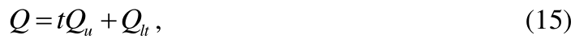
где t - продолжительность полива, ч; u Q - максимальный часовой расход воды на полив, м³ /ч; lt Q - расход воды, м³ /сут, на собственные нужды узла очистки (на промывки сеток, зернистых загрузок, на мойку территории станции, полив зеленых насаждений вокруг станции и др.) определяется по формуле
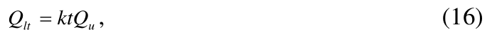
где k - коэффициент, учитывающий расход воды на собственные нужды узла очистных сооружений, принимается 0,01-0,03.
6.6.9 Требования к источнику водоснабжения и водозаборным сооружениям
6.6.9.1 Качество воды в источнике водоснабжения должно соответствовать требованиям, приведенным в таблице 4. Использование воды иного качества допускается при надлежащем обосновании с применением оборудования для дополнительной очистки или подготовки.
Таблица 4 - Показатели пригодности воды по степени влияния на элементы системы капельного орошения
| Показатель | Степень пригодности воды | Степень пригодности воды | Степень пригодности воды |
|---|---|---|---|
| пригодна | условно пригодна | непригодна | |
| Общая минерализация, мг/л | < 500 | 500-2000 | > 2000 |
| рН | 6-7 | 7-8 | > 8 |
| Содержание марганца, мг/л | < 0,1 | 0,1-1,5 | > 1,5 |
| Содержание железа, мг/л | < 0,2 | 0,2-1,5 | > 1,5 |
| Содержание сероводорода, мг/л | < 0,2 | 0,2-2,0 | > 2,0 |
| Количество популяций бакте- рий | < 10∙10 6 | 10∙10 6 -50∙10 6 | > 50∙10 6 |
6.6.9.2 Водозабор при необходимости должен быть обеспечен сооружениями и оборудованием для забора воды из открытого водотока, водоема или подземного источника. Забор воды должен обеспечивать наименьшую нагрузку на фильтрационное оборудование.
6.6.10.1 При выборе для систем капельного орошения с идентичными напорно-расходными характеристиками насосного оборудования следует применять насосы с наибольшим коэффициентом полезного действия.
6.6.10.2 Силовая установка насосной станции может быть оборудована электродвигателем или двигателем внутреннего сгорания.
6.6.10.3 Выбор насоса по производительности осуществляется с учетом потерь напора в фильтрационном оборудовании, трубопроводной сети, применяемой арматуре, требуемого напора для работы капельниц, а также с учетом потери напора на подъем и запаса производительности насоса (не менее 10 %).
6.6.10.4 Расчетная подача воды насосной станции на оросительных системах определяется максимальной ординатой укомплектованного графика гидромодуля и коэффициентом форсирования. Минимальная производительность насосной станции должна соответствовать водопотреблению культуры и составлять не менее 30-80 м³ /га в сутки в зависимости от зоны и условий применения.
6.6.10.5 При выборе типа здания насосной станции следует учитывать возможность открытой или полуоткрытой установки оборудования, а также применение блочно-комплектных конструкций.
6.6.10.6 Резервные агрегаты на насосных станциях допускается проектировать при надлежащем обосновании.
6.6.11 Требования к фильтрационному оборудованию
6.6.11.1 На входе системы капельного орошения должен быть предусмотрен сороудерживающий элемент.
6.6.11.2 Уровень очистки воды при фильтрации должен соответствовать качеству в зависимости от типа применяемых капельниц.
6.6.12 Требования к оборудованию подготовки и внесения химикатов и удобрений
6.6.12.1 Оборудование для внесения химикатов и удобрений должно состоять из емкости для подготовки маточных растворов, насоса-дозатора и вспомогательной арматуры.
6.6.12.2 Оборудование для внесения химикатов и удобрений должно выполняться из химически стойких материалов или иметь антикоррозионное покрытие.
6.6.12.3 Емкость для подготовки маточного раствора может быть напорная или безнапорная. Емкость должна иметь загрузочный люк, штуцера для подвода и отвода жидкости, сливной штуцер. Безнапорная емкость должна быть оснащена воздушным клапаном или отверстием, сеткой-фильтром.
6.6.12.4 Насос-дозатор должен обеспечивать пропорциональную подачу маточного раствора химикатов или удобрений в поток оросительной воды.
6.6.12.5 Вспомогательная арматура должна обеспечивать возможность подключения, включения-выключения насоса, регулировку потока.
6.6.12.6 Допустимая концентрация химикатов или удобрительных веществ в оросительной воде не должна превышать 5 %.
6.6.13 Требования к магистральным и распределительным трубопроводам
6.6.13.1 Оросительная сеть должна позволять проводить на участке механизированные работы по обработке почвы и растений - пахоту, культивацию, опрыскивание и др.
6.6.13.2 При монтаже допускаются различные способы укладки труб. В одних случаях трубопроводы прокладываются по поверхности земли, в других ниже поверхности земли в (грунте), реже - в мелких бороздах.
6.6.13.3 Расположение трубопроводов в плане оросительной сети должно приниматься в увязке с рельефом местности, инженерно-геологическими условиями, принятыми способом и техникой полива и требованиями организации орошаемой территории.
6.6.13.4 Оросительную сеть необходимо проектировать из условий осуществления круглосуточного полива.
6.6.13.5 Трубопроводы оросительной сети должны быть изготовлены из стойких к коррозии материалов.
6.6.14 Требования к поливным трубопроводам капельного орошения и их расположению
6.6.14.1 В зависимости от орошаемой культуры, схемы посадки и типа почвы допускается применение поливных капельниц типа: наружные, интегрированные (встроенные), компенсированные или некомпенсированные по давлению.
6.6.16.2 Для шпалерного размещения садовых культур целесообразно использовать поливные трубопроводы капельного орошения с большим сроком службы, а для овощных культур, картофеля - с малым сроком службы или одноразового использования.
6.6.14.3 При подпочвенном размещении поливных трубопроводов глубина заложения принимается в зависимости от физических свойств почвы, выбранных технологий обработки почвы и применяемых механизмов.
6.6.14.4 При выборе поливных трубопроводов следует учитывать необходимые параметры контуров увлажнения, обеспечивающие возможность подачи влаги к основной массе корневой системы растений. Параметры контуров увлажнения зависят от водно-физических свойств почвы, расходов капельниц, поливной нормы и предполивной влажности почвы.
6.6.14.5 Подключение поливных трубопроводов к распределительным следует предусматривать как одно- или двухстороннее.
СП 100.13330.2016
6.6.14.6 Поливные трубопроводы капельного орошения должны соответствовать техническим требованиям ГОСТ ИСО 9261.
6.6.15 Требования к соединительной и запорной арматуре
6.6.15.1 Арматура должна отвечать требованиям безопасности ГОСТ 12.2.063 и выполняться из стойких к коррозии материалов.
6.6.15.2 Арматура должна обеспечивать технические характеристики (давление, расход), иметь полнопроходное сечение (пулевые краны и т. п.), предотвращать протечки, обеспечивать опорожнение оросительной сети.
6.6.15.3 Применяемая запорно-регулирующая арматура может быть ручного, полуавтоматического и автоматического типа.
6.6.15.4 Запорно-регулирующая арматура должна обеспечивать поддержание давления в заданных пределах, предохранение сети от гидродинамических ударов, переключение потоков воды, автоматизацию процессов.
6.6.16 Требования к контрольно-измерительным приборам и системам управления
6.6.16.1 Контрольно-измерительные приборы должны быть промышленного производства и соответствовать утвержденным нормативным документам на данную продукцию.
6.6.16.2 Система управления капельным орошением может быть ручной, с элементами автоматического управления и полностью автоматизированной с гидравлическим, электрическим, пневматическим и смешанным приводом механизмов.
6.6.16.3 Программное устройство должно обеспечивать автоматическое управление капельным орошением по заранее введенной программе.
6.6.16.4 Средства автоматизации, как правило, должны обеспечивать:
СП 100.13330.2016
- автоматическое, программное (по времени и по внешним метеорологическим факторам и внутренним параметрам) регулирование и управление заданными параметрами;
- периодическую регистрацию значений параметров;
- аварийную сигнализацию и регистрацию аварийных значений контролируемых параметров;
- возможность ручного, дистанционного управления исполнительными механизмами системы, растворного узла и т. д.;
- отображение и регистрацию положений всех исполнительных механизмов системы, энергопунктов, растворного узла минеральных удобрений и т. д.
6.7Системы синхронного импульсного дождевания
- для полива многолетних насаждений, кормовых культур без образования поверхностного стока;
- при расчлененном рельефе и уклонах поверхности от 0,05 до 0,3;
- на незасоленных почвах любой водопроницаемости, в том числе на маломощных.
При перепаде высот на орошаемом участке более 25 м следует устанавливать усилители командных сигналов на каждом ярусе.
В случае использования системы импульсного дождевания на существующей закрытой напорной оросительной сети необходимо применять генераторы командных сигналов с дождевателями.
Расход поливного трубопровода r Q , л/с, следует определять по формуле
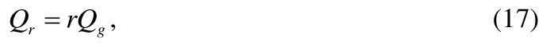
где r - число импульсных дождевателей, обслуживаемых трубопроводом; g Q - расчетный расход заполнения импульсного дождевателя, л/с.
Расчетный расход заполнения импульсного дождевателя, л/с, следует определять по формуле
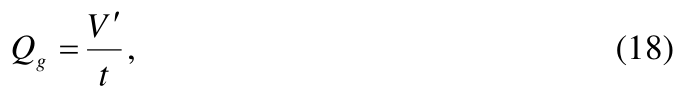
где V ′ - объем выплеска импульсного дождевателя за цикл, л; t - время заполнения гидропневмоаккумуляторов всех импульсных дождевателей на системе, с.
СП 100.13330.2016
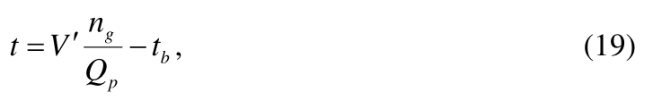
где g n - число импульсных дождевателей системы; p Q - расчетный расход оросительной системы, л/с; b t - время выплеска воды всеми импульсными дождевателями системы следует принимать 5-8 с.
6.8Системы внутрипочвенного орошения
- рельеф участка должен иметь уклоны не более 0,01;
- почвы должны быть незасоленные, легкого, среднего и тяжелого механического состава со скоростью капиллярного поднятия не менее 0,5 мм/мин.
- размер твердых частиц - не более 1 мм;
- мутность - не более 0,04 г/дм³ ;
- минерализация - не более 1 г/дм³ .
При необходимости следует предусматривать отстойники или очистные сооружения.
Подготовку животноводческих стоков для системы внутрипочвенного орошения следует проводить согласно 6.10.
- уклон местности по длине увлажнителей должен быть не более 0,01;
- глубина закладки увлажнителей в грунт - от 0,4 до 0,6 м;
- максимальная длина увлажнителя - до 250 м.
Расстояние между увлажнителями для садов и виноградников зависит от расстояния между рядами посадок:
- для новых насаждений рекомендуется закладывать один-два увлажнителя в ряду сада или виноградника;
- в существующих садах и виноградниках увлажнитель следует закладывать на расстоянии 1,5-2,0 м от оси ряда.
СП 100.13330.2016 ные трубопроводы необходимо оборудовать смотровыми и опорожняющими колодцами.
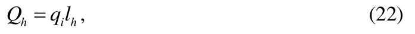
где i q - величина впитывания воды почвой на 1 м увлажнителя, определяемая по специальным исследованиям или анализам, м² /с; h l - длина увлажнителя, м.
Расчетный расход трубчатого увлажнителя ht Q , м³ /с, надлежит рассчитывать по формуле
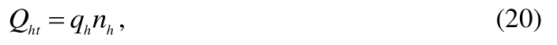
где h q - расход трубчатого увлажнителя, м³ /с; h n - число одновременно работающих увлажнителей, питаемых от рассчитываемого оросителя.
6.8.13 Системы кротово-внутрипочвенного орошения
6.8.13.1 Системы кротово-внутрипочвенного орошения следует применять с соблюдением следующих требований:
СП 100.13330.2016
- размер твердых частиц в подготовленных сточных водах не превышает 3,0 мм;
- количество взвешенных веществ в подготовленных сточных водах не превышает 1 г/дм³ .
6.8.13.2 Систему кротового орошения устраивают по открытой или закрытой схеме. При открытой схеме воду из участкового канала подают во временный ороситель, выводные борозды, из которых она распределяется по кротовым увлажнителям.
6.8.13.3 При закрытой сети вода в кротовины поступает из оросительного трубопровода. Сопряжение оросительного трубопровода с кротовыми увлажнителями осуществляется через пористую засыпку. В качестве пористой засыпки следует использовать щебень, гравий или керамзит размером фракции 3-5 см. Мощность слоя пористой засыпки над оросительным трубопроводом не должна превышать 0,25-0,30 м. Ороситель укладывается в траншею, облицованную по периметру полиэтиленовой пленкой.
6.8.13.4 Оросительный трубопровод следует изготавливать из неметаллических труб с устройством в верхней части труб водовыпусков в виде круглых отверстий. Расстояние между ними должно соответствовать половине расстояния между кротовыми увлажнителями. Уклон оросительного трубопровода принимают не более 0,001, длину оросительных трубопроводов - 100-150 м, расстояние между ними - 150-180 м, а между распределительными трубопроводами 20-300 м.
6.8.13.5 Расстояние между кротовыми увлажнителями определяется из условия смыкания контуров увлажнения и в зависимости от способа нарезки увлажнителей может составлять 0,8-1,2 м, расход в них - 0,2-0,5 л/с.
6.8.13.6 Для закрепления кротовых увлажнителей используется полимерный крепитель (раствор полимера с водой). Расход крепителя зависит от фактической влажности почвы.
Доза и концентрация раствора полимера при устройстве кротовых увлажнителей на тяжелосуглинистых и глинистых почвах представлена в таблице 5.
Таблица 5 - Доза и концентрация раствора полимера при устройстве кротовых увлажнителей в зависимости от их влажности
| Полимер | Исходная влажность полуметрового слоя почвы,%НВ | Исходная влажность полуметрового слоя почвы,%НВ | Исходная влажность полуметрового слоя почвы,%НВ |
|---|---|---|---|
| 50-65 | 65-80 | 80-95 | |
| Полиакриламид | 1,0 1,5 - | 0,5 1,0 - | 0,3 0,5 - |
| 1,5 2,0 - | 1,0 1,5 - | 0,5 1,0 - | |
| К-9 | 4,0 5,0 - 1,2 1,5 - | 3,0 1,0 - 0,8 1,2 - | 2,0 3,0 - 0,8 0,8 - |
| 5,5 5,0 - | 5,0 4,5 - | 4,5 4,0 - | |
| К-9, в животно- | 0,8 1,2 - | ||
| водческих стоках | 1,2 1,5 - - | 3,5 3,0 - | 0,5 0,8 - |
| 4,0 3,5 | 3,0 |
Примечание - Доза раствора полимера на 1 м погонной длины кротового увлажнителя (числитель); концентрация % к массе раствора полимера (знаменатель).
6.9Системы лиманного орошения
Таблица 6 - Типы и виды лиманов
| Типы лиманов в зависимости от источника орошения | Виды лиманов | Виды лиманов |
|---|---|---|
| Типы лиманов в зависимости от источника орошения | по способу регулирования воды | по глубине затопления |
| Пойменные, затопляемые паводковыми водами рек | Многоярусные с регули- рованием длительности затопления | Мелководные Среднего затопления Глубоководные |
| Пойменные, затопляемые паводковыми водами рек | Проточные с регулирова- нием длительности за- топления | Мелководные и глу- боководные |
| Пойменные, затопляемые паводковыми водами рек | Комбинированные | - |
| Затопляемые талыми во- дами, стекающими с выше- расположенных территорий | Одноярусные | - |
| Затопляемые талыми во- дами, стекающими с выше- расположенных территорий | Многоярусные раздель- ного или последователь- ного затопления | Мелководные и глу- боководные |
| Подпитываемые из каналов обводнительных или ороси- тельных систем | Многоярусные раздель- ного или последователь- ного затопления | Мелководные |
- мелководные, глубина затопления - 15-40 см;
- среднего затопления, глубина затопления - 40-70 см;
- глубоководные, глубина затопления - более 70 см.
- на лиманы водораздельного плато;
- лиманы, устраиваемые на пологих склонах;
- лиманы замкнутых понижений;
- лиманы потяжин и лощин;
- лиманы, питаемые сбросными водами из водохранилищ и прудов;
- лиманы, использующие сток степных рек и их притоков;
- пойменные лиманы;
- лиманы, питаемые водами оросительно-обводнительной системы.
Основные особенности каждой разновидности лиманов приведены в таблице 7, а схемы систем лиманного орошения в приложении Л.
Таблица 7 - Классификация систем лиманного орошения
| Название лима- нов | Характеристика рельефа, уклон | Глубина за- топления | Число ярусов |
|---|---|---|---|
| Лиманы водораз- дельного плато | Водораздельное плато, слабоволнистый рельеф, i =0,0003-0,001 | Мелкого (до 0,5 м) затоп- ления | Одноярусные и многоярусные |
| Лиманы, устраи- ваемые на поло- гих склонах | Склоны водосборных бас- сейнов от водораздель- ного плато пойменных террас, i = 0,0003-0,001 | То же | То же |
| Лиманы замкну- тых понижений | Склоны замкнутого пони- жения, пониженная чаша, i = 0,0003-0,001 | » | Одноярусные и многоярусные, кольцевой формы |
| Лиманы потяжин и лощин | Склоны, потяжины и ло- щины с тальвегами, i = 0,0003-0,001 | Мелкого (до 0,5 м) и глу- бокого (> 0,5 м) за- топления | Одноярусные и многоярусные |
| Лиманы, питае- мые сбросными водами из водо- хранилищ и пру- дов | Склоны, поймы и поймен- ные террасы i = 0,0003- 0,001 | То же | Многоярусные |
СП 100.13330.2016
| Лиманы, исполь- зующие сток степных рек и их притоков | Пойменные и надпоймен- ные террасы прилегающей степи, достаточно вырав- ненные, i = 0,0003-0,001 | Глубокого (> 0,5 м) за- топления | То же |
|---|---|---|---|
| Пойменные ли- маны | Поймы рек, i = 0,0003- 0,001 | То же | » |
| Лиманы, питае- мые водами оро- сительно-обвод- нительной си- стемы | Пологие склоны, располо- женные ниже трассы оро- сительно-обводнитель- ного канала, i = 0,0003- 0,001 | Мелкого (< 0,5 м) за- топления | » |
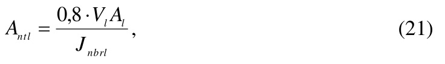
где l V - объем стока расчетной обеспеченности с 1 км² , тыс. м³ ; l A - водосборная площадь, км² ; nbrl J - средневзвешенная норма лиманного орошения брутто, тыс. м³ /га, определяемая по данным специальных исследований.
Средневзвешенная норма лиманного орошения для мелководных лиманов принимается 2,6-3,5 тыс. м³ /га, для глубоководных - до 5 тыс. м³ /га.
Мелководные лиманы на склонах следует устраивать на выровненных участках, пригодных для лиманного орошения по почвенным условиям с уклоном местности не более 0,002.
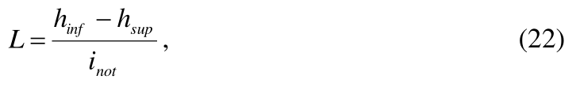
где inf h - слой воды у нижней дамбы, м; sup h - слой воды у верхней дамбы, принимается не менее 0,05 м; not i - средний уклон местности.
Слой воды у нижней дамбы назначается из условия обеспечения равномерного увлажнения почвы. При этом средняя глубина затопления лимана должна быть равна норме лиманного орошения, выраженной слоем воды в метрах.
Удельный расход q , л/с на 1 га, определяется по формуле
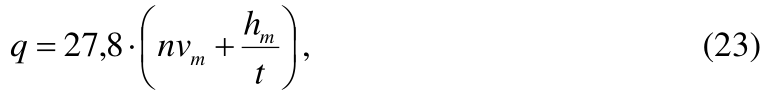
где n - коэффициент, равный 0,68. m v - средняя скорость впитывания, определяемая по методу заливаемых площадок, см/ч; m h - средний слой затопления, см; t - продолжительность подачи воды, ч.
Водосборно-сбросная сеть каналов в плане должна проходить по пониженным местам и иметь минимальную протяженность.
4, глубина - 0,5 м. Превышение бровки каналов над расчетным уровнем воды в канале должно быть не менее 0,2 м.
Расчетный расход водосборно-сбросных каналов следует устанавливать в зависимости от объема воды, подлежащего сбросу после влагозарядки, и допускаемой продолжительности стояния воды в лимане.
6.10Оросительные системы с использованием животноводческих стоков
- навозоприемник (приемный резервуар);
- аварийный резервуар;
- промежуточную насосную станцию для перекачки жидкого навоза или навозных стоков в цех разделения;
- цех разделения жидкого навоза или навозных стоков на твердую и жидкую фракции;
- площадку хранения твердой фракции;
- 3-секционный карантинный резервуар-дегельминтизатор;
- секционный накопитель для хранения жидкой фракции;
- узел смешивания стоков с водой;
- насосную станцию подачи природной воды в узел смешивания;
- мелиоративную насосную станцию;
- поля орошения.
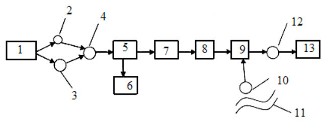
1 - животноводческое предприятие; 2 - навозоприемник (приемный резервуар); 3 - аварийный резервуар; 4 - промежуточная насосная станция; 5 - цех разделения; 6 - площадка хранения твердой фракции; 7 -карантинный резервуар; 8 - секционный накопитель; 9 - узел смешивания стоков с водой; 10 -насосная станция; 11 - водный объект; 12 - мелиоративная насосная станция; 13 - поля орошения [18]
Рисунок 1 - Технологическая линия подготовки, хранения и использования животноводческих стоков
При поливе дождевальными машинами с гидравлическим приводом влажность стоков должна быть не менее 99 %, размер твердых фракций - не более 2,5 мм.
СП 100.13330.2016 также учитывать химический и фракционный составы стоков, время проведения поливов (поливы вегетационные или круглогодовые), состав выращиваемых сельскохозяйственных культур.
В зоне достаточного и избыточного увлажнения в вегетационный период концентрация общего азота в поливной воде не должна превышать, г/дм³ :
- 1,5 - для многолетних злаковых трав второго и последующих лет произрастания;
- 1,0 - для многолетних злаковых трав спустя два месяца после всходов, а также для люцерны, клевера, смеси однолетних трав без бобовых компонентов;
- 0,8 - для кукурузы и зерновых;
- 0,5 - для корнеплодов и подсолнечника.
В зоне недостаточного увлажнения концентрацию азота допускается применять в два раза меньше или использовать данные специальных исследований.
6.11Оросительные системы с использованием сточных вод
Пригодность сточных вод для орошения должна быть определена по химическим и физическим показателям с учетом почвенных условий проектируемого объекта и согласована с органами санитарно-эпидемиологической службы и ветеринарного надзора.
- с круглогодовым приемом сточных вод в пруды-накопители и с последующим использованием их для орошения только в вегетационный период;
- с круглогодовым приемом и круглогодовым поливом;
- с частичным, в том числе сезонным, приемом и с использованием сточных вод для орошения.
В составе оросительных систем кроме сооружений, указанных в 5.1, при необходимости следует предусматривать пруды-накопители, регулирующие емкости, средства контроля за состоянием окружающей природной среды.
Вариант конструкции оросительной системы в зависимости от технологии использования сточных вод должен быть обоснован технико-экономическими расчетами.
СП 100.13330.2016
Между границами оросительной системы, жилыми и производственными зданиями, автомобильными и железными дорогами необходимо предусматривать санитарно-защитные и водоохранные зоны.
- в пределах первого и второго поясов зоны санитарной охраны источников хозяйственно-питьевого водоснабжения;
- на территориях, расположенных в пределах области питания действующих и проектируемых водозаборов, эксплуатирующих незащищенные водоносные горизонты, залегающие близко от поверхности;
- на территории с выходом на поверхность трещиноватых и карстовых пород, а также песчаных гравийно-галечных отложений, не перекрытых водоупорным слоем;
- в пределах первой и второй зон округов санитарной (горно-санитарной) охраны лечебно-оздоровительных местностей и курортов;
- в границах водоохранных зон поверхностных водных объектов;
- на территории с сильно расчлененным рельефом, сильной каменистостью и завалуненностью, выходами плотных слабовыветриваемых пород; на сильнозасоленных и солонцеватых почвах.
Не рекомендуется устраивать оросительные системы с использованием сточных вод в местах с напорным грунтовым питанием и на периодически затопляемых поймах рек.
6.12Водосборно-сбросная сеть
- поверхностного стока (ливневых и талых вод);
- воды из распределителей и оросителей при технологических сбросах и опорожнении, а также при авариях;
- сбросной воды с полей при поверхностном поливе и дождевании.
- обеспечивать своевременный отвод воды в водоприемник без нарушения режима работы сооружений оросительной системы и затопления орошаемых земель;
- обеспечивать, как правило, двухсторонний прием сбросной воды;
- иметь минимальные протяженность и число пересечений с оросительной и коллекторно-дренажной сетью, коммуникациями.
При использовании тальвегов, лощин, оврагов в качестве водосбросных трактов следует проверять их пропускную способность и возможность размыва.
При плановом размещении сбросной сети надлежит предусматривать ее совмещение с кюветами проектируемой дорожной сети оросительной системы.
СП 100.13330.2016 лотки) и закрытой (трубопроводы).
Для опорожнения открытых и закрытых распределителей и оросителей, а также для промывки трубопроводов закрытой оросительной сети следует предусматривать концевые сбросные каналы.
Расчетный расход должен также обеспечивать создание транспортирующей скорости для удаления наносов из трубопровода.
Уровень воды в водосборных каналах при расчетных расходах должен быть на 0,15-0,20 м ниже поверхности земли.
6.13Каналы
- минимальных потерь воды на фильтрацию и сбросы;
- минимальной площади отчуждения земель;
- сохранности прилегающих земель;
- комплексной механизации строительных работ;
- минимальных эксплуатационных затрат.
Допускается устройство каналов на косогорах в полувыемке, при этом линия поверхности земли с низовой стороны косогора должна проходить через точку пересечения откоса канала с уровнем воды при расчетном расходе. В этом случае сопряжение дамбы с основанием следует принимать ступенчатым.
В зависимости от геологических условий и способа производства работ допускается применять сечения полигональной, параболической или прямоугольной формы.
- обеспечение минимальных потерь воды на фильтрацию и высокого коэффициента полезного действия оросительного канала;
- экономное использование водных, земельных и топливно-энергетических ресурсов;
- использование высокопроизводительной техники и технологий строительства;
- высокая производительность труда при эксплуатации противофильтрационных облицовок оросительных каналов;
- комплексная автоматизация технологических процессов, при этом степень автоматизации должна быть обоснована технико-экономическими расчетами;
- соблюдение требований охраны окружающей природной среды и санитарно-гигиенических требований.
- нагрузки от смерзания облицовки по контакту с ложем канала;
- гидростатические нагрузки от воды;
- гидродинамические нагрузки от воздействия волн;
- ледовые нагрузки;
- температурно-усадочные деформации в бетоне при укладке в облицовку;
- воздействие напора воды в канале со стороны грунтовых вод.
Превышения гребней дамб и бровок берм каналов над максимальным уровнем воды следует назначать в соответствии с таблицей 8. Максимальный уровень следует принимать из условия принятой схемы автоматизированного водораспределения.
При расходе воды в канале свыше 100 м³ /с превышение гребней дамб должно определяться в соответствии с СП 39.13330.
Таблица 8 - Превышения гребней дамб и бровок берм в зависимости от расхода воды в канале
| Расход воды в канале, м³ /с | Превышения гребней дамб и бровок берм канала, см | Превышения гребней дамб и бровок берм канала, см |
|---|---|---|
| Расход воды в канале, м³ /с | без облицовки и с грун- тово-пленочным экраном | с облицовкой |
| До 1 | 20 | 15 |
| Св. 1 до 10 | 30 | 20 |
| » 10 » 30 | 40 | 30 |
| » 30 » 50 | 50 | 35 |
| » 50 » 100 | 60 | 40 |
Заложение откосов каналов, проходящих в земляном русле, или с грунтово-пленочным экраном при глубине каналов более 5 м необходимо принимать на основании опыта строительства и эксплуатации существующих каналов, находящихся в аналогичных условиях; при отсутствии аналогов заложения откосов каналов с глубиной более 5 м принимаются по расчету.
Заложение откосов дамб при высоте их до 3 м принимается по таблице П.2 приложения П. Заложение откосов дамб при напоре воды более 3 м надлежит принимать в соответствии с СП 39.13330.
Расстояние от бровки выемки до подошвы отвала следует принимать при глубине выемки: до 2,5 м - 3 м; от 2,5 до 5 м - 5 м; более 5 м - по расчету устойчивости откоса.
Расстояние от бровки выемки до подошвы отвала допускается увеличивать при соответствующем обосновании в зависимости от условий производства работ.
Откосы и дно выработок вдоль каналов должны быть спланированы и покрыты плодородным слоем почвы.
Для каналов, проходящих в земляном русле, минимальное значение радиуса закругления , м, следует принимать по формуле
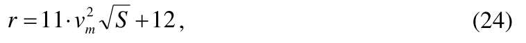
где m v - средняя скорость течения воды в канале, м/с;
S - площадь живого сечения, м² .
Для каналов с монолитными бетонными, сборными железобетонными и асфальтобетонными облицовками радиус закругления следует, как правило, определять по формуле
СП 100.13330.2016
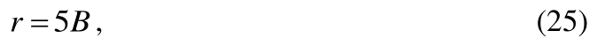
где B - ширина канала по урезу воды.
Величину аварийного расхода следует определять в зависимости от схемы водораспределения, уровня автоматизации технологических процессов, аккумулирующей способности распределительной сети, допускаемого времени ликвидации аварий.
Таблица 9 - Отношение ширины по дну каналов трапецеидальной формы к глубине их наполнения в зависимости от коэффициента заложения откосов
| m | β |
|---|---|
| 1,0 | 0,8-3,0 |
| 1,5 | 0,6-3,1 |
| 2,0 | 0,5-3,4 |
| 2,5 | 0,4-3,8 |
Для коэффициентов заложения откосов более 2,5 это отношение следует определять по расчету или по данным аналогов.
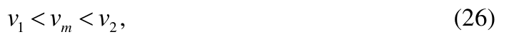
где m v - средняя скорость воды в канале, м/с;
1 v - допускаемая незаиляющая скорость воды, м/с;
2 v - допускаемая неразмывающая скорость воды, м/с.
Допускаемые средние скорости для каналов с монолитными бетонными, сборными железобетонными и асфальтобетонными облицовками следует принимать по таблице С.6 приложения С.
Для каналов в земляном русле и с грунтово-пленочными экранами с расходом более 50 м³ /с допускаемые средние скорости необходимо принимать на основании специальных исследований или по аналогам.
СП 100.13330.2016 слоистом их расположении допускаемую скорость следует определять как для основного грунта.
Для каналов водосборно-сбросной сети величина допускаемой скорости может быть увеличена на 10 %, а для периодически действующих сбросных каналов на 20 % относительно допускаемой неразмывающей скорости для каналов оросительной сети.
Ширина полос земель, отводимых для каналов с пропускной способностью воды более 10 м³ /с, каналов, разрабатываемых взрывным методом, а также проходящих в районах, подверженных оползням и селям, и в населенных пунктах, покрытых ценными лесными насаждениями, должна определяться проектом, утвержденным в установленном порядке.
6.14Трубчатая сеть
- по устройству - закрытой с подземной или надземной укладкой труб и разборной с надземной укладкой труб;
- по способу создания напора - с механической подачей, самотечной напорной и безнапорной;
- по назначению - магистральной, распределительной и поливной;
- по схеме - тупиковой, попарно закольцованной и полностью закольцованной.
Коэффициент полезного действия трубопровода принимается не менее 0,98.
При проектировании стальных трубопроводов использование стальных труб, соединительных деталей, запорной арматуры, бывших в употреблении (эксплуатации), не допускается.
- для поливных трубопроводов, из условия пропуска воды для одной дождевальной или поливной машины (установки);
- для распределительного трубопровода, из условия суммарного расхода воды максимального числа одновременно работающих на орошаемом массиве дождевальных или поливных машин (установок);
СП 100.13330.2016
- для магистрального трубопровода, из условия суммарного пропуска воды в одновременно работающих распределительных трубопроводах.
- давления грунта и транспорта на опорожненный трубопровод;
- рабочего давления воды в трубопроводе, давления грунта и транспорта;
- давления воды в трубопроводе при гидравлическом ударе (или вакууме) и давления грунта.
- на участках с расчетным внутренним давлением более 1,5 МПа;
- при устройстве переходов под железными и автомобильными дорогами, через водные преграды и овраги;
- при прокладке трубопроводов по автодорожным и городским мостам, по опорам эстакад и в туннелях.
Стальные трубы следует использовать экономичных сортаментов, со стенкой, толщину которой необходимо принимать по расчету.
При прокладке трубопроводов в зоне отрицательных температур материал труб и элементов стыковых соединений должен быть морозостойким.
Толщина слоя уплотненного грунта должна быть не менее 10 см.
При проектировании подземных трубопроводов следует предусматривать послойное уплотнение грунта засыпки между стенками трубы и траншеи.
- гидрантами-водовыпусками для подключения поливной или дождевальной техники;
- поворотными затворами (задвижками), устанавливаемыми в начале каждого оросительного трубопровода;
- поворотными затворами (задвижками), устанавливаемыми на ответвлениях, через которые предусматривается сброс воды при опорожнении ремонтных участков;
- вантузами для удаления воздуха, которые устанавливаются в повышенных переломных точках профиля и в концевых или начальных точках оросительных трубопроводов (в зависимости от рельефа местности);
- противоударной арматурой и клапанами для впуска и выпуска воздуха;
- предохранительными сбросными устройствами, устанавливаемыми в концевых точках распределительных (оросительных) трубопроводов, предохраняющих от повышения давления в сети вследствие сокращения водоотбора;
- регуляторами давления.
СП 100.13330.2016
На зимний период трубопроводы следует опорожнять. Опорожнение, как правило, следует предусматривать самотечным. Уклон трубопроводов к месту опорожнения должен быть не менее 0,001. Допускается опорожнение трубопроводов с помощью насосов при невозможности устройства самотечного опорожнения.
Для защиты от коррозии внутренней поверхности стальных труб независимо от коррозионной активности транспортируемой воды необходимо предусматривать изоляционные покрытия: цементно-песчаные, цементно-полимерные, лакокрасочные, цинковые и другие, разрешенные для применения в хозяйственно-питьевом водоснабжении.
Электрохимическую защиту трубопроводов из железобетонных труб со стальным сердечником, имеющих наружный слой бетона проницаемостью ниже нормальной с допускаемой шириной раскрытия трещин при расчетных нагруз- ках 0,2 мм, необходимо предусматривать при концентрации хлор-ионов в грунтах более 150 мг/л, при нормальной проницаемости бетона и допускаемой ширине раскрытия трещин 0,1 мм - более 300 мг/л.
6.15Лотковая сеть
- сложных топографических и геологических условий;
- на участках, где каналы должны проходить в насыпи;
- на участках со скальными, с сильно фильтрующими и просадочными грунтами;
- на косогорных участках, подверженных оползневым явлениям.
Коэффициент полезного действия лоткового канала следует принимать не менее 0,95.
Оптимальными условиями применения лотковой сети следует считать уклон поверхности земли от 0,0005 до 0,003 и подачу воды от 100 до 500 л/с. При уклонах поверхности земли более 0,003 и менее 0,0005 применение лотковой сети должно подтверждаться соответствующим технико-экономическим обоснованием.
- при выпуске воды из старших лотков в младшие превышение отметок воды должно быть не менее размера потерь воды в водовыпуске, конструктивно принимается равным 5-10 см;
- превышение отметок воды в младших лотках над поверхностью земли должно обеспечивать подачу необходимого расхода воды в зависимости от принятой техники полива, типа водовыпуска, длины оросителей и уклона местности;
- при подаче воды из лотков в оросительную сеть превышение уровней воды в них должно обеспечивать подачу (пропуск) через водовыпуски необходимых расходов воды;
СП 100.13330.2016
- для сифонных водовыпусков во временную оросительную сеть превышение уровней воды в них не должно быть менее 0,5 м;
- при подаче воды из лоткового канала в передвижные гибкие и жесткие или стационарные трубопроводы уровень воды в лотке должен обеспечивать подачу в трубопровод заданного расхода воды с необходимым напором;
- максимальная скорость течения воды в лотках не должна превышать 6 м/с, минимальную скорость необходимо назначать из условия обеспечения транспортирования наносов.
При использовании на лотковой сети автоматических регуляторов уровня глубина лотка l H , см, должна удовлетворять условию:
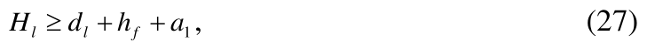
где l d - глубина наполнения лотка при пропуске расчетного расхода, см; f h - гидравлические потери в автоматическом регуляторе при пропуске расчетного расхода, см;
1 a - превышение борта лотка над максимальным уровнем воды, принимается равным 5 см.
6.16Регулирование водораспределения
Гидротехнические сооружения должны оборудоваться регуляторами автоматического действия.
На автоматизированных гидротехнических сооружениях следует предусматривать гидравлические перепады, обеспечивающие работоспособность автоматических регуляторов.
Головные водозаборные узлы, водовыделы в хозяйства и каналы сбросной сети необходимо оборудовать средствами водоучета.
6.17Дренаж на орошаемых землях
СП 100.13330.2016 корнеобитаемом слое засоленных почв на уровне, не превышающем показателей, приведенных в приложении Ф.
СП 100.13330.2016
- систематический - дрены или скважины вертикального дренажа расположены равномерно на орошаемых землях;
- выборочный - дрены или скважины приурочены к отдельным участкам орошаемых земель с неудовлетворительным мелиоративным состоянием;
- линейный - дрены или скважины расположены по фронту питания подземных вод.
Комбинированный дренаж следует предусматривать, как правило, при двухслойном или многослойном строении водоносного пласта, когда верхний слабопроницаемый слой мощностью до 15 м подстилается водонапорным пластом мощностью не более 15 м.
СП 100.13330.2016
Коллекторы для приема воды из дрен и отвода ее за пределы мелиорируемой территории следует проектировать как закрытыми, так и открытыми, при этом внутрихозяйственные коллекторы должны быть, как правило, закрытыми. Коллекторы, проходящие через населенные пункты, необходимо проектировать только закрытыми.
- керамических труб - по ГОСТ 8411;
- бетонных безнапорных труб - по ГОСТ 20054;
- хризотилцементных труб - по ГОСТ 31416;
- железобетонных безнапорных труб - по ГОСТ 6482;
- полимерных труб - по ГОСТ Р 54475;
- стеклопластиковых труб - по ГОСТ Р 53201.
Параметры временного дренажа необходимо определять исходя из обеспечения заданной скорости отвода промывных вод в период капитальных промывок с учетом работы постоянного дренажа.
СП 100.13330.2016 проверкой динамики подземных вод в характерные периоды (вегетационный, предпосевной и др.) по формулам неустановившегося режима.
- углубляться на 0,2-0,3 м в откос канала;
СП 100.13330.2016
- располагаться на высоте не ниже чем на 0,5 м над дном русла неукрепленного водоприемника и на 0,3 м - укрепленного;
- выступать из откоса не более 10-20 см.
СП 100.13330.2016
- 30 % - для стальных каркасно-стержневых и просечных из стальных листов;
- 25 % - для хризотилцементных и пластмассовых.
7Осушительные системы
7.1Основные требования к осушительным системам
- защиту от поступления поверхностных вод с окружающей водосборной площади;
- защиту от затопления паводковыми водами водоемов и водотоков;
- отвод поверхностного стока на осушаемом массиве;
- перехват и понижение уровней подземных вод на осушаемом массиве;
- защиту от подтопления фильтрационными водами из водоемов и водотоков.
Таблица 10 - Методы и способы осушения
| Тип водного пита- ния | Метод осушения зе- мель | Способ осушения земель |
|---|---|---|
| Грунтовый | Понижение уровней грунтовых вод | Открытые каналы (осушители), закрытый дренаж (систематиче- ский или выборочный), верти- кальный дренаж, кротовый и щелевой дренажи, углубление естественных дрен (реки, ру- чьи), кольматаж поверхности |
| Грунтовый | Перехват потока грун- товых вод | Ловчие каналы и дрены, берего- вой дренаж, вертикальный дре- наж |
| Грунтовый | Уменьшение притока грунтовых вод | Антифильтрационные завесы, мероприятия по ограничению питания грунтовых вод (борьба с потерями в каналах и пр.), био- логический дренаж |
| Грунтово-напор- ный | Понижение пьезомет- рических уровней: - на объекте | Глубокий горизонтальный (от- крытый и закрытый) дренаж, вертикальный дренаж, разгру- зочные скважины - усилители горизонтального дренажа |
| Грунтово-напор- ный | - за его пределами | Устройство водозаборов под- земных вод, мероприятия по ограничению питания напор- ного водоносного горизонта |
Продолжение таблицы 10
| Атмосферный | Ускорение поверх- ностного стока | Открытые каналы (собиратели), искусственные ложбины, закры- тые собиратели, планировка по- верхности, агромелиоративные мероприятия (глубокое рыхле- ние почвы, выборочное бороздо- вание, профилирование, грядо- вание и гребневание поверхно- сти, узкозагонная вспашка, вспашка вдоль склона) |
|---|---|---|
| Атмосферный | Повышение инфиль- трационной и аккуму- лирующей способно- сти почв | Кротовый и щелевой дренажи, агромелиоративные мероприя- тия (глубокое рыхление, глубо- кая вспашка, рыхление подпа- хотного горизонта, кротование, глубокое мульчирование почвы, известкование почвы, обработка почвы химическими мелиоран- тами, пескование торфов, меро- приятия по уменьшению глу- бины промерзания и ускорению оттаивания почвы) |
| Склоновый | Перехват на границе объекта склонового поверхностного стока | Нагорные каналы и ложбины, перехватывающие дрены, за- щитные дамбы |
Продолжение таблицы 10
| Уменьшение притока поверхностных вод со стороны | Комплекс противоэрозионных мероприятий на склоне (созда- ние прудов, лиманов, лесона- саждение, вспашка зяби и па- хота поперек склона, лункова- ние почвы, повышение агротех- ники и интенсивности использо- вания земель, оструктуривания почв) | |
|---|---|---|
| Намывной | Ускорение руслового паводкового стока | Регулирование рек-водоприем- ников (спрямление, углубление, уширение, расчистка русла) |
| Намывной | Защита территории от затопления | Обвалование рек, озер, нагорно- ловчих каналов |
| Намывной | Разгрузка реки (озера) системой мероприятий по регулированию стока | Устройство водохранилищ на реке и ее притоках. Переброска части стока в бассейн другой реки, перехват притоков реки (озера) каналом со сбросом воды ниже объекта |
Примечание - Способ осушения определяет принципиальную схему и конструкцию основного элемента осушительной системы - регулирующей части.
Таблица 11 - Расчетная обеспеченность расходов воды и условия их пропуска для проводящих каналов и водоприемников осушительных систем площадью до 2 тыс. га
| Сельскохозяйственное использование осушаемых земель | Расчетные расходы воды | Условия пропуска расчетных расхо- дов воды | Обеспе- ченность, % |
|---|---|---|---|
| Полевые севообороты с озимыми культу- рами (вне поймы) | Весеннего полово- дья | В бровках | 10 |
| Полевые севообороты с озимыми культу- рами (вне поймы) | Летне-осеннего па- водка | С запасом от бро- вок 0,3 м | 10 |
| Полевые севообороты без озимых культур | Предпосевной | С запасом от бро- вок 0,6 м | 10 |
| Пастбища | Летне-осеннего па- водка | С запасом от бро- вок 0,3 м | 10 |
| Сенокосы | Летне-осеннего па- водка | В бровках | 10 |
| Овощные севообо- роты | Предпосевной | С запасом от бро- вок 0,8 м | 5 |
| Овощные севообо- роты | Летне-осеннего па- водка | С запасом от бро- вок 0,5 м | 5 |
| Сады | Весеннего полово- дья | В бровках | 5 |
| Сады | Летне-осеннего па- водка | С запасом от бро- вок 0,5 м | 5 |
| Для всех видов ис- пользования земель | Средне-меженный | Обеспечение бес- подпорной работы впадающей сети | 50 |
| Поймы | То же | То же | 30-40 |
СП 100.13330.2016
СП 100.13330.2016
- на приморских, затапливаемых приливом или нагоном волны равнинах;
- в поймах рек, подверженных затоплению весенними и летне-осенними паводками на сроки, превышающие допускаемые для данного вида сельскохозяйственного использования земель;
- на приозерных заболоченных низменностях и на затапливаемых территориях, примыкающих к водохранилищам, для ликвидации зон мелководья.
- на безуклонных территориях, подтапливаемых водами морей, рек, озер, водохранилищ;
- при осушении замкнутых впадин во избежание строительства глубоких проводящих каналов;
- на участках вдоль железных и автомобильных дорог при экономической нецелесообразности переустройства существующих водопропускных сооружений.
Линейную систему вертикального дренажа для защиты сельскохозяйственных угодий от подтопления фильтрационными водами рек, водохранилищ, озер или для перехвата поступающих на объект подземных вод следует применять при проводимости подстилающих пород не менее 300 м² /сут.
Подпочвенное увлажнение применяется в грунтах с коэффициентом фильтрации более 0,5 м/сут., при уклонах поверхности до 0,005 с использованием мелиорируемых земель под полевые севообороты и сенокосы.
7.2Требования к водно-воздушному режиму почв
- проходимость сельскохозяйственной техники при проведении полевых работ;
- влажность почвы в корнеобитаемом слое в вегетационный период: для зерновых культур - 55 %-75 % полной влагоемкости; для овощей, картофеля и корнеплодов - 60 %-80 %; для трав - 65 %-85 %;
- норму осушения (оптимальную глубину залегания подземных вод) в соответствии с таблицей 12.
Допускается уточнять приведенные значения норм осушения на основании водно-балансовых расчетов.
Осушаемые земли в системе севооборотов с озимыми культурами не должны затапливаться водами весенних паводков.
Таблица 12 - Нормы осушения, в зависимости от сельскохозяйственного использования земель
| Сельскохозяйственное использование земель | Нормы осушения, см | Нормы осушения, см | Нормы осушения, см |
|---|---|---|---|
| Сельскохозяйственное использование земель | период предпо- севной обра- ботки и уборки урожая | первый месяц вегетации | в среднем за вегетацию |
| Полевые, кормовые, овощные севообороты | 40-60 | - | 90-110 |
| Пастбища | - | 70-90 | 90-110 |
| Сенокосы | - | 40-60 | 60-80 |
| Примечание - Меньшие значения норм осушения принимаются для песчаных и супесча- ных почв, большие - для связных минеральных почв и торфяников. | Примечание - Меньшие значения норм осушения принимаются для песчаных и супесча- ных почв, большие - для связных минеральных почв и торфяников. | Примечание - Меньшие значения норм осушения принимаются для песчаных и супесча- ных почв, большие - для связных минеральных почв и торфяников. | Примечание - Меньшие значения норм осушения принимаются для песчаных и супесча- ных почв, большие - для связных минеральных почв и торфяников. |
Таблица 13 - Предельные сроки весеннего затопления луговых трав
| Травы | Предельные сроки затопления, сут |
|---|---|
| Клевер красный, клевер белый, ежа сборная, овсяница красная | 10 |
| Люцерна, клевер розовый | 15 |
| Тимофеевка луговая, мятлик луговой, овсяница луговая, полевица белая | 30 |
| Костер безостый, лисохвост луговой, бекмания обыкновенная, пырей пол- зучий | 45 |
| Канареечник тростниковидный | 60 |
- 0,5 - для зерновых культур;
- 0,8 - для овощей, силосных культур, корнеплодов;
- 1,0 - для многолетних трав.
Таблица 14 - Сроки отвода избыточной влаги из корнеобитаемого слоя
| Сельскохозяйственное использование земель | Максимальная продолжительность стояния уров- ней грунтовых вод, сут | Максимальная продолжительность стояния уров- ней грунтовых вод, сут |
|---|---|---|
| в пахотном слое | в корнеобитаемом слое | |
| Полевые, кормовые, овощные севообороты, пастбища Сенокосы | 1,5 | 5 |
| 3 | 7 |
7.3Регулирующая сеть
- от прохождения пика весеннего паводка до начала полевых работ;
- от прохождения пика весеннего паводка до начала вегетации трав (для пастбищ и сенокосов);
- в период выпадения летне-осенних дождей и уборки урожая.
СП 100.13330.2016
Выбор конструкции регулирующей сети в конкретных природных условиях должен быть обоснован водно-балансовыми расчетами, опытом эксплуатации существующих осушительных систем или специальными исследованиями.
Минимальную глубину заложения закрытой и открытой регулирующей сети, как правило, следует принимать: в минеральных грунтах - 1,1 м; в торфяных (после осадки) - 1,3 м. Увеличение глубины заложения регулирующей сети более 1,5 м должно быть обосновано.
При расчете регулирующей сети допускается пользоваться формулами, приведенными в приложении Ц.
- при использовании вод только с собственной водосборной площади - как при расчете сети в режиме осушения;
- при использовании внешних источников - как при расчете сети в режимах осушения и увлажнения, причем из полученных значений расстояний принимается меньшее.
На осушительных системах с дождеванием расстояния между дренами следует определять как при расчете сети в режиме осушения.
- для предварительного осушения массива в период строительства закрытого дренажа;
- в грунтах с содержанием в верхнем метровом слое камня размером свыше 30 см в количестве 2 % и более;
- при осушении сенокосов, торфовыработок карьерного типа с последующей рекультивацией для сельскохозяйственного использования, площадей с интенсивным питанием грунтовыми водами, территории для заготовки торфа на удобрение, лесов;
- при содержании закисного железа в грунтовых водах осушаемого массива более 14 мг/дм³ ;
- в случаях, когда расстояние между каналами регулирующей сети по расчету составляет не менее 100 м;
- при залегании на глубине менее 1 м скальных и других равных им по трудности разработки грунтов;
- на первом этапе осушения - в соответствии с 7.3.11.
СП 100.13330.2016
СП 100.13330.2016
Каналы предварительного осушения следует проектировать в увязке с постоянной осушительной сетью. Как правило, каналы предварительного осушения не должны пересекать трасс закрытой осушительной сети.
7.3.12 Закрытая регулирующая сеть
7.3.12.1 Материал труб для закрытой регулирующей сети необходимо принимать в соответствии с 6.17.18.
7.3.12.2 Закрытую регулирующую сеть следует проектировать из безнапорных неметаллических труб, основные параметры которых рекомендуется принимать: для керамических труб - по ГОСТ 8411, хризотилцементных - по ГОСТ 31416, полимерных - по ГОСТ Р 54475.
7.3.12.3 Минимальный диаметр труб для закрытой регулирующей сети необходимо принимать 50 мм. Уклоны дрен и закрытых собирателей при минимальном диаметре должны быть, как правило, 0,003 и более. Допускается увеличение диаметра дрен на безуклонных равнинах (при невозможности обеспечить
СП 100.13330.2016 минимально допускаемый уклон), в условиях притока подземных вод, при повышенном содержании в подземных водах закисного железа, на осушительных системах с подпочвенным увлажнением.
7.3.12.4 При минимальном диаметре длину дрен и закрытых собирателей следует принимать не более 250 м, а в мелкозернистых водонасыщенных песках и илах - не более 150 м. При осушении окраин массива длина дрен принимается не менее 50 м.
7.3.12.5 При проектировании закрытого дренажа на слабопроницаемых почвах необходимо предусматривать, как правило, устройство объемных фильтров (обсыпок) толщиной не менее 20 см. При проектировании закрытых собирателей объемный фильтр должен быть выполнен до подошвы пахотного горизонта.
7.3.12.6 В качестве материала объемного фильтра, как правило, необходимо использовать местные естественные или искусственные материалы: песчано-гравийную смесь, крупнозернистый песок с содержанием частиц диаметром более 0,5 мм не менее 40 % (по массе), гравий, щебень, шлак, измельченную древесно-кустарниковую растительность, опилки, керамзит, торф со степенью разложения не более 15 %, вынутый из дренажной траншеи и оструктуренный химическими мелиорантами грунт. Коэффициент фильтрации объемного фильтра должен быть не менее 1 м/сут.
7.3.12.7 Стыки и перфорацию дренажных труб следует защищать рулонными защитно-фильтрующими материалами на основе минеральных, синтетических или полимерных волокон (стеклохолст, полиэтиленхолст, полотно нетканое мелиоративное).
7.3.12.8 При осушении торфяников мощностью более 1,5 м, а также при прокладке дренажа в оплывающих грунтах керамические дренажные трубы необходимо соединять муфтами с водоприемными отверстиями или укладывать трубы на сбиваемые между собой деревянные основания (стеллажи).
7.3.12.9 Подключение закрытой регулирующей сети к коллекторам сле-
СП 100.13330.2016 дует проектировать впритык с использованием, как правило, соединительной арматуры или внахлестку. При подключении впритык дрены должны сопрягаться с коллекторами под углом 60-90°.
Подключение дрен к коллекторам диаметром 175 мм и более следует предусматривать через вспомогательные коллекторы меньшего диаметра, объединяющие ряд дрен.
7.3.12.10 Применение закрытой регулирующей сети, устраиваемой бестраншейным способом, допускается:
- на минеральных почвах и предварительно осушенных торфяниках с коэффициентом фильтрации 0,1 м/сут. и более;
- на почвах с коэффициентом фильтрации менее 0,1 м/сут. с заполнением дренажной щели фильтрующими материалами, обеспечивающими гидравлическую связь дрены с поверхностными водами;
- при содержании валунов в верхнем метровом слое грунта не более 150 м³ /га; валунов диаметрами 30-60 см - 120 м³ /га, более 60 см - 30 м³ /га;
- при содержании пней не более 3 %;
- при содержании погребенной древесины диаметром более 10 см 1 % и менее.
7.3.12.11 При содержании в подземных водах осушаемой территории до 3 мг/дм³ закисного железа мероприятия по защите закрытого дренажа от заиления железистыми соединениями допускается не предусматривать.
7.3.12.12 При содержании закисного железа в подземных водах осушаемой территории 3-8 мг/дм³ необходимо предусматривать:
- ловчие каналы для перехвата потока ожелезненных вод;
- проектирование дренажных систем с прямолинейными закрытыми коллекторами одного порядка;
- устройство потайных смотровых колодцев;
- исключение циркуляции воздуха в дренах;
- насыщение грунтов воздухом за счет глубокого рыхления;
- увеличение уклонов устьевых участков дрен на длине 5-10 м до 0,01 и более;
- увеличение или обеспечение постоянства скоростей движения воды в коллекторе вниз по течению;
- применение объемных органических фильтров из древесно-кустарниковой растительности.
7.3.12.13 При содержании закисного железа 8-14 мг/дм³ дополнительно необходимо предусматривать одно из следующих мероприятий:
- увеличение минимальных уклонов коллекторов до 0,003, дрен до 0,006;
- увеличение диаметров дрен до 75-100 мм на минеральных и до 100150 мм на торфяных почвах;
- устройство дрен, впадающих в открытую проводящую сеть;
- устройство подтопления устьевой части коллектора;
- внесение ингибиторов;
- гидравлическую промывку закрытых коллекторов и дрен.
7.3.12.14 Расчетные расстояния между дренами необходимо уменьшить на 10 % при содержании закисного железа в грунтовых водах 3-8 мг/дм³ и на 20 % - при содержании его 8-14 мг/дм³ . При содержании закисного железа более 14 мг/дм³ следует проектировать открытую сеть с последующей ее реконструкцией на закрытую сеть после уменьшения содержания в грунтовых водах закисного железа.
7.3.12.15 Допускается применение других способов защиты закрытого дренажа от заиления железистыми соединениями, обоснованных специальными исследованиями или опытом эксплуатации.
7.3.13 Открытая регулирующая сеть
7.3.13.1 Проектирование открытой регулирующей сети в плане необходимо вести с учетом следующих основных требований:
- каналы систематической регулирующей сети должны быть, как правило,
СП 100.13330.2016 параллельны между собой, увязаны с границами землепользования и полей севооборотов;
- длина каналов должна быть 700-1500 м; допускается уменьшение длины при осушении окраин массива;
- сопряжение каналов регулирующей сети с проводящими каналами следует назначать под прямым или близким к нему углом;
- при осушении затапливаемых речных пойм каналы следует располагать по направлению потока паводковых вод;
- выборочную регулирующую сеть (тальвеговые каналы) необходимо проектировать по наиболее низким местам поверхности и минерального дна болота.
7.3.13.2 Параметры поперечных сечений каналов надлежит принимать конструктивно с учетом требований, приведенных в приложении Щ.
Глубину каналов, проходящих по тальвегам, необходимо назначать 11,5 м.
7.3.13.3 Проектирование открытой регулирующей сети в вертикальной плоскости необходимо вести с учетом следующих требований:
- уклон дна каналов должен быть не менее 0,0003 и, как правило, не более 0,0005 - для песчаных, 0,003 - для суглинистых и 0,005 - для глинистых грунтов;
- дно регулирующих каналов, впадающих в гидравлически нерассчитываемые каналы (с расходом воды до 0,5 м³ /с), должно быть выше дна принимающего канала на 10 см, а дно регулирующих каналов, впадающих в гидравлически рассчитываемые каналы (с расходом воды более 0,5 м³ /с), допускается располагать ниже уровня меженных вод в них не более чем на 10 см.
7.3.14 Организация поверхностного стока и повышение эффективности действия регулирующей сети
7.3.14.1 При проектировании осушительной сети необходимо предусматривать следующие мероприятия:
- планировку поверхности поля с засыпкой ям, карьеров, ликвидируемых
СП 100.13330.2016 каналов, западин, понижений, староречий, сети предварительного осушения, срезку крутых переходов от вновь осваиваемых к старопахотным землям с сохранением или восстановлением гумусового слоя почвы, устройство искусственных ложбин, колодцев-поглотителей, закрытых собирателей, поглотительных колонок на дренах, глубокое рыхление и кротование почв, сгущение дренажа;
- складирование грунта при устройстве каналов на низовую сторону.
Разравнивание вынутого из каналов грунта необходимо выполнять слоем не более 15 см с устройством в понижениях рельефа прорезей в откосах (воронок) для сброса поверхностных вод.
7.3.14.2 Ликвидацию замкнутых понижений местности глубиной более 0,25 м необходимо производить путем их частичной засыпки и устройства ложбин для стока воды из понижения по естественному уклону. При этом нарушенный гумусовый слой почвы должен быть восстановлен. При плоском рельефе замкнутые понижения местности следует ликвидировать путем сочетания мероприятий по засыпке, нарезке ложбин, устройству колодцев-поглотителей, закрытых собирателей, поглотительных колонок на дренах.
7.3.14.3 При проектировании искусственных ложбин должны соблюдаться следующие требования:
- глубина ложбин должна быть 0,4-0,6 м;
- заложение откосов ложбин следует принимать не менее 1:5 на сенокосах и 1:10 на пашне;
- длина ложбин при безуклонном рельефе не должна превышать 400 м;
- уклон ложбин следует принимать не менее 0,001;
- гумусовый слой должен быть сохранен;
- вдоль бровок ложбин необходимо проектировать закрытые дрены;
- гидравлический расчет ложбин необходимо выполнять при расходе воды более 20 л/с и уклоне более 0,005. Если скорость воды превышает допускаемую на размыв, следует предусматривать другие мероприятия по ускорению поверхностного стока.
7.3.14.4 Колодцы-поглотители следует проектировать при водосборной
СП 100.13330.2016 площади замкнутого понижения 3 га и более. При меньшей площади и невозможности устройства искусственных ложбин необходимо предусматривать устройство закрытых собирателей или дрен с пунктирной засыпкой дренажной траншеи до пахотного слоя фильтрующими материалами (поглотительные колонки), сгущение дренажа.
7.3.14.5 Глубокое рыхление следует применять на минеральных почвах с коэффициентом фильтрации подпахотных горизонтов менее 0,2 м/сут и при отсутствии в зоне рыхления камней размером более 30 см. Рыхление необходимо выполнять на глубину 0,6-0,8 м, как правило, с внесением извести для нейтрализации кислотности почв в зоне рыхления и их оструктуривания. Допускается применение других оструктуривающих мелиорантов.
7.3.14.6 Кротование слабопроницаемых почв необходимо применять при отсутствии камней. Глубину кротовин следует принимать 0,5-0,7 м, расстояние между кротовинами - 1-1,5 м, диаметр - 0,05-0,07 м.
7.3.14.7 Кротование допускается применять при осушении болот без погребенной древесины при степени разложения торфа менее 45 % и мощности пласта торфа более 0,8 м.
Диаметр кротовин на торфяниках должен быть 0,12-0,15 м, глубина заложения - 0,7-0,8 м, расстояние между кротовинами при закрытом дренаже - 6-10 м, при открытой сети - 8-12 м при их длине до 150 м с выходом в открытую сеть.
7.3.14.8 Кротование и глубокое рыхление почв следует предусматривать под углом 60°-90° по отношению к регулирующей сети.
7.3.14.9 Щелевание следует проводить при предварительном осушении болот, в том числе с наличием погребенной древесины, при степени разложения торфа менее 45 % и мощности торфяной залежи более 1,2 м.
Нарезку щелей следует предусматривать, как правило, по перекрестной схеме. Щели-собиратели, имеющие выход в открытую сеть, необходимо нарезать перпендикулярно осушительным каналам через 100-150 м. Их длина должна быть не более 500 м. Параллельно открытой сети следует нарезать щелиосушители через 8-10 м. Глубина щелей - 1 м.
7.4Проводящая сеть
7.4.5 Открытая проводящая сеть
7.4.5.1 Расчет каналов проводящей сети и естественных водотоков, являющихся водоприемниками осушительных систем, следует выполнять в зависимости от характера использования сельскохозяйственных земель.
СП 100.13330.2016
СП 100.13330.2016
Расчетную обеспеченность расхода воды следует принимать на основании технико-экономического сравнения вариантов. При площади осушаемых земель до 2 тыс. га допускается проводить расчет проводящей сети на пропуск расходов 10 %-ной обеспеченности при использовании земель под полевые севообороты, пастбища и сенокосы, 5 %-ной обеспеченности - при использовании земель под овощные севообороты и многолетние насаждения.
7.4.5.2 Расчетными периодами являются: при использовании осушаемых земель под полевые севообороты с озимыми и многолетние насаждения - весенний и летне-осенний паводки; под овощные и полевые севообороты без озимых - предпосевной период и летне-осенний паводок; под пастбища и сенокосы летне-осенний паводок; под все виды сельскохозяйственного использования земель - меженный период.
7.4.5.3 В случае, когда расчетным периодом является весенний паводок, расчет каналов следует выполнять из условия пропуска расчетных расходов воды без затопления осушаемых земель.
7.4.5.4 Расчет каналов на предпосевной период и летне-осенний паводок следует выполнять в увязке с работой регулирующей сети по созданию требуемого водно-воздушного режима почв с учетом своевременного освобождения ее от подпора.
7.4.5.5 Гидравлический расчет каналов следует проводить при расходах воды более 0,5 м³ /с, а также при меньших расходах, когда уклон канала превышает: 0,0005 - для песчаных, 0,003 - для суглинистых и 0,005 - для глинистых грунтов.
7.4.5.6 Гидравлический расчет каналов необходимо выполнять по формулам равномерного движения воды для следующих створов: устье канала, выше впадения каждого гидравлически рассчитываемого канала, при переломе уклонов (для обоих уклонов), на участках с постоянными уклонами при изменении площади водосбора более чем на 20 %.
Уклон поверхности воды в каналах при пропуске максимального расчетного расхода должен быть близким уклону местности.
Расчет каналов следует выполнять согласно данным, приведенным в приложениях М, П, Р, С.
7.4.5.7 Уклон дна гидравлически нерассчитываемых каналов следует принимать, как правило, не менее 0,0003, при осушении безуклонных территорий допускается 0,0002.
7.4.5.8 Параметры поперечных сечений каналов проводящей сети с расходом до 10 м³ /с следует принимать по данным, приведенным в приложении Щ. При расходе воды более 10 м³ /с параметры поперечных сечений каналов следует определять расчетом в зависимости от геотехнических свойств грунтов и гидрогеологических условий.
7.4.5.9 Сопряжение в плане магистральных каналов с водоприемниками и проводящих каналов между собой необходимо назначать под углом менее 90°. Водоприемник на участке сопряжения необходимо предохранять от заиления или размыва.
7.4.5.10 Сопряжение в вертикальной плоскости каналов между собой и водоприемниками следует проектировать по уровням воды с учетом следующих требований для каналов:
- гидравлически рассчитываемых - уровень в уровень;
- гидравлически нерассчитываемых (для дна) - не более чем на 0,1 м ниже меженного уровня в принимающем гидравлически рассчитываемом канале;
- гидравлически нерассчитываемых - дно в дно.
7.4.5.11 Радиусы поворотов гидравлически нерассчитываемых каналов должны быть не менее 20 м, гидравлически рассчитываемых с расходом до 5 м³ /с - не менее 5 B , где B - ширина канала по урезу воды при максимальном расчетном расходе воды.
7.4.6 Закрытая проводящая сеть
7.4.6.1 Закрытая проводящая сеть предназначена в периоды избыточного увлажнения для сбора и транспортирования в открытые каналы воды, собираемой регулирующей сетью и поглощающими сооружениями, в засушливые периоды - для подачи в регулирующую сеть воды для увлажнения мелиорируемых земель.
7.4.6.2 Для закрытой проводящей сети рекомендуется применять безнапорные трубы и колодцы, отвечающие требованиям 6.17.18.
7.4.6.3 При проектировании закрытых коллекторов в плане следует избегать пересечения отдельных понижений с наличием плывунов, сапропелей, илистых грунтов. Трассы закрытых коллекторов, проходящих по тальвегам, следует располагать на 0,2-0,3 м выше дна тальвегов. Закрытые коллекторы не должны проходить по руслам существующих каналов.
7.4.6.4 Трассы закрытых коллекторов следует проектировать на расстоянии от древесных и кустарниковых насаждений, не менее указанного в таблице 15.
Таблица 15 - Минимальные расстояния закладки закрытых коллекторов от древесных и кустарниковых насаждений
| Растительность | Минимальное расстояние, м |
|---|---|
| Лиственные деревья | 20 |
| Хвойные деревья | 30 |
| Фруктовые деревья | 7 |
| Ольха, ива, шиповник, смородина | 15 |
| Кустарники других пород | 10 |
7.4.6.5 При пересечении закрытыми коллекторами древесных и кустарниковых насаждений должен быть предусмотрен глухой участок длину которого следует определять с учетом требований к величине минимальных расстояний до древесных и кустарниковых насаждений, указанных в таблице 15.
7.4.6.6 Сопряжение коллекторов между собой необходимо проектировать
СП 100.13330.2016 внахлестку, с применением соединительных деталей, колодцев-перепадов при разнице в глубинах сопрягаемых коллекторов более 0,3 м, колодцев-отстойников, когда скорость воды во впадающем коллекторе превышает скорость воды в принимающем более чем на 30 %, а также в пылеватых грунтах. При угле поворота коллекторов в плане более 60° допускается устройство смотровых колодцев.
7.4.6.7 Сопряжение регулирующей сети с коллекторами диаметром 175 мм и более следует выполнять в соответствии с 7.3.12.9.
7.4.6.8 Закрытые коллекторы должны быть оборудованы смотровыми колодцами или колодцами-отстойниками: в местах подключения к закрытому коллектору высшего порядка двух и более коллекторов низшего порядка;
- через каждые 500 м при длине коллектора 1 км и более;
- при подключении к коллектору диаметром 200 мм и более одного или нескольких коллекторов низшего порядка;
- в местах изменения уклона коллектора с большего на меньший (в направлении течения воды) при снижении скорости течения воды менее 0,3 м/с.
7.4.6.9 Сопряжения коллекторов с каналами и водоприемниками необходимо производить при помощи устьевых сооружений, располагаемых на участках, не подверженных размыву и заилению. Низ устьевой трубы коллекторов следует проектировать не менее чем на 10 см выше расчетного меженного уровня в принимающем канале или водоприемнике, но не менее 50 см выше их дна.
7.4.6.10 На осушительных системах с подпочвенным увлажнением или дождеванием при пересечении закрытых коллекторов с оросительными каналами должны быть предусмотрены заглубление верха коллектора под дно канала не менее чем на 0,3 м, изоляция стыков коллектора на всей полосе пересечения и крепление русла оросительного канала в полосе пересечения на длине 10-15 м.
7.4.6.11 При пересечениях коллекторов с оросительными трубопроводами
СП 100.13330.2016 расстояние между ними в свету должно быть не менее 0,3 м, при меньшем расстоянии следует устанавливать потайные колодцы.
7.4.6.12 На участках пересечения коллекторов с дорогами, включая полосы отчуждения, следует применять трубы, стыки которых должны быть забетонированы или перекрыты глухими муфтами.
7.4.6.13 В плывунах и торфяниках рекомендуется укладка коллекторов из керамических труб на сбиваемые между собой деревянные основания (стеллажи).
7.4.6.14 Уклоны коллекторов необходимо принимать, как правило, не менее 0,002 при диаметре до 200 мм и не менее 0,0005 при диаметре более 200 мм.
7.4.6.15 Диаметр коллекторов следует определять гидравлическим расчетом по формулам равномерного движения как для безнапорных труб при полном заполнении их водой.
7.4.6.16 Скорость течения воды в коллекторах при пропуске расчетных расходов и полном заполнении их водой необходимо принимать в пределах 0,31,5 м/с для керамических и хризотилцементных труб, 0,3-3,0 м/с - для полимерных труб.
При скоростях движения воды более максимальных значений необходимо изолировать стыки раструбных соединений труб, применять конструкции труб с глухими соединениями, неперфорированные трубы, круговую обвертку дренажных труб водонепроницаемыми материалами, устраивать колодцы-перепады или применять другие технические решения для снижения скорости воды.
7.4.6.17 Гидравлический расчет коллекторов следует выполнять в местах подсоединения дрен и изменения уклона, в местах соединения коллекторов различных порядков, в створе впуска поверхностных вод из фильтров-поглотителей.
7.5Оградительная сеть
Глубину нагорных каналов следует принимать не менее 1 м, а форму поперечного сечения с уположенным верховым откосом принимать согласно данным, приведенным в приложении Щ.
Максимальную глубину ловчих каналов и дрен необходимо определять с учетом их влияния на прилегающую к осушаемому массиву территорию.
СП 100.13330.2016 определяется на основании фильтрационных расчетов с учетом гидрогеологических условий осушаемой территории.
7.6Водоприемники осушительных систем
СП 100.13330.2016 е) иметь гидрометрические створы, водомерные посты и знаки береговой обстановки.
Если водоприемник не отвечает требованиям а), б), в), г), следует предусматривать откачку воды насосами, устройство при необходимости оградительных дамб. Понижение уровня воды в водоприемнике допускается в случаях, когда это не противоречит требованиям охраны окружающей природной среды.
- предусматривать выделение водоохранных зон и природоохранных прибрежных полос в соответствии с действующими нормами;
- на участках, расположенных недалеко от населенных пунктов, предусматривать благоустройство мест отдыха населения, сохраняя или улучшая, по возможности, естественное состояние водоприемника и прилегающий ландшафт;
- при прохождении регулируемого водоприемника по землям сельскохозяйственного использования предусматривать благоустройство прирусловых полос (берм) шириной 2,0 м, прилегающих к обеим бровкам;
- сохранять с соответствующими охранными зонами памятники природы и археологии, места обитания животных и произрастания растений, занесенных в Красную книгу, нерестилища.
СП 100.13330.2016
- отстойники для очистки вод, загрязненных взвешенными веществами;
- биологические пруды, пруды-отстойники с посадкой высшей водной растительности, ботанические площадки для биологической очистки вод, загрязненных биогенными веществами сверх предельно допустимых концентраций.
- в устье, при проведении регулировочно-выправительных работ на части реки - в замыкающем створе;
- выше и ниже каждого впадающего притока или канала, расчетный расход которого превышает 10 % расчетного расхода водотока;
- на бесприточных участках - в створах, где площадь водосброса отличается от площади водосбора вышележащего расчетного створа на 20 %;
- при резком изменении формы поперечного сечения русла и поймы;
СП 100.13330.2016
- в створах сооружений, создающих подпор, в начале и конце оградительной дамбы - при польдерном осушении.
- русло врезается в водонасыщенные неустойчивые грунты;
- уклон дна превышает максимально допустимый на размыв.
СП 100.13330.2016
- устройство приоткосного дренажа для снижения фильтрационного давления;
- уполаживание откоса до 2 раз по сравнению с откосом при отсутствии выклинивания грунтовых вод;
- устройство пригрузки из фильтрующих материалов (пористые бетонные плиты, щебень, гравий и т. п.).
- для капитальных креплений (железобетонные плиты, каменная отмостка и наброска в клетках) на судоходных водоприемниках - максимум весеннего половодья обеспеченностью 3 %, на несудоходных - 5 %;
- для прочих видов креплений - максимум весеннего половодья обеспеченностью 10 %.
При поступлении расходов воды указанной обеспеченности на пойму в качестве расчетного принимается расход, проходящий в водоприемнике с учетом надпойменных расходов в пределах его ширины поверху.
7.7Польдерные системы
- защиты территории от затопления и подтопления;
- отвода поверхностных и грунтовых вод;
- перехвата поверхностных и грунтовых вод с вышерасположенных территорий;
- обеспечения необходимого водно-воздушного режима почв;
- создания условий для высокопроизводительного использования сельскохозяйственной техники и автотранспорта;
- обеспечения соблюдения требований охраны природы.
- внешние оградительные дамбы, защищающие польдер от затопления паводковыми водами водоприемников;
- внутренние разделительные дамбы, предотвращающие затопление участков польдера в случае прорыва внешней оградительной дамбы (устраиваются при площади польдера более 1,0 тыс. га) и обеспечивающие в весенних польдерах дифференцированное сокращение длительности затопления отдельных участков;
- сооружения в дамбах: внешних ограждающих - водовыпуски для самотечного сброса избыточных вод и водовпуски для подачи воды на увлажнение; внутренних разделительных - трубчатые перепуски для транспортировки воды к сбросным сооружениям;
- водоотводящий канал, соединяющий насосную станцию с водоприемником;
- насосные станции: осушительные - для откачки поверхностных и дренажных вод; оросительные - для подачи воды на увлажнение;
- сооружения электроснабжения, связи и автоматики;
- регулирующий бассейн при насосной станции, устраиваемый в целях выравнивания режима работы насосных агрегатов;
СП 100.13330.2016
- магистральный канал, проводящая и регулирующая сети (осушительная и увлажнительная) с сооружениями на них;
- оросительная сеть с дождевальными машинами и установками;
- оградительные нагорные и ловчие каналы (дрены), перехватывающие поверхностные и грунтовые воды, поступающие на польдер с прилегающих площадей;
- водохранилище (пруд) для аккумуляции местного стока и накопления запасов воды с целью их использования для подпочвенного увлажнения и орошения;
- устройства контроля за водным режимом осушаемой территории;
- природоохранные сооружения;
- дороги и дорожные сооружения;
- эксплуатационные сооружения и жилищно-бытовые здания.
Принципиальные схемы польдерных систем приведены в приложении Э.
- пойменные (дамбы защищают участки в поймах рек, подверженные длительному затоплению максимальными паводками расчетной обеспеченности);
- приморские (обваловываются приморские земли, подверженные приливно-отливному режиму моря);
- низинные - приозерные, приводохранилищные (дамбы защищают
СП 100.13330.2016 участки на приозерных низменностях и в зонах временного затопления или мелководных зонах водохранилищ);
- смешанного типа - пойменно-низинные.
- максимальные уровни летне-осенних паводков ниже весенних;
- осушаемые земли предусматривается использовать под сельскохозяйственную культуру, допустимая продолжительность весеннего затопления которой больше проектной;
- на периодически затапливаемой территории польдерной системы отсутствуют жилые и производственные постройки;
- необходимо сохранить весеннее затопление поймы реки по экологическим соображениям (например, для нереста рыбы).
При прочих условиях пойменные и низинные польдерные системы проектируют незатапливаемыми независимо от вида использования земель.
7.7.12.1 Оградительные дамбы следует размещать с использованием прирусловых валов и возвышенных участков поймы. На заболоченных участках трассы дамб прокладываются в местах с наименьшей мощностью торфа.
7.7.12.2 Оградительные дамбы польдерных систем допускается возводить на любых разновидностях биогенных грунтов (заторфованных, торфах, сапропелях) и илах.
7.7.12.3 При выборе грунта для возведения оградительной дамбы польдерной системы необходимо руководствоваться следующими положениями:
- использование одного вида грунта является предпочтительным;
- использование двух и более типов грунтов возможно только при соответствующем обосновании;
- для возведения дамб рекомендуется использовать суглинистые или песчаные грунты;
- возведение дамб из глинистых грунтов допускается только при невозможности или экономической нецелесообразности использования других грунтов.
7.7.12.4 Дамбы высотой до 2 м допускается возводить из торфа и торфоминеральных смесей. Более высокие дамбы при использовании торфа должны устраиваться из двух слоев. Нижняя часть должна быть из торфяного грунта, верхняя - из минерального грунта. Толщина торфяного слоя должна быть не более величины осадки основания дамбы.
7.7.12.5 Величина осадки дамб, возводимых на биогенных грунтах и илах, зависит от мощности этих грунтов в основании, их свойств и высоты дамб, которые изменяются по трассе. Для определения объемов работ по отсыпке дамб при проектировании необходимо рассчитывать осадку на каждом пикете.
7.7.12.6 Основным типом крепления откосов дамб является биологический (одерновка, посев многолетних трав). Крепление внешних откосов дамб камнем, железобетонными или бетонными плитами допускается, если высота волны, воздействующей на дамбу, превышает или равна 1 м или при длительном волновом воздействии на дамбу (более 2 месяцев в год).
7.7.15.1 Насосные станции польдерных систем следует проектировать стационарными и автоматическими.
7.7.15.2 Узел сооружений насосной станции следует располагать в наиболее низкой части польдерной системы (в устье магистрального канала или закрытого коллектора). На безуклонной территории - в средней части польдера у оградительной дамбы. При этом глубина магистрального канала не должна превышать 3-3,5 м.
7.7.15.3 Расчетный расход откачки насосной станции н.с. Q , м³ /с, всех типов польдеров определяется по формуле
СП 100.13330.2016
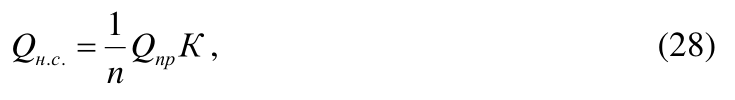
где n - коэффициент использования суточного времени, принимается равным 0,80-0,96; пр Q - расчетный приток воды к насосной станции, м³ /с;
К - коэффициент, учитывающий влияние регулирующего бассейна.
7.7.15.4 Расчетный напор для подбора насосов определяется как сумма геодезической высоты водоподъема и потерь напора в сооружениях насосной станции от водозабора до водовыпуска.
7.7.15.5 Тип и количество насосных агрегатов следует выбирать из условия соблюдения расчетного режима уровней в канале, допустимых скоростей сработки уровней в проводящей сети для сохранения устойчивости откосов каналов.
7.7.15.6 Если для откачки воды применяются погружные или капсуальные электронасосы, то машинный зал может отсутствовать. При этом электротехническое оборудование управления откачкой проектируется в отдельном помещении, шкафу или блоке-боксе.
7.7.16.1 Плановое расположение магистрального канала и его параметры следует принимать с учетом формы и площади польдерной системы, уклона поверхности и зоны влияния насосной станции.
7.7.16.2 При уклонах местности внутри польдера ≥ 0,0003 длина магистрального канала не ограничивается, а продольный уклон принимается близким к уклону местности. На безуклонных территориях длину магистрального канала рекомендуется принимать не более 3,5 км или определять гидравлическим расчетом с учетом кривой спада.
7.7.16.3 В целях предупреждения зарастания канала, его глубина может назначаться на 1,5-2,0 м больше минимального эксплуатационного уровня. В таких случаях дно канала предусматривается без уклона.
7.7.16.4 При проектировании магистрального канала польдерной системы необходимо проводить следующие дополнительные расчеты:
- расчет пропускной способности на периоды весеннего половодья и летне-осеннего паводка,
- расчет устойчивости грунта канала на размыв,
- расчет местной устойчивости откосов в устье магистрального канала,
- расчет минимального цикла работы насосных агрегатов.
7.7.16.5 Установление параметров магистрального канала следует осуществлять последовательным приближением. Вначале параметры канала (уклон дна, глубина, ширина по дну, заложение откосов, длина и плановое положение) устанавливаются исходя из общих требований (см. 7.2). При этом в первом приближении искусственный регулирующий бассейн не предусматривается, его необходимость и параметры определяются только в том случае, если регулирующей емкости магистрального канала окажется недостаточно, а расширение его по экономическим показателям нецелесообразно. В последующих приближениях проверяется выполнение требований 7.7.16.1-7.7.16.4 и, при необходимости, параметры канала корректируются.
7.7.17.1 Объем бассейна подразделяется на регулирующую емкость и мертвый запас.
7.7.17.2 Полезный объем регулирующей емкости бассейна определяют по формуле
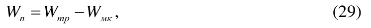
где п W - полезный объем регулирующей емкости, м³ ; тр W - требуемая полезная емкость, м³ ; мк W - регулирующая емкость магистрального и проводящих каналов, м³ .
СП 100.13330.2016
7.7.17.3 Регулирующая емкость магистрального и проводящих каналов определяется как объем, заключенный между свободными поверхностями воды при верхнем и нижнем эксплуатационных горизонтах, определяемых гидравлическим расчетом для бытового периода 50 %-ной обеспеченности при цикличной откачке наименьшим по производительности насосом.
7.7.17.4 Минимальная глубина мертвого запаса должна приниматься не менее 0,5 м. Минимальная глубина определяется как сумма расчетной глубины, определенной из условия пропуска расхода меньшего по производительности насоса при неразмывающих скоростях, и запаса на заиление.
7.7.17.5 Заложение откосов водосборного бассейна следует проверять на устойчивость от воздействия гидродинамического давления фильтрационного потока, возникающего в приоткосной зоне при снижении уровней воды в бассейне.
7.7.17.6 Дно регулирующего бассейна следует проектировать без уклона или с минимальным уклоном 0,0001-0,0003, а ширину по дну следует принимать, исходя из условий полной очистки отстойника от ила экскаватором, установленным на берегах бассейна.
7.7.18.1 В целях предотвращения переувлажнения придамбовой зоны польдера, в результате фильтрации воды со стороны водоприемника, необходимо предусматривать устройство противофильтрационных мероприятий, придамбовых каналов или сгущенной сети закрытого дренажа (решение следует принимать на основании технико-экономических расчетов).
7.7.18.2 Расчет противофильтрационных мероприятий и придамбовых каналов выполняется в соответствии с требованиями СП 39.13330 и СП 104.13330.
7.7.19.1 Эксплуатационные дороги вдоль оградительной дамбы устраивают с внутренней стороны. В отдельных случаях для круглогодичного обслуживания сооружений, устроенных в теле дамбы, допускается проектировать дороги по гребню оградительной дамбы.
7.7.19.2 Конструкции внутрипольдерных дорог на незатапливаемых польдерных системах аналогичны конструкциям дорог на осушительных системах.
7.7.19.3 На затапливаемых польдерных системах полотно дорог необходимо проектировать на одном уровне с окружающей территорией или выше ее на толщину покрытия. В местах пересечения дорог с сосредоточенным потоком паводковых вод предусматривается твердое покрытие или устройство бетонного бордюра.
7.7.19.4 Удельная протяженность дорог на польдерных системах должна составлять:
- при выращивании многолетних трав - не менее 1 км на 100 га;
- при возделывании пропашных культур не менее 1,5 км на 100 га.
8Сооружения на оросительных и осушительных сетях
Сооружения должны обеспечивать:
СП 100.13330.2016
- регулирование водоподачи и уровней, плановое водораспределение (водовыпуски, вододелители, водомерные сооружения, перегораживающие сооружения);
- сопряжение бьефов (быстротоки, перепады);
- возможность пересечения каналами (лотками) дорог, коллекторов, водотоков, оврагов (трубчатые переезды, дюкеры, акведуки);
- регулирование качества воды (отстойники, песколовки, бассейны-смесители);
- недопущение переполнения каналов и лотков, опорожнение трубопроводов (сбросные сооружения);
- рыбозащиту.
Как правило, следует использовать типовые проекты сооружений. При отсутствии типовых проектов допускается применять имеющиеся экономичные или разрабатывать индивидуальные проекты с максимальным использованием типовых решений отдельных узлов сооружений.
Типы конструкций сетевых сооружений в зависимости от пропускной способности рекомендуется определять по таблице 16.
Таблица 16 - Типы конструкций сетевых сооружений и их повторяемость на 1000 га в зависимости от пропускной способности
| Пропускная спо- собность, м³ /с | Ориентировочная повто- ряемость, штук на 1000 га | Конструкции сооружений |
|---|---|---|
| До 0,5 | 200,0 | Трубчатые диаметром 20-30 см |
| 0,5-5 | 20,0 | Трубчатые диаметром 40-160 см |
| 5-20 | 2,0 | Трубчатые прямоугольные или открытые |
| 20-150 | 0,2 | Открытые |
| Более 150 | Индивидуальные | То же |
- устойчивость и прочность сооружения в целом и отдельных его частей;
- фильтрационная прочность грунтов основания;
- надежность и удобство в эксплуатации, возможность осмотра и ремонта сооружения;
- выполнение требований по охране окружающей природной среды;
- высокий уровень индустриализации строительства;
- экономное расходование дефицитных строительных материалов;
- широкое применение местных строительных материалов.
Таблица 17 - Превышение верха стен и откосов в зависимости от расхода воды
| Расчетный расход воды, м³ /с | Превышение верха стен и откосов, см |
|---|---|
| До 1 | 20 |
| 1-10 | 30 |
| 10-30 | 40 |
| 30-50 | 50 |
| 50-100 | 60 |
Примечание - В быстротоках трапецеидального сечения с заложением откосов более 1:1,5 приведенные данные надлежит увеличивать на 15 %.
СП 100.13330.2016
9Насосные станции
9.1Общие требования
- I категория - в аварийных ситуациях допускается кратковременный, до 5 ч, перерыв в подаче или снижение ее до 50 % расчетной на срок до 3 сут;
- II категория - в аварийных ситуациях допускается перерыв в подаче до одних суток или снижение ее до 50 % расчетной на срок до 5 сут;
- III категория - в аварийных ситуациях допускается перерыв в подаче до 5 сут.
9.2Расчетные уровни воды
За максимальный расчетный уровень воды следует принимать:
- при заборе воды из каналов - уровень воды с учетом возможного появления положительной волны при включении (отключении) последнего агрегата насосной станции, ветровой волны и нагона;
- при заборе воды из водохранилищ и рек - на основании таблицы 18.
Таблица 18 - Обеспеченность расчетных уровней воды в зависимости от категории надежности насосных станций
| Расчетный уровень | Обеспеченность расчетного максимального и мини- мального уровней воды в зависимости от категории надежности насосных станций,% | Обеспеченность расчетного максимального и мини- мального уровней воды в зависимости от категории надежности насосных станций,% | Обеспеченность расчетного максимального и мини- мального уровней воды в зависимости от категории надежности насосных станций,% |
|---|---|---|---|
| I | II | III | |
| Максимальный | 1 | 3 | 5 |
| Минимальный - из условия обеспечения водозабора | 97 | 95 | 90 |
9.3Подбор насосных агрегатов
Число насосных агрегатов на насосных станциях, как правило, следует принимать по таблице 19.
Таблица 19 - Число насосных агрегатов в зависимости от подачи воды
| Подача воды, м³ /с | Число насосных агрегатов, шт. |
|---|---|
| До 1 | 2-4 |
| 1-5 | 3-5 |
| 5-30 | 4-6 |
| Св. 30 | 5-9 |
Число агрегатов допускается увеличивать при установке в одном здании нескольких групп насосов с разными напорами, а также при отсутствии освоенного оборудования.
Число агрегатов может быть уменьшено, если насосные станции подают воду в открытые водоемы, имеющие регулирующие емкости, достаточные для остановки насосов на срок до одних суток.
СП 100.13330.2016
- I - 1 резервный агрегат при числе рабочих до 6 включительно, 2 резервных агрегата при числе рабочих 7 и более;
- II - 1 резервный агрегат при числе рабочих до 8 включительно, 2 резервных агрегата при числе рабочих 9 и более;
- III - резервный агрегат не предусматривается.
При соответствующем обосновании резервный агрегат разрешается хранить на складе.
Число основных резервных агрегатов может быть увеличено при работе насосных станций в тяжелых условиях: при перекачке агрессивных вод, а также вод, содержащих абразивные взвеси, при большой загрузке насосов (более 5500 ч в году).
На насосных станциях с насосами, имеющими стабильные рабочие характеристики, необходимо предусматривать два вспомогательных насоса с подачей каждого, равной 3-5 % расчетного расхода сети.
9.4Водозаборные сооружения насосных станций
СП 100.13330.2016
СП 100.13330.2016
- забор воды с минимальными гидравлическими потерями, задержание мусора и взвешенных частиц в случае подачи воды в дождевальные машины, рыбозащиту;
- очистку решеток и сеток рыбозащитных или сороудерживающих устройств.
СП 100.13330.2016 сов, при обосновании допускается устройство общего всасывающего трубопровода (коллектора).
9.5Здания насосных станций
СП 100.13330.2016 прочности и устойчивости самого сооружения. Вспомогательное оборудование, подсобные помещения, в том числе монтажные площадки, по возможности следует выносить в наземную часть здания.
9.6Водовыпускные сооружения
- сифонный при максимальном вакууме до 5 м (от минимального горизонта воды до наивысшей точки сифона), если нет ограничения высоты подъема воды при запуске насоса;
- прямоточный башенный или камерный при вакууме более 5 м, оборудованный аварийно-ремонтными затворами, при диаметре трубопровода до
СП 100.13330.2016
1200 мм - клапаном-хлопушкой, при больших диаметрах - быстропадающими затворами;
- сливной (полигональный) при малых колебаниях горизонтов воды в канале.
Запас гребня дамб над максимальным горизонтом воды при устройстве сброса воды может быть уменьшен на 40 %.
Для ремонта затворов следует предусматривать установку ремонтных заграждений.
В случаях, когда на напорных трубопроводах насосов запорные органы
СП 100.13330.2016 имеют независимые приводы, допускается при специальном обосновании совмещать в одном затворе функции ремонтного и аварийного.
9.7Гидравлический расчет водоводов насосных станций
10Оградительные дамбы
СП 100.13330.2016 необходимо проектировать незатопляемые дамбы, защищающие территорию от затопления в течение всего года. В остальных случаях выбор типа дамб (затопляемые или незатопляемые) следует устанавливать на основании технико-экономического сравнения вариантов.
Затопляемые дамбы, защищающие от затопления в период летне-осенних дождей при подъеме воды в водотоке или водоеме, надлежит проектировать с учетом воздействия весеннего паводка на почву, дороги, осушительную сеть.
Для незатопляемых дамб расчетным является максимальный паводок в течение года (весенний или летне-осенний), для затопляемых - летне-осенний паводок.
Отметка гребня дамбы должна быть не менее отметки уровня воды при прохождении расхода воды расчетной обеспеченности, соответствующей поверочному расчетному случаю.
| Грунты | Заложение откосов | Заложение откосов |
|---|---|---|
| верхового | низового | |
| Глинистые | От 1:1,5 до 1:2,5 | От 1:1,5 до 1:2,5 |
| Песчаные | » 1:2 » 1:3 | » 1:1,5 » 1:3 |
| Торфяные | » 1:2,5 » 1:3 | » 1:2 » 1:2,5 |
11Средства управления и автоматизации
- I группа - локальная (местная) автоматизация с ручным управлением;
- II группа - комплексная автоматизация с управлением через диспетчера;
- III группа - комплексная автоматизация с управлением через диспетчера с применением ЭВМ;
- IV группа - полная автоматизация с управлением через растение (по потребности растения в воде).
Выбор группы автоматизации оросительной системы должен быть обоснован.
- при недостаточной водообеспеченности и условии, что транспортирующая сеть водоводов выполнена без резервных емкостей при наличии бассейновнакопителей суточного регулирования, - нормированное;
- при полной водообеспеченности и условии, что транспортирующие каналы выполнены с требуемым для бесперебойного водопотребления резервными емкостями, - ненормированное;
- при ограниченной водообеспеченности с устройством резервных емкостей на транспортирующих каналах (объем необходимо определять на основе технико-экономических расчетов), - смешанное.
12Охрана окружающей природной среды
- размещать мелиоративные системы и сооружения с учетом экологической значимости природных объектов осваиваемого района;
- повторно использовать сбросные и дренажные воды;
- создавать специальные инженерные сооружения или устройства и проводить необходимые мероприятия (водоочистные, противоэрозионные, лесозащитные, рыбозащитные, рыбопропускные, переходы для животных через каналы и проходящие по поверхности трубопроводы) с учетом технологии сельскохозяйственного производства;
- сброс вод с мелиоративных систем должен проводиться в соответствии с требованиями, приведенными в [4] и [5].
- территориальных комплексных схем охраны окружающей природной среды, схем охраны вод малых рек;
- границ имеющихся заповедников, заказников, территорий (акваторий) обитания особо охраняемых видов флоры и фауны, памятников природы и статуса их охраны;
- данных по местам обитания и миграциям ценных, редких, исчезающих, особо охраняемых видов флоры и фауны и статуса их охраны;
- данных по местам обитания, массовой концентрации (мест размножения, нагула, зимовки), миграциям промысловых и хозяйственно ценных видов флоры и фауны.
- зоогеографической, охотохозяйственной, геоботанической, почвенной, лесохозяйственной, гидрогеологической характеристик места расположения мелиоративной системы и прилегающих территорий в пределах зоны понижения, повышения уровня грунтовых вод;
- ихтиологической, рыбохозяйственной, гидрологической, гидробиологической, гидрохимической характеристик акватории (в размере зоны 2000 м выше и 2000 м ниже створа водозаборного, водосбросного сооружения) водоисточника, водоприемника;
- сведений о санитарно-эпидемиологической обстановке;
- данных об особо охраняемых видах флоры и фауны, о памятниках при-
СП 100.13330.2016 роды, заповедниках, находящихся в зоне влияния мелиоративной системы и сооружений.
12.7Рыбозащитные мероприятия и устройства
12.8Защитные лесные насаждения
Площадь для остальных групп лесополос (вдоль дорог, вокруг прудов, у поселков, насосных станций, на не использованных в сельском хозяйстве землях и т. п.) следует назначать исходя из конкретных условий объекта.
- продольном (основные) - поперек преобладающих в данной местности ветров (суховейных, вызывающих пыльные бури, метелистых);
- поперечном (вспомогательные) - перпендикулярно продольным.
При проектировании организации территории орошаемых земель следует предусматривать, чтобы поля севооборотов и отдельные поливные участки длинной стороной располагались поперек направления преобладающих ветров или с отклонением от него не более чем на 30°.
СП 100.13330.2016
- типа почв (черноземные, каштановые, сероземные, полупустынные, пустынные) и степени подверженности их эрозии;
- расчетной высоты древесных пород H и дальности их эффективного влияния 30 H на ветровой режим;
- способов и техники полива. При этом расстояние между продольными лесными полосами не должно превышать 800 м, поперечными - 2000 м, а на песчаных почвах - 1000 м.
Ряд лесных насаждений следует предусматривать на расстоянии от края лотков 2,5-3 м, от трубопроводов - 2 м.
СП 100.13330.2016
Расстояние между закрытыми коллекторами (дренами) и лесополосами следует принимать в соответствии с 7.4.6.4.
12.9Охрана животных
12.10Противоэрозионные сооружения
- водозадерживающие - валы-каналы, валы-террасы, запруды, полузапруды;
- водонаправляющие - нагорные каналы, валы и каналы для рассредоточения концентрированных потоков воды;
- водосбросные (сопрягающие) - быстротоки, перепады.
12.11Охрана вод
АПриложение А (справочное). Потери воды на испарение, инфильтрацию и поверхностный сброс при поливе по бороздам
| Уклон | Степень водопро- | Потери воды,% | Потери воды,% | Потери воды,% |
|---|---|---|---|---|
| ницаемости почвы | испарение | инфильтрация | сброс | |
| 0,05-0,02 | Сильная | 1,5 | 23,0 | 5,9 |
| 0,05-0,02 | Средняя | 2,1 | 11,4 | 10,8 |
| 0,05-0,02 | Слабая | 6,0 | 12,2 | 11,8 |
| 0,02-0,01 | Сильная | 1,6 | 16,8 | 14,7 |
| 0,02-0,01 | Средняя | 2,7 | 6,5 | 19,8 |
| 0,02-0,01 | Слабая | 4,0 | 6,2 | 22,9 |
| 0,01-0,005 | Сильная | 1,1 | 11,5 | 15,0 |
| 0,01-0,005 | Средняя | 2,0 | 4,4 | 21,6 |
| 0,01-0,005 | Слабая | 4,5 | 3,0 | 23,6 |
| 0,005-0,001 | Сильная | 0,7 | 15,8 | 9,4 |
| 0,005-0,001 | Средняя | 1,7 | 11,0 | 10,5 |
| 0,005-0,001 | Слабая | 5,9 | 8,8 | 12,4 |
Примечание - Степень водопроницаемости характеризуется удельным впитыванием воды, л/с на 100 м борозды, определяемым при водно-физических изысканиях на типовых участках:
- сильная - 0,4-0,2;
- средняя - 0,2-0,1;
- слабая - 0,1.
БПриложение Б (рекомендуемое). Нижняя граница (порог) допускаемых пределов иссушения почвы по основным фазам вегетации сельскохозяйственных культур в зависимости от механического состава почв, % от наименьшей влагоемкости
| Сельскохозяй- ственная куль- тура | Почвы | Почвы | Почвы | Почвы |
|---|---|---|---|---|
| Сельскохозяй- ственная куль- тура | супеси | легкие су- глинки | средние су- глинки | тяжелые су- глинки |
| Сахарная свекла | 65, 65, 65, 60 | 70, 70, 70, 65 | 70, 75, 70, 70 | 75, 80, 75, 75 |
| Кукуруза | 65, 65, 65, 60 | 70, 70, 70, 65 | 70, 75, 75, 70 | 75, 80, 80, 75 |
| Озимые | 65, 65, 65, 60 | 70, 70, 70, 65 | 70, 75, 70, 70 | 75, 80, 75, 75 |
| Яровые | 65, 65, 65, 60 | 70, 70, 70, 65 | 70, 75, 70, 70 | 75, 80, 80, 75 |
| Томаты | 65, 65, 65, 60 | 70, 70, 70, 65 | 70, 75, 75, 70 | 75, 80, 80, 75 |
| Картофель | 65, 65, 65, 60 | 70, 70, 70, 65 | 70, 75, 75, 70 | 75, 80, 80, 75 |
| Люцерна | 65, 65, 65, 60 | 70, 70, 65, 65 | 70, 75, 70, 70 | 75, 80, 75, 75 |
Примечание - Пороги иссушения соответствуют основным фазам, приведенным в приложении В.
Глубина расчетного слоя почвы по культурам
ВПриложение В. (рекомендуемое) и фенологическим фазам
Таблица В.1 - Глубина расчетного слоя почвы по культурам и фенологическим фазам
| Сельско- хозяй- ственная культура | Основные фенологические фазы (над чертой), глубина расчетного слоя H (под чертой), см | Основные фенологические фазы (над чертой), глубина расчетного слоя H (под чертой), см | Основные фенологические фазы (над чертой), глубина расчетного слоя H (под чертой), см | Основные фенологические фазы (над чертой), глубина расчетного слоя H (под чертой), см | Основные фенологические фазы (над чертой), глубина расчетного слоя H (под чертой), см |
|---|---|---|---|---|---|
| Сахарная свекла | Посев- всходы 50 | 2-4 настоя- щих листа 60 | Период усилен- ного роста ли- стьев 80 | Период нараста- ния корневого тела 80 | Период нараста- ния корневого тела 80 |
| Кукуруза | Посев- всходы 50 | 5-7 настоя- щих листьев 70 | Выметывание метелки 80 | Молочная спелость 80 | Молочная спелость 80 |
| Озимая пшеница | Возобновле- ние вегета- ции 60 | Трубкование колошение 80 | Цветение- налив 80 | Молочная спе- лость 80 | Молочная спе- лость 80 |
| Яровая пшеница | Посев- всходы 50 | Кущение 60 | Трубкование- колошение 80 | Цвете- ние- налив 80 | Молоч- ная спе- лость 80 |
| Томаты | Высадка в грунт 40 | Образова- ние соцве- тий 50 | Цветение 70 | Съемная спе- лость 80 | Съемная спе- лость 80 |
| Картофель | Посадка 40 | Бутониза- ция-цвете- ние 50 | Клубнеобразо- вание 70 | Прекращение роста ботвы 70 | Прекращение роста ботвы 70 |
Окончание таблицы В.1
| Люцерна второго- третьего года | Возобновле- ние вегетации 80 | Стеблева- ние-буто- низация 100 | Цветение 100 | - |
|---|---|---|---|---|
| Яблоня | Набухание цветочных по- чек 80 | Цветение 100 | Созревание 100 | - |
| Виноград | Распускание 80 | Цветение почек 100 | Созревание 100 | - |
ГПриложение Г. (рекомендуемое)
Условия применения продольной и поперечной схем полива
Таблица Г.1 - Условия применения продольной и поперечной схем полива
| Уклон поливных | Степень водопроницаемости почвы | Степень водопроницаемости почвы | Степень водопроницаемости почвы |
|---|---|---|---|
| борозд | сильная | средняя | слабая |
| 0,0500-0,0250 | - + | - + | - + |
| 0,0250-0,0075 | - + | - + | - + |
| 0,0075-0,0025 | - + | - + | - + |
| 0,0025-0,0010 | - + | - + | - + |
| Менее 0,001 | - + | - + | - + |
ДПриложение Д. (рекомендуемое)
Элементы техники полива при переменном расходе воды в борозду
| Степень водопро- ницаемости почвы | Показатель | Уклон поливных борозд i | Уклон поливных борозд i | Уклон поливных борозд i | Уклон поливных борозд i | Уклон поливных борозд i | Уклон поливных борозд i |
|---|---|---|---|---|---|---|---|
| 0,05- 0,03 | 0,02 | 0,01 | 0,005 | 0,003- 0,002 | менее 0,001 | ||
| Сильная | l | 50 | 80 | 110 | 200 | 250 | 200 |
| Сильная | 1 q | 0,3 | 0,48 | 0,63 | 1,20 | 2,00 | 1,6 |
| Сильная | 2 q | 0,2 | 0,32 | 0,42 | 0,80 | 1,00 | 0,8 |
| Средняя | l | 90 | 140 | 190 | 320 | 350 | 300 |
| Средняя | 1 q | 0,14 | 0,21 | 0,30 | 0,48 | 0,70 | 0,60 |
| Средняя | 2 q | 0,09 | 0,14 | 0,19 | 0,32 | 0,35 | 0,30 |
| Слабая | l | 150 | 200 | 250 | 400 | 450 | 400 |
| Слабая | 1 q | 0,07 | 0,09 | 0,12 | 0,18 | 0,28 | 0,24 |
| Слабая | 2 q | 0,05 | 0,06 | 0,08 | 0,12 | 0,14 | 0,12 |
Обозначения, принятые в таблице:
1 q - добегающая струя, л/с;
2 q - доувлажняющая струя, л/с;
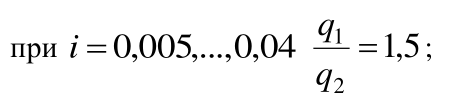
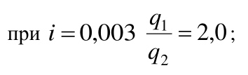
l - длина борозд, м.
Примечание - Степень водопроницаемости почв определяется согласно приложению А.
ЕПриложение Е (рекомендуемое). Элементы техники полива при постоянном расходе воды в борозду
Таблица Е.1 - Элементы техники полива при постоянном расходе воды в борозду
| Степень водо- проницаемости почвы (устано- вившееся удель- ное впитывание), л/с на 100 м | Пока- | Уклон поливных борозд i | Уклон поливных борозд i | Уклон поливных борозд i | Уклон поливных борозд i | Уклон поливных борозд i | Уклон поливных борозд i |
|---|---|---|---|---|---|---|---|
| затель | 0,05- 0,03 | 0,02 | 0,01 | 0,005 | 0,003- 0,002 | менее 0,001 | |
| Сильная | l | 50 | 80 | 110 | 180 | 200 | 150 |
| q | 0,22 | 0,35 | 0,50 | 0,80 | 0,90 | 0,70 | |
| Средняя | l | 110 | 135 | 160 | 260 | 300 | 250 |
| q | 0,13 | 0,15 | 0,18 | 0,30 | 0,35 | 0,30 | |
| Слабая | l | 150 | 180 | 210 | 350 | 400 | 350 |
| q | 0,05 | 0,06 | 0,08 | 0,12 | 0,15 | 0,12 |
Примечание - Степень водопроницаемости почв определяется согласно примечанию приложения А.
ЖПриложение Ж. (рекомендуемое)
Элементы техники полива по узким коротким полосам
Таблица Ж.1 - Элементы техники полива по узким коротким полосам
| Почвы | Уклон поливного участка | Длина полос, м | Удельный расход поливной струи, л/с на 1 м ши- рины полосы |
|---|---|---|---|
| Супеси и легкие суглинки | 0,002-0,005 | 60 | 3-4 |
| Супеси и легкие суглинки | 0,005-0,007 | 70 | 2,5-3,5 |
| Супеси и легкие суглинки | 0,007-0,015 | 80 | 2,5-3,5 |
| Средние суглинки | 0,002-0,005 | 70 | 2,5-3,5 |
| Средние суглинки | 0,005-0,007 | 90 | 2,0-3,0 |
| Средние суглинки | 0,007-0,015 | 120 | 1,8-2,8 |
| Тяжелые су- глинки | 0,002-0,005 | 80 | 2,0-2,5 |
| 0,005-0,007 | 100 | 2,0-2,5 | |
| 0,007-0,015 | 150 | 1,5-2,0 | |
| Глины | 0,002-0,005 | 90 | 2,0-2,5 |
| Глины | 0,005-0,007 | 120 | 2,0-2,5 |
| Глины | 0,007-0,015 | 200 | 1,5-2,0 |
ИПриложение И (рекомендуемое). Элементы техники полива по узким длинным полосам
Таблица И.1 - Элементы техники полива по узким длинным полосам
| Степень водопро- ницаемости почвы (средняя) за 1-й час впитывания, см/ч | Уклон поливного участка | Длина полосы, м | Удельный расход поливной струи, л/с на 1 м ши- рины полосы |
|---|---|---|---|
| Сильная (более 18) | 0,002-0,004 | 150-200 | 12-10 |
| Сильная (более 18) | 0,004-0,007 | 200-250 | 10-8 |
| Сильная (более 18) | 0,007-0,010 | 250-300 | 8-6 |
| Средняя (9-18) | 0,002-0,004 | 200-250 | 10-8 |
| Средняя (9-18) | 0,004-0,007 | 250-300 | 8-6 |
| Средняя (9-18) | 0,007-0,010 | 300-350 | 6-5 |
| Слабая (менее 9) | 0,002-0,004 | 250-300 | 8-6 |
| Слабая (менее 9) | 0,004-0,007 | 300-350 | 6-5 |
| Слабая (менее 9) | 0,007-0,010 | 350-400 | 5-4 |
КПриложение К. (рекомендуемое)
Расчет режима орошения системы внутрипочвенного орошения
К.1 Основные элементы режима орошения - поливная норма и продолжительность поливного периода.
К.2 Единичная поливная норма - это количество воды, необходимое для создания в почвогрунте контура увлажнения расчетных параметров в пределах единицы длины увлажнителя, л на 1 м увлажнителя, и определяется по формуле
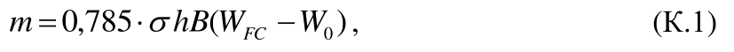
где 0,785 - числовое значение, отражающее эллипсоидную форму контура увлажнения почвогрунта; σ - коэффициент, учитывающий неравномерность распределения влаги в расчетном слое почвогрунта до и после полива, равен 0,8; h - расчетная глубина промачивания, м;
B - средняя ширина полосы увлажнения почвогрунта, м;
FC W - запасы влаги в 1 м³ почвогрунта при наименьшей влагоемкости, м³ ;
0 W - запасы влаги в 1 м³ почвогрунта при предполивной влажности, м³ , FC W W · -= 0,8) (0,7 0 .
К.3 Поливная норма, м³ /га, определяется по формуле
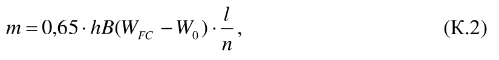
где l - длина увлажнителя, м; n - число увлажнителей на 1 га, зависит от длины увлажнителя и средней ширины полосы увлажнения, т. е. l B n · = 4 10 .
Значения l h B , , приведены в таблице К.1.
Таблица К.1 - Рекомендуемые параметры контуров увлажнения в зависимости от механического состава почв
| Механический состав почв по Н. А. Качинскому | B , м | h , м | l , м |
|---|---|---|---|
| Суглинки: | |||
| легкие | 0,8/0,8 | 1,5/1,5 | 1,0/0,8 |
| средние | 1,0/0,9 | 1,4/1,4 | 1,2/0,9 |
| тяжелые | 1,1/1,0 | 1,3/1,3 | 1,3/1,1 |
| Глины | 1,3/1,1 | 1,2/1,3 | 1,5/1,2 |
Примечания
1 Числитель - для трубчатых увлажнителей, знаменатель - для кротовых.
- 2 При использовании ленточного экрана под увлажнителями расчетные параметры зоны увлажнения изменяются: ширина контура и расстояние между увлажнителями увеличивается на 15-20 %, глубина контура уменьшается на 20 %.
- 3 Для широкорядных культур необходимо предусматривать по одному-два увлажнителя на один ряд. Сточными водами допускается поливать только полевые культуры.
К.4 Продолжительность полива ч, определяется по формуле
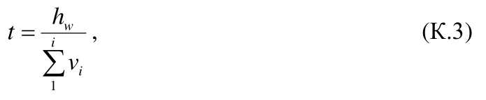
где w h - условный слой воды, необходимый для насыщения элементарной почвенной колонки расчетной глубины, м;
∑ i i v 1 - средняя скорость впитывания воды почвогрунтом (за период от 1 до
12 ч), м/ч; определяют по кривой впитывания, построенной по данным воднофизических исследований почвогрунта при напорах воды до 1 м.
Условный слой воды, мм, определяется по формуле
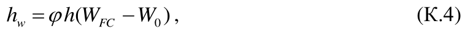
где ϕ - коэффициент, зависящий от механического состава почвогрунта (при конструкции увлажнителя без подстилающего экрана ϕ = 1,1-1,15, при наличии экрана значение коэффициента увеличивают на 10 %).
К.5 Число тактов водоподачи, обеспечивающее проведение одного полива, расчетной нормой, определяется по формуле
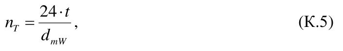
где t - продолжительность полива, ч; mW d - среднесуточный дефицит водопотребления, мм/сут.
К.6 Площадь, поливаемая за один такт, определяется по формуле
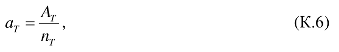
где T A - площадь поливного участка, требующая полива за один прием, га.
Приложение Л (рекомендуемое)
Схемы систем лиманного орошения
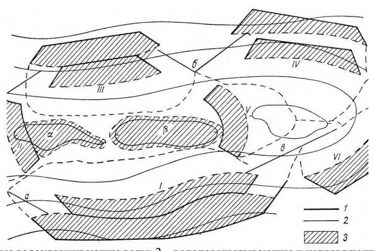
1 - земляные водоудерживающие валы; 2 - водоперехватывающие и направляющие валики; 3 - площади лиманного орошения; прерывистые линии - границы затопления; I-VI - секции лиманов; α, β - замкнутые естественные понижения; а, б, в- перехватывающие и водонаправляющие валики
Рисунок Л.1 - Система лиманов на водораздельном плато
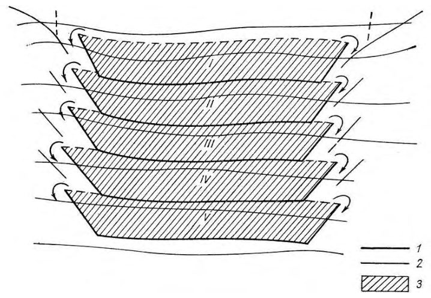
1 - земляные водоудерживающие валы; 2 - водоперехватывающие и направляющие валики;
3 - площадь лиманного орошения; I-V - секции лиманов
Рисунок Л.2 - Система мелкоярусных лиманов, устроенная на пологом склоне
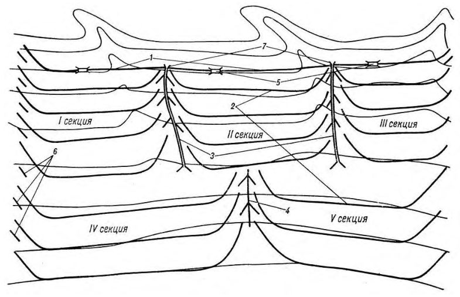
1 - вал распределительного яруса; 2 - водоудерживающие валы ярусов; 3 - распределительные каналы; 4 - направляющие валики; 5 - водосливы автоматы; 6 - водообходы; 7 - водозаборные водосливы; I-V - секции лиманов
Рисунок Л.3 - Система мелкоярусных лиманов, устраиваемая у подножья больших склонов
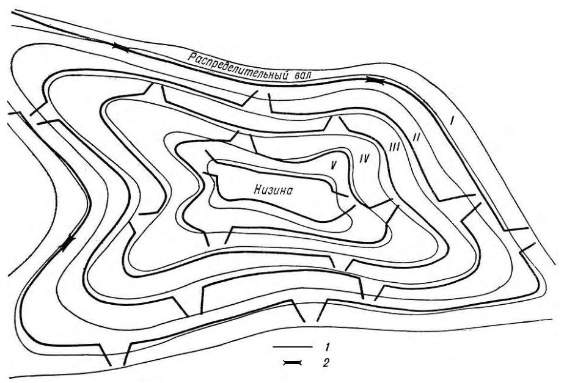
Рисунок Л.4 - Система ярусных лиманов мелкого слоя затопления, устраиваемая в замкнутом понижении
1 - водоудерживающие валы; 2 - водообходы; 3 - сооружения, предназначенные для опорожнения ярусов глубокого затопления; 4 - границы затопления
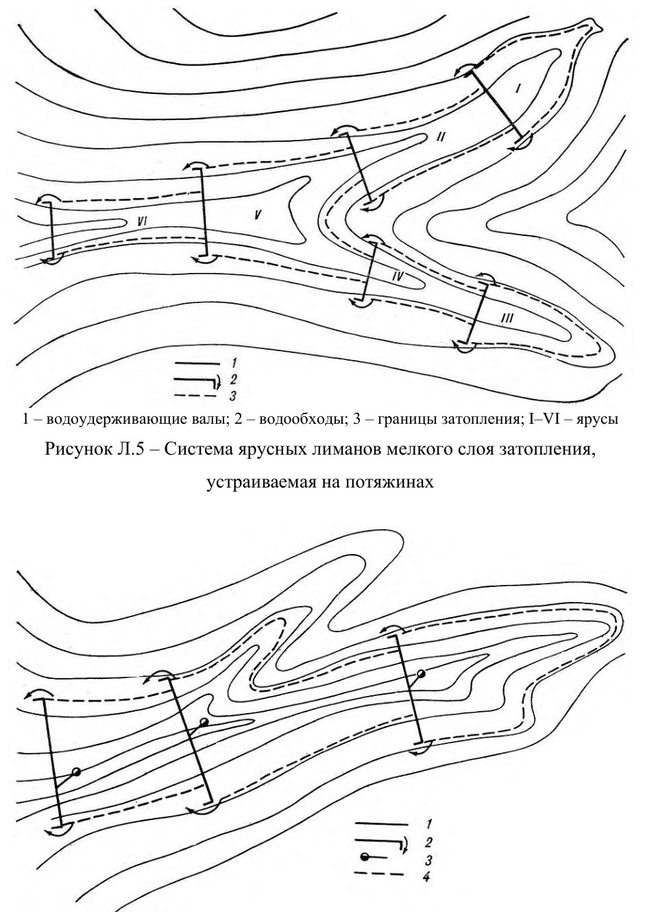
Рисунок Л.6 - Система ярусных лиманов глубокого слоя затопления, устраиваемая на потяжинах
1 - земляная плотина; 2 - сбросной тракт; 3 - сопрягающие сооружения; 4 - канал лиманного орошения; 5 - система мелкоярусных лиманов; 6 - насосная станция; 7 - системы регулярного орошения; 8 - граница затопления
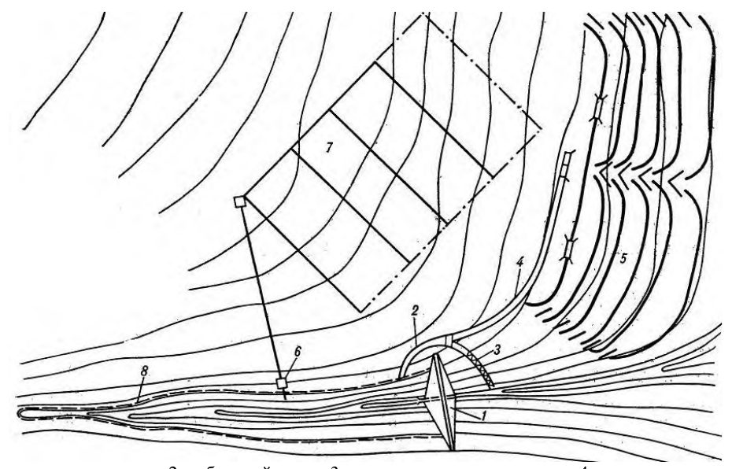
Рисунок Л.7 - Система ярусных лиманов мелкого слоя затопления, питаемая сбросными водами из водохранилища
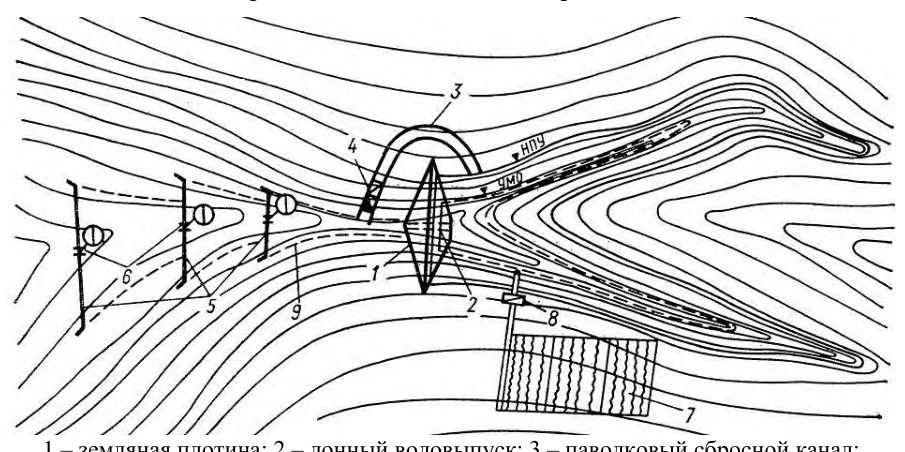
1 - земляная плотина; 2 - донный водовыпуск; 3 - паводковый сбросной канал;
4 - сопрягающее сооружение; 5 - земляные валы лиманов; 6 - лиманные водовыпуски; 7 - участок регулярного орошения; 8 - оросительная насосная станция; 9 - граница затопления; НПУ - нормальный подпорный уровень; УМО - уровень мертвого объема Рисунок Л.8 - Система ярусных глубоководных лиманов, питаемая сбросными
1 - земляная водоподъемная плотина; 2 - земляные валы лиманного орошения; 3 - водовыпуски для опорожнения лиманов; 4 - струенаправляющие валики; 5 - водообходы; 6 - участок регулярного орошения; 7 - насосная станция Рисунок Л.9 - Система ярусных лиманов глубокого слоя затопления, использующая сток степной реки
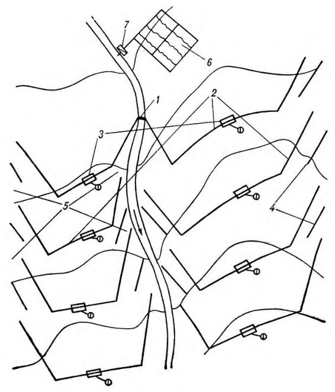
1 - разборная водоподъемная плотина; 2 - валы лиманного орошения; 3 - пропускные шлюзы-регуляторы
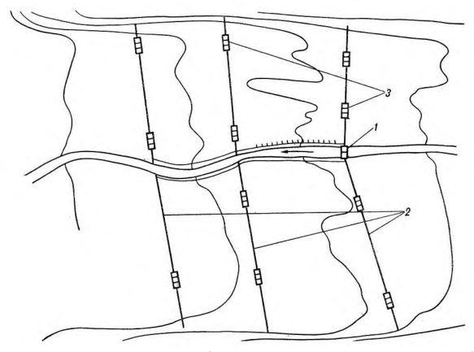
Рисунок Л.10 - Система пойменных лиманов глубокого слоя затопления
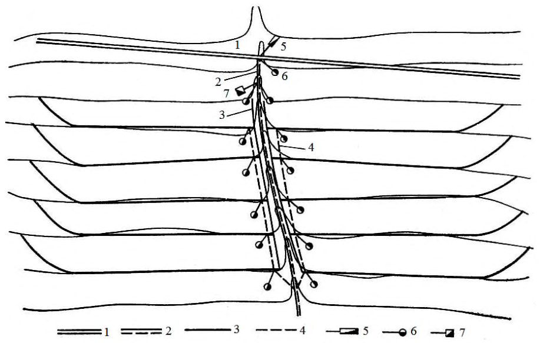
1 - магистральный канал оросительно-обводнительной системы; 2 - сбросной тракт; 3 - земляной вал; 4 - распределительный канал; 5 - ливнепровод; 6 - водовыпускное сооружение; 7 - подпорное сооружение
Рисунок Л.11 - Система ярусных лиманов комбинированного питания
МПриложение М. (рекомендуемое)
Коэффициенты шероховатости каналов и естественных водотоков
Таблица М.1 - Коэффициенты шероховатости оросительных каналов в земляном русле
| Расход воды в канале, м³ /с | Коэффициенты шероховатости n оросительных ка- налов в земляном русле | Коэффициенты шероховатости n оросительных ка- налов в земляном русле |
|---|---|---|
| в связных и песчаных грунтах | в гравелисто-галечнико- вых грунтах | |
| Более 25 | 0,0200 | 0,0225 |
| 1-25 | 0,0225 | 0,0250 |
| Менее 1 | 0,0250 | - |
| Каналы постоянной сети периодического дей- ствия | 0,0275 | - |
| Оросители | 0,030 | - |
Примечания
1 Для каналов водосборно-сбросной сети значение коэффициента шероховатости повышается на 10% по сравнению со значением того же коэффициента для оросительных каналов и округляется до ближайшего принятого в таблице значения.
2 Для каналов, выполняемых взрывным способом, значение коэффициента шероховатости повышается на 10 % - 20 % в зависимости от размеров принимаемой доработки сечений канала.
СП 100.13330.2016
Таблица М.2 - Коэффициенты шероховатости оросительных каналов в скале
| Характеристика поверхности ложа ка- нала | Коэффициенты шероховатости n ка- налов в скале |
|---|---|
| Хорошо обработанная поверхность | 0,02-0,025 |
| Посредственно обработанная поверх- ность без выступов | 0,03-0,035 |
| То же, с выступами | 0,04-0,045 |
Таблица М.3 - Коэффициенты шероховатости оросительных каналов с облицовкой
| Облицовка | Коэффициенты шероховатости n каналов с облицовкой |
|---|---|
| Бетонная хорошо отделанная | 0,012-0,014 |
| Бетонная грубая | 0,015-0,017 |
| Сборные железобетонные лотки | 0,012-0,015 |
| Покрытия из асфальтобитумных материалов | 0,013-0,016 |
| Одернованное русло | 0,03-0,035 |
Таблица М.4 - Коэффициенты шероховатости естественных водотоков
| Характеристика русла | Коэффициенты шероховатости n естественных водотоков |
|---|---|
| Естественное русло в благоприятных условиях (чистое, прямое, незасоренное, земляное, со свободным течением) | 0,025-0,033 |
| То же, с камнями | 0,03-0,04 |
| Периодические потоки (большие и малые) при хорошем со- стоянии поверхности и формы ложа | 0,033 |
Продолжение таблицы М.4
| Земляные русла сухих логов в относительно благоприятных условиях | 0,04 |
|---|---|
| Русла периодических водотоков, несущих во время паводка заметное количество наносов с крупногалечниковым или покрытым растительностью ложем, периодические водо- токи, сильно засоренные и извилистые | 0,05 |
| Чистое извилистое ложе с небольшим числом промоин и от- мелей | 0,033-0,045 |
| То же, но слегка заросшее и с камнями | 0,035-0,05 |
| Заросшие участки рек с очень медленным течением и глу- бокими промоинами | 0,05-0,08 |
| Заросшие участки рек болотного типа (заросли, кочки, во многих местах почти стоячая вода и пр.) | 0,075-0,15 |
| Поймы больших и средних рек, сравнительно разработан- ные, покрытые растительностью (трава, кустарники) | 0,05 |
| Значительно заросшие поймы со слабым течением и боль- шими глубокими промоинами | 0,08 |
| То же, с неправильным косоструйным течением и боль- шими заводями и др. | 0,1 |
| Поймы лесистые со значительными мертвыми простран- ствами, местными углублениями, озерами и др. | 0,133 |
| Глухие поймы, сплошные заросли (лесные, таежного типа) | 0,2 |
НПриложение Н. (рекомендуемое)
Формы поперечного сечения оросительных каналов
Н.1Сечение канала трапецеидальной формы
Для трапецеидальных сечений основные параметры каналов назначают в зависимости от отношения ширины канала по дну к глубине его наполнения ( β - относительная ширина по дну), расхода воды Q и заложения откоса m по эмпирической формуле
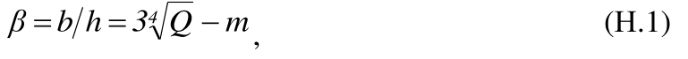
где b - ширина канала по дну, м; h - глубина воды в канале, м;
Q - расход воды в канале, м³ /с; m - коэффициент заложения откоса ( θ = ctg m , θ - угол наклона откоса к горизонтали), или по значениям, приведенным в таблице Н.1.
Таблица Н.1 - Значения отношения ширины канала по дну к глубине его наполнения
| m | 1,0 | 1,5 | 2,0 | 2,5 |
|---|---|---|---|---|
| β | 0,8-3 | 0,6-3,1 | 0,5-3,4 | 0,4-3,8 |
При 2 5 , m > величину β назначают по расчету или по данным аналогов.
Расчетные формулы для определения значений элементов живого сечения представлены в таблице Н.2.
Таблица Н.2 - Определение значений элементов живого сечения канала трапецеидальной формы
| Элемент живого сечения | Расчетная формула | Номер фор- мулы |
|---|---|---|
| Ширина по верху | 2m) h(β 2mh b B + = + = | (Н.2) |
Окончание таблицы Н.2
| Ширина средняя | m) h(β mh b b m + = + = | (Н.3) |
|---|---|---|
| Ширина средняя | σ)R/σ m(1 b m + = | (Н.4) |
| Глубина средняя | 2m) m)h/(β (β ω/B h m + + = = | (Н.5) |
| Площадь сечения | 2 m)h (β mh)h (b ω + = + = | (Н.6) |
| Площадь сечения | /σ mh /σ R σ) m(1 ω 2 2 2 = + = | (Н.7) |
| Смоченный периметр | ) 2m 1 2 h(β m 1 2h b χ 2 2 + + = = + + = | (Н.8) |
| Гидравлический радиус | ) σ h(1 ) m 1 2 m)h/(β (β ) m 1 2h mh)h/(b (b R 2 2 - = + + + = = + + + = | (Н.9) |
Примечание b - ширина канала по дну, м; h - глубина воды в канале, м; β - относительная ширина по дну ( β = b/h ); b mh σ = - безразмерная характеристика живого сечения; m - коэффициент заложения откоса ( m =ctg θ, θ - угол наклона откоса).
Схема оросительных каналов трапецеидальной формы представлена на рисунке Н.1.
B - ширина по верху, b - ширина канала по дну, h - глубина воды в канале, m - коэффициент заложения откоса ( m =ctg θ, θ - угол наклона откоса) Рисунок Н.1 - Схема канала трапецеидальной формы
Н.2Сечение канала прямоугольной формы
Прямоугольное сечение русла представляет собой частный случай трапецеидального, где коэффициент заложения откоса 0 = m .
Расчетные формулы для определения значений элементов живого сечения представлены в таблице Н.3.
Таблица Н.3 - Определение значений элементов живого сечения канала прямоугольной формы
| Элемент живого сечения | Расчетная формула | Номер формулы |
|---|---|---|
| Ширина по верху | b B = | (Н.10) |
| Площадь сечения | bh ω = | (Н.11) |
| Смоченный периметр | 2h b χ + = | (Н.12) |
| Гидравлический радиус | 2h b bh R + = | (Н.13) |
Схема оросительных каналов прямоугольной формы представлена на рисунке Н.2.
b - ширина канала по дну, h - глубина воды в канале
Рисунок Н.2 - Схема канала прямоугольной формы
Н.3Сечение канала параболической формы
Для параболического сечения очертание поверхности каналов принято по параболе и определяется по формуле
где h - глубина канала, м; h b - ширина канала на глубине h , м.
Расчетные формулы для определения элементов живого сечения представлены в таблице Н.4.
Таблица Н.4 - Определение элементов живого сечения канала параболической формы
| Элемент живого сечения | Расчетная формула | Номер формулы |
|---|---|---|
| Ширина по верху | )h τ 2/ (2 p 2 2 2ph 2 B = = = τ | (Н.15) |
| Глубина средняя | 2h/3 h m = | (Н.16) |
| Площадь сечения | /3 2ph 4 2Bh/3 ω 3/2 = = /3 τ 2p 4 τ /3 2h 4 ω 3/2 2 2 = = | (Н.17) (Н.18) |
| Смоченный пери- метр | ) pN( ) 2τ 1 2τ ln( 2τ) 2τ(1 p( χ τ = + + + + = | (Н.19) |
| Гидравлический радиус | ) /3N( pτ 2 4 ) 2τh/3N( 4 ) /3pN( 2h 4 R 3/2 3/2 τ τ τ = = = = | (Н.20) |
Примечание h - глубина воды в канале, м; p - параметр параболы; N (τ) - функция параболического сечения. Для параболических русел заложение откоса дается на уровне воды. Глубину лотка назначают из условия превышения бортов над максимальным уровнем не менее чем на 10 см.
Схема оросительных каналов параболической формы представлена на рисунке Н.3.
B - ширина поверху, h - глубина воды в канале
Рисунок Н.3 - Схема канала параболической формы
Н.4Сечение канала круговой (сегментной) формы
Круговое сечение русла описывается радиусом сечения оросительного канала.
Расчетные формулы для определения элементов живого сечения представлены в таблице Н.5.
Таблица Н.5 - Определение элементов живого сечения канала круговой формы
| Элемент живого сечения | Расчетная формула | Номер формулы |
|---|---|---|
| Ширина по верху | 2 2rsin h 2rh 2 B 2 ϕ = - = | (Н.21) |
| Глубина | 4 2rsin h 2 ϕ = | (Н.22) |
| Глубина средняя | /2) )/4sin( sin r( h 2hr /4 )r sin ( h 2 2 m ϕ ϕ ϕ ϕ ϕ - = = - - = | (Н.23) |
| Площадь сечения | 2 )r sin 0,5( ω ϕ ϕ - = | (Н.24) |
| Смоченный периметр | r χ · = ϕ | (Н.25) |
| Гидравлический радиус | ϕ ϕ ϕ )/2 sin r( R - = | (Н.26) |
Примечание h - глубина воды в канале, м; r - радиус живого сечения, м; φ - центральный угол сечения.
Схема оросительных каналов кругового сечения представлена на рисунке Н.4.
B - ширина поверху, h - глубина воды в канале, r - радиус живого сечения,
- центральный угол сечения φ
Рисунок Н.4 - Схема канала круговой формы
Н.5Сечение канала полигональной формы
Полигональное сечение представляет собой составное русло канала, профиль которого состоит из основания сечения ( b - ширина канала по дну), имеющего форму трапеции (треугольника), и расположенного над ним ряда участков
(пары симметричных откосов 1 m , 2 m , 3 m ), имеющих трапецеидальную форму. Характеристики верхней части обозначены через 1 m и 1 h , средней части 2 m , 2 h и нижней части 3 m и 3 h . Все параметры сечения канала выражены через глубину 1 h верхней части сечения (без учета запаса превышения бровки и над уровнем воды). Схема оросительных каналов полигональной формы представлена на рисунок Н.5.
b - ширина канала по дну, B - ширина по верху, B 1 - ширина канала у подножья верхних откосов, м; B 2 - ширина канала у подножья средних откосов; h 1 - глубина верхней части канала без учета запаса превышения бровки над уровнем воды, м; h 2 - глубина средней части канала, м; h 3 - глубина донной части канала, м; m 1 - заложение верхних откосов; m 2 - заложение средних откосов; m 3 - заложение донных откосов.
Рисунок Н.5 - Схема канала полигональной формы
Расчетные формулы для определения элементов живого сечения представлены в таблице Н.6.
Таблица Н.6 - Определение элементов живого сечения канала полигональной формы
| Элемент живого сечения | Расчетная формула | Номер формулы |
|---|---|---|
| Ширина по верху | ) h m h m h 2(m b B 3 3 2 2 1 1 + + + = | (Н.27) |
| Ширина относительная | 3 3 2 2 1 1 d 2m d 2m h B β + = = | (Н.28) |
| Относительная глубина сред- ней части | 2 2 2 1 1 2 2 m 1 m 1 h h d + + = = | (Н.29) |
| Относительная глубина дон- ной части | 2 3 2 1 1 3 3 m 1 m 1 h h d + + = = | (Н.30) |
| Глубина средней части | 1 2 2 h d h = | (Н.31) |
| Глубина донной части | 1 3 3 h d h = | (Н.32) |
| Площадь сечения | ) d m m d m d d 2m d 2m d (2m h h m h m h B h m h B ω ω ω ω 2 3 3 1 2 2 2 2 3 3 2 2 3 3 2 1 2 3 3 2 2 2 2 2 2 1 1 1 1 3 2 1 + + + + + = = + + + + = + + = | (Н.33) |
| Площадь сечения | ) d m d m d d 2m m (β h ω 2 3 3 2 2 2 2 3 3 1 2 1 + + + + = | (Н.34) |
| Смоченый периметр | ) m 1 ( 6h m 1 d m 1 d m 1 ( 2h χ 2 1 1 2 3 3 2 2 2 2 1 1 + = = + + + + + = | (Н.35) |
| Гидравличе- ский радиус | χ ω R = | (Н.36) |
Окончание таблицы Н.6
Примечание b - ширина канала по дну, м; h - глубина воды в канале, м; β - относительная ширина по дну ( β=b/h1 ); m - коэффициент заложения откоса ( m=ctg θ , θ - угол наклона откоса); B1 - ширина канала у подножья верхних откосов, м; h1 - глубина верхней части канала без учета запаса превышения бровки над уровнем воды, м; h2 - глубина средней части канала, м; h3 - глубина донной части канала, м; m1 - заложение верхних откосов; m2 - заложение средних откосов; m3 - заложение донных откосов.
ППриложение П. (рекомендуемое)
Коэффициенты заложения откосов каналов и дамб
Таблица П.1 - Коэффициенты заложения откосов каналов в зависимости от грунта, слагающего русло
| Грунт | Коэффициент заложения откосов | Коэффициент заложения откосов |
|---|---|---|
| подводных | надводных | |
| Скальный | 0,00-0,50 | 0,00-0,25 |
| Полускальный | 0,50-1,00 | 0,50 |
| Галечник и гравий с песком | 1,25-1,50 | 1,00 |
| Глина, суглинок тяжелый и средний, торф мощно- стью пласта до 0,7 м, подстилаемый этими грунтами | 1,00-1,50 | 0,50-1,00 |
| Суглинок легкий, супесь или торф мощностью пла- ста до 0,7 м, подстилаемый этими грунтами | 1,25-2,00 | 1,00-1,50 |
| Песок мелкий или торф мощностью пласта до 0,7 м, подстилаемый этими грунтами | 1,50-2,50 | 1,00-2,00 |
| Песок пылеватый | 3,00-3,50 | 2,50 |
| Торф со степенью разложения до 50% | 1,25-1,75 | 1,25 |
| Торф со степенью разложения более 50% | 1,50-2,00 | 1,50 |
Примечания
1 Первое значение заложения для каналов с расходом воды менее 0,5 м³ /с, второе - с расходом воды более 10 м³ /с.
- 2 Значения заложения внутренних и наружных откосов каналов могут быть увеличены по сравнению с указанными в таблице, если это необходимо по условиям применения прогрессивных методов производства строительных работ.
Таблица П.2 - Коэффициенты заложения m наружных откосов дамб каналов, устраиваемых в насыпи или полунасыпи в зависимости от грунта
| Грунт | Коэффициенты заложения m |
|---|---|
| Глина, суглинок тяжелый и средний | 0,75 - 1,0 |
| Суглинок легкий | 1,0-1,25 |
| Супесь | 1,0-1,5 |
| Песок | 1,25-2,0 |
- 1 Первое значение заложения для каналов с расходом воды менее 0,5 м³ /с, второе - с расходом воды более 10 м³ /с.
- 2 Значения заложения внутренних и наружных откосов каналов могут быть увеличены по сравнению с указанными в таблице, если это необходимо по условиям применения прогрессивных методов производства строительных работ.
РПриложение Р. (рекомендуемое)
Гидравлический расчет каналов
Р.1 При равномерном движении воды в каналах расход Q , м³ /с, следует определять по формуле
где S - площадь живого сечения, м² ; v - скорость течения воды, м/с;
C - коэффициент Шези, м 0,5 /с;
R - гидравлический радиус, м; i - гидравлический уклон.
Для каналов с гидравлическим радиусом 5 ≤ R м коэффициент Шези следует определять, как правило, по формуле
где n - коэффициент шероховатости, определяемый по таблицам М.1 -М.4 приложения М.
Допускается определять коэффициент Шези по формуле
Для практических расчетов значение коэффициента Шези в формуле (Р.2) допускается принимать по гидравлическим справочникам.
Для приближенных расчетов допускается использование формулы
Для каналов с гидравлическим радиусом 5 > R м коэффициент Шези следует определять по каналам, работающим в аналогичных условиях.
Р.2 При неравномерном движении воды в каналах необходимо определять соотношение бытовой 0 h и критической cr d глубин, при которых возможны кривые подпора или спада.
Критическую глубину cr d , м, следует определять подбором по уравнению
где cr S - площадь живого сечения, соответствующая критической глубине, м² ; cr B - ширина канала по урезу воды при критической глубине, м; α - коэффициент, вводимый для учета кинетической энергии и равный 1,1; Q - расход воды в канале, м³ /с; g - ускорение свободного падения, м/с 2 .
Критическую глубину cr d , м, для каналов трапецеидальной формы следует определять по формуле
где crf d - критическая глубина в условном прямоугольном сечении, ширина по дну которого равна ширине по дну рассчитываемого канала трапецеидального сечения, м; b - ширина трапецеидального канала по дну, м; m - коэффициент заложения откоса.
Критическую глубину в условном прямоугольном русле следует определять по формуле где
СП 100.13330.2016
где Q - расход, равный расходу рассчитываемого канала трапецеидальной формы, м³ /с;
11 , α = .
Критический уклон cr i следует определять по формуле
где cr C - коэффициент Шези для канала с критической глубиной cr d ; cr χ - смоченный периметр канала при критической глубине, м;
Исходя из полученных значений cr d и cr i назначаются значения глубины наполнения и уклона дна канала.
Околокритический режим работы канала не допускается.
Р.3 Параметры каналов с нестационарным движением воды при автоматизированном водораспределении следует устанавливать с учетом динамических характеристик автоматических регуляторов и потребителей.
Параметры нестационарного движения воды необходимо определять по специальным номограммам и графикам с окончательной проверкой методами численного интегрирования системы дифференциальных уравнений или приближенными инженерными методами, базирующимися на применении электронной вычислительной машины.
СПриложение С (обязательное). Допускаемые неразмывающие скорости
Таблица С.1 - Допускаемые неразмывающие средние скорости потока для однородных несвязных грунтов в зависимости от средних размеров частиц грунта
| Средний раз- мер частиц грунта, мм | Допускаемые неразмывающие средние скорости потока для однородных несвязных грунтов при содержании в них глини- стых частиц менее 0,1 кг/м³ , м/с, при глубине потока, м | Допускаемые неразмывающие средние скорости потока для однородных несвязных грунтов при содержании в них глини- стых частиц менее 0,1 кг/м³ , м/с, при глубине потока, м | Допускаемые неразмывающие средние скорости потока для однородных несвязных грунтов при содержании в них глини- стых частиц менее 0,1 кг/м³ , м/с, при глубине потока, м | Допускаемые неразмывающие средние скорости потока для однородных несвязных грунтов при содержании в них глини- стых частиц менее 0,1 кг/м³ , м/с, при глубине потока, м |
|---|---|---|---|---|
| 0,5 | 1 | 3 | 5 | |
| 0,05 | 0,52 | 0,55 | 0,60 | 0,62 |
| 0,15 | 0,36 | 0,38 | 0,42 | 0,44 |
| 0,25 | 0,37 | 0,39 | 0,41 | 0,45 |
| 0,37 | 0,38 | 0,41 | 0,46 | 0,48 |
| 0,50 | 0,41 | 0,44 | 0,50 | 0,52 |
| 0,75 | 0,47 | 0,51 | 0,57 | 0,59 |
| 1,00 | 0,51 | 0,55 | 0,62 | 0,65 |
| 2,00 | 0,64 | 0,70 | 0,79 | 0,83 |
| 2,50 | 0,69 | 0,75 | 0,86 | 0,90 |
| 3,00 | 0,73 | 0,80 | 0,91 | 0,96 |
| 5,00 | 0,87 | 0,96 | 1,10 | 1,17 |
| 10,00 | 1,10 | 1,23 | 1,42 | 1,51 |
| 15,00 | 1,26 | 1,42 | 1,65 | 1,76 |
| 20,00 | 1,37 | 1,55 | 1,84 | 1,96 |
| 25,00 | 1,46 | 1,65 | 1,93 | 2,12 |
| 30,00 | 1,56 | 1,76 | 2,10 | 2,26 |
СП 100.13330.2016 Окончание таблицы С.1
| 40,00 | 1,68 | 1,93 | 2,32 | 2,50 |
|---|---|---|---|---|
| 75,00 | 2,01 | 2,35 | 2,89 | 3,14 |
| 100,00 | 2,15 | 2,54 | 3,14 | 3,46 |
| 150,00 | 2,35 | 2,84 | 3,62 | 3,96 |
| 200,00 | 2,47 | 3,03 | 3,92 | 4,31 |
| 300,00 | 2,90 | 3,32 | 4,40 | 4,94 |
Примечание - В таблицах С.1-С.4 величины допускаемых неразмывающих скоростей приведены для грунтов, имеющих плотность 2650 γ = кг/м³ , при коэффициенте условий работы 1 = c K . При другой плотности грунтов и иных значениях коэффициента условий работы допускаемые неразмывающие скорости определяются путем умножения величин, указанных в таблицах С.1-С.4, на коэффициент, равный c K · -1650 1000 γ .
Таблица С.2 - Допускаемые неразмывающие средние скорости потока для неоднородных несвязных грунтов в зависимости от глубины потока и средних размеров частиц грунта
| Средний размер частиц | Допускаемые неразмывающие средние скорости потока для неоднородных несвязных грунтов, м/с, при глу- бине размыва до 5% глубины наполнения канала и при коэффициенте однородности грунта, слагающего ложе канала 0 k | Допускаемые неразмывающие средние скорости потока для неоднородных несвязных грунтов, м/с, при глу- бине размыва до 5% глубины наполнения канала и при коэффициенте однородности грунта, слагающего ложе канала 0 k | Допускаемые неразмывающие средние скорости потока для неоднородных несвязных грунтов, м/с, при глу- бине размыва до 5% глубины наполнения канала и при коэффициенте однородности грунта, слагающего ложе канала 0 k | Допускаемые неразмывающие средние скорости потока для неоднородных несвязных грунтов, м/с, при глу- бине размыва до 5% глубины наполнения канала и при коэффициенте однородности грунта, слагающего ложе канала 0 k | Допускаемые неразмывающие средние скорости потока для неоднородных несвязных грунтов, м/с, при глу- бине размыва до 5% глубины наполнения канала и при коэффициенте однородности грунта, слагающего ложе канала 0 k | Допускаемые неразмывающие средние скорости потока для неоднородных несвязных грунтов, м/с, при глу- бине размыва до 5% глубины наполнения канала и при коэффициенте однородности грунта, слагающего ложе канала 0 k | Допускаемые неразмывающие средние скорости потока для неоднородных несвязных грунтов, м/с, при глу- бине размыва до 5% глубины наполнения канала и при коэффициенте однородности грунта, слагающего ложе канала 0 k | Допускаемые неразмывающие средние скорости потока для неоднородных несвязных грунтов, м/с, при глу- бине размыва до 5% глубины наполнения канала и при коэффициенте однородности грунта, слагающего ложе канала 0 k | Допускаемые неразмывающие средние скорости потока для неоднородных несвязных грунтов, м/с, при глу- бине размыва до 5% глубины наполнения канала и при коэффициенте однородности грунта, слагающего ложе канала 0 k | Допускаемые неразмывающие средние скорости потока для неоднородных несвязных грунтов, м/с, при глу- бине размыва до 5% глубины наполнения канала и при коэффициенте однородности грунта, слагающего ложе канала 0 k | Допускаемые неразмывающие средние скорости потока для неоднородных несвязных грунтов, м/с, при глу- бине размыва до 5% глубины наполнения канала и при коэффициенте однородности грунта, слагающего ложе канала 0 k | Допускаемые неразмывающие средние скорости потока для неоднородных несвязных грунтов, м/с, при глу- бине размыва до 5% глубины наполнения канала и при коэффициенте однородности грунта, слагающего ложе канала 0 k | Допускаемые неразмывающие средние скорости потока для неоднородных несвязных грунтов, м/с, при глу- бине размыва до 5% глубины наполнения канала и при коэффициенте однородности грунта, слагающего ложе канала 0 k | Допускаемые неразмывающие средние скорости потока для неоднородных несвязных грунтов, м/с, при глу- бине размыва до 5% глубины наполнения канала и при коэффициенте однородности грунта, слагающего ложе канала 0 k | Допускаемые неразмывающие средние скорости потока для неоднородных несвязных грунтов, м/с, при глу- бине размыва до 5% глубины наполнения канала и при коэффициенте однородности грунта, слагающего ложе канала 0 k | Допускаемые неразмывающие средние скорости потока для неоднородных несвязных грунтов, м/с, при глу- бине размыва до 5% глубины наполнения канала и при коэффициенте однородности грунта, слагающего ложе канала 0 k |
|---|---|---|---|---|---|---|---|---|---|---|---|---|---|---|---|---|
| грунта, мм | 0,5 0 = k | 0,5 0 = k | 0,5 0 = k | 0,3 0 = k | 0,3 0 = k | 0,3 0 = k | 0,3 0 = k | 0,3 0 = k | 0,2 0 = k | 0,2 0 = k | 0,2 0 = k | 0,2 0 = k | 0,15 0 = k | 0,15 0 = k | 0,15 0 = k | 0,15 0 = k |
| грунта, мм | При глубине потока, м | При глубине потока, м | При глубине потока, м | При глубине потока, м | При глубине потока, м | При глубине потока, м | При глубине потока, м | При глубине потока, м | При глубине потока, м | При глубине потока, м | При глубине потока, м | При глубине потока, м | При глубине потока, м | При глубине потока, м | При глубине потока, м | При глубине потока, м |
| грунта, мм | 0,5 | 1 | 3 | 5 | 0,5 | 1 | 3 | 5 | 0,5 | 1 | 3 | 5 | 0,5 | 1 | 3 | 5 |
| 0,25 | 0,44 | 0,47 | 0,52 | 0,55 | 0,53 | 0,58 | 0,64 | 0,68 | 0,62 | 0,67 | 0,76 | 0,80 | 0,65 | 0,75 | 0,85 | 0,89 |
| 0,37 | 0,48 | 0,52 | 0,58 | 0,61 | 0,59 | 0,64 | 0,72 | 0,75 | 0,65 | 0,75 | 0,84 | 0,89 | 0,66 | 0,83 | 0,94 | 1,00 |
| 0,50 | 0,53 | 0,57 | 0,64 | 0,67 | 0,63 | 0,70 | 0,79 | 0,83 | 0,67 | 0,81 | 0,92 | 0,97 | 0,66 | 0,86 | 1,03 | 1,09 |
| 0,75 | 0,59 | 0,65 | 0,73 | 0,77 | 0,68 | 0,79 | 0,89 | 0,94 | 0,70 | 0,87 | 1,05 | 1,11 | 0,66 | 0,88 | 1,17 | 1,24 |
| 1,00 | 0,63 | 0,70 | 0,79 | 0,83 | 0,71 | 0,83 | 0,96 | 1,02 | 0,70 | 0,89 | 1,13 | 1,20 | 0,66 | 0,87 | 1,26 | 1,34 |
| 2,00 | 0,79 | 0,89 | 1,04 | 1,10 | 0,83 | 1,01 | 1,26 | 1,34 | 0,76 | 0,99 | 1,41 | 1,56 | 0,70 | 0,93 | 1,44 | 1,72 |
| 2,50 | 0,84 | 0,96 | 1,13 | 1,20 | 0,87 | 1,06 | 1,36 | 1,46 | 0,78 | 1,02 | 1,48 | 1,70 | 0,71 | 0,94 | 1,48 | 1,79 |
| 3,00 | 0,88 | 1,02 | 1,21 | 1,28 | 0,90 | 1,11 | 1,44 | 1,56 | 0,80 | 1,04 | 1,54 | 1,78 | 0,73 | 0,96 | 1,51 | 1,84 |
| 5,00 | 1,01 | 1,18 | 1,45 | 1,56 | 0,98 | 1,23 | 1,67 | 1,86 | 0,86 | 1,11 | 1,68 | 1,98 | 0,78 | 1,01 | 1,58 | 1,95 |
| 10,00 | 1,18 | 1,42 | 1,82 | 2,00 | 1,00 | 1,38 | 1,97 | 2,26 | 0,95 | 1,21 | 1,83 | 2,22 | 0,86 | 1,10 | 1,67 | 2,07 |
| 15,00 | 1,29 | 1,57 | 2,05 | 2,28 | 1,17 | 1,48 | 2,13 | 2,48 | 1,02 | 1,29 | 1,92 | 2,34 | 0,93 | 1,17 | 1,74 | 2,14 |
|---|---|---|---|---|---|---|---|---|---|---|---|---|---|---|---|---|
| 20,00 | 1,38 | 1,68 | 2,22 | 2,48 | 1,23 | 1,55 | 2,24 | 2,64 | 1,07 | 1,35 | 1,99 | 2,42 | 0,98 | 1,23 | 1,80 | 2,20 |
| 25,00 | 1,44 | 1,76 | 2,36 | 2,65 | 1,28 | 1,61 | 2,33 | 2,75 | 1,11 | 1,40 | 2,05 | 2,48 | 1,01 | 1,27 | 1,85 | 2,25 |
| 30,00 | 1,50 | 1,83 | 2,47 | 2,79 | 1,32 | 1,66 | 2,40 | 2,84 | 1,15 | 1,44 | 2,10 | 2,54 | 1,04 | 1,31 | 1,90 | 2,30 |
| 40,00 | 1,59 | 1,95 | 2,64 | 3,01 | 1,39 | 1,74 | 2,52 | 2,99 | 1,20 | 2,52 | 2,19 | 2,63 | 1,07 | 1,38 | 1,99 | 2,38 |
| 75,00 | 1,79 | 2,22 | 3,05 | 3,51 | 1,51 | 1,94 | 2,79 | 3,31 | 1,28 | 1,68 | 2,43 | 2,88 | 1,13 | 1,51 | 2,20 | 2,62 |
| 100,00 | 1,87 | 2,35 | 3,24 | 3,75 | 1,56 | 2,02 | 2,93 | 3,48 | 1,30 | 1,74 | 2,55 | 3,02 | - | - | - | - |
| 150,00 | 1,98 | 2,52 | 3,54 | 4,09 | 1,60 | 2,14 | 3,14 | 3,71 | - | - | - | - | - | - | - | - |
Примечания
2 См. примечание к таблице С.1.
Таблица С.3 - Допускаемые неразмывающие средние скорости потока для связных грунтов при содержании легкорастворимых солей менее 0,2 % массы грунта в зависимости от глубины потока и расчетного удельного сцепления
| Расчетное удельное сцепление, 5 | Допускаемые неразмывающие средние скорости потока для связных грунтов при содержании легкорастворимых солей менее 0,2 %массы грунта, м/с, при глубине потока, м | Допускаемые неразмывающие средние скорости потока для связных грунтов при содержании легкорастворимых солей менее 0,2 %массы грунта, м/с, при глубине потока, м | Допускаемые неразмывающие средние скорости потока для связных грунтов при содержании легкорастворимых солей менее 0,2 %массы грунта, м/с, при глубине потока, м | Допускаемые неразмывающие средние скорости потока для связных грунтов при содержании легкорастворимых солей менее 0,2 %массы грунта, м/с, при глубине потока, м |
|---|---|---|---|---|
| 10 Па | 0,5 | 1 | 3 | 5 |
| 0,005 | 0,39 | 0,43 | 0,49 | 0,52 |
| 0,01 | 0,44 | 0,48 | 0,55 | 0,58 |
| 0,02 | 0,52 | 0,57 | 0,65 | 0,69 |
| 0,03 | 0,59 | 0,64 | 0,74 | 0,78 |
| 0,04 | 0,65 | 0,71 | 0,81 | 0,86 |
| 0,05 | 0,71 | 0,77 | 0,89 | 0,98 |
| 0,075 | 0,83 | 0,91 | 1,04 | 1,10 |
| 0,10 | 0,96 | 1,04 | 1,20 | 1,27 |
| 0,125 | 1,03 | 1,13 | 1,30 | 1,37 |
| 0,15 | 1,13 | 1,23 | 1,41 | 1,49 |
| 0,175 | 1,21 | 1,33 | 1,52 | 1,60 |
| 0,20 | 1,28 | 1,40 | 1,60 | 1,69 |
| 0,225 | 1,36 | 1,48 | 1,70 | 1,80 |
| 0,25 | 1,42 | 1,55 | 1,78 | 1,88 |
| 0,30 | 1,54 | 1,69 | 1,94 | 2,04 |
| 0,35 | 1,67 | 1,83 | 2,09 | 2,21 |
| 0,40 | 1,79 | 1,96 | 2,25 | 2,38 |
| 0,45 | 1,88 | 2,06 | 2,35 | 2,49 |
| 0,50 | 1,99 | 2,17 | 2,05 | 2,63 |
| 0,60 | 2,16 | 2,38 | 2,72 | 2,83 |
Окончание таблицы С.3
Примечания
1 См. примечание к таблице С.1.
- 2 Расчетное удельное сцепление должно определяться как произведение нормативного удельного сцепления на коэффициент однородности этого грунта.
За нормативное удельное сцепление должно приниматься среднее значение сцепления, полученное по данным испытаний (не менее 25).
Коэффициент однородности глинистого грунта определяется по формуле
где α - коэффициент, характеризующий вероятность минимального сцепления и равный: для магистральных каналов - 2,65; для распределителей первого порядка - 2,5; для распределителей последующих порядков - 2; σ - стандарт кривой распределения (средняя квадратичная ошибка);
C - нормативное удельное сцепление грунта.
Для распределителей низких порядков, каналов водосборно-сбросной и коллекторнодренажной сети при отсутствии данных значения расчетного удельного сцепления допускается принимать по СП 22.13330 и СП 23.13330.
Таблица С.4 - Допускаемые неразмывающие средние скорости потока для связных засоленных грунтов при содержании легкорастворимых солей 0,2-3,0 % в зависимости от глубины потока и расчетного удельного сцепления
| Расчетное удельное сцепление, 10 5 Па | Допускаемые неразмывающие средние скорости потока для связных засоленных грунтов при содержании легкораствори- мых солей 0,2-3,0 %массы грунта, м/с, и при глубине потока, м | Допускаемые неразмывающие средние скорости потока для связных засоленных грунтов при содержании легкораствори- мых солей 0,2-3,0 %массы грунта, м/с, и при глубине потока, м | Допускаемые неразмывающие средние скорости потока для связных засоленных грунтов при содержании легкораствори- мых солей 0,2-3,0 %массы грунта, м/с, и при глубине потока, м | Допускаемые неразмывающие средние скорости потока для связных засоленных грунтов при содержании легкораствори- мых солей 0,2-3,0 %массы грунта, м/с, и при глубине потока, м |
|---|---|---|---|---|
| 0,5 | 1 | 3 | 5 | |
| 0,005 | 0,36 | 0,40 | 0,46 | 0,49 |
| 0,01 | 0,39 | 0,43 | 0,49 | 0,52 |
| 0,02 | 0,41 | 0,45 | 0,52 | 0,55 |
Окончание таблицы С.4
| 0,03 | 0,43 | 0,48 | 0,55 | 0,59 |
|---|---|---|---|---|
| 0,04 | 0,46 | 0,51 | 0,58 | 0,62 |
| 0,05 | 0,48 | 0,53 | 0,61 | 0,65 |
| 0,075 | 0,51 | 0,56 | 0,64 | 0,69 |
| 0,10 | 0,55 | 0,61 | 0,70 | 0,75 |
| 0,125 | 0,60 | 0,67 | 0,76 | 0,81 |
| 0,15 | 0,65 | 0,72 | 0,82 | 0,88 |
| 0,175 | 0,70 | 0,77 | 0,89 | 0,94 |
| 0,20 | 0,75 | 0,82 | 0,93 | 1,00 |
| 0,225 | 0,80 | 0,88 | 1,00 | 1,07 |
| 0,25 | 0,82 | 0,91 | 1,04 | 1,10 |
| 0,30 | 0,90 | 0,99 | 1,12 | 1,20 |
| 0,35 | 0,97 | 1,06 | 1,22 | 1,30 |
| 0,40 | 1,03 | 1,15 | 1,31 | 1,40 |
| 0,45 | 1,09 | 1,20 | 1,39 | 1,46 |
| 0,50 | 1,26 | 1,28 | 1,46 | 1,56 |
| 0,60 | 1,27 | 1,38 | 1,60 | 1,70 |
1 При содержании в связных грунтах легкорастворимых солей более 3% допускаемые неразмывающие скорости должны устанавливаться на основании специальных исследований.
2 См. примечание к таблицам С.1, С.3.
Таблица С.5 - Допускаемые неразмывающие средние скорости потока для торфов
| Торф | Допускаемые неразмывающие средние скорости потока (при 1 = R м) |
|---|---|
| Древесный | 0,4 |
| Хвощевой | 0,8 |
| Осоково-гипновый хорошо разложившийся (более 55 %) | 0,6 |
| Осоково-гипновый слабо разложившийся (до 35 %) | 0,9 |
| Сфагновый хорошо разложившийся (более 55 %) | 0,7 |
| Сфагновый слабо разложившийся (до 35 %) | 1,2 |
| Сфагновый пушицевый слабо разложив- шийся (до 35 %) | 1,5 |
Примечание - Для других значений R значение допускаемой скорости следует определять умножением приведенных значений на 0,66 R .
Таблица С.6 - Допускаемые средние скорости потока для каналов с облицовками в зависимости от глубины потока и проектной марки материала облицовки по прочности
| Проектная марка матери- ала обли- цовки по | Допускаемые средние скорости потока для каналов с моно- литными бетонными, сборными железобетонными и асфаль- тобетонными облицовками, м/с, при глубине потока, м | Допускаемые средние скорости потока для каналов с моно- литными бетонными, сборными железобетонными и асфаль- тобетонными облицовками, м/с, при глубине потока, м | Допускаемые средние скорости потока для каналов с моно- литными бетонными, сборными железобетонными и асфаль- тобетонными облицовками, м/с, при глубине потока, м | Допускаемые средние скорости потока для каналов с моно- литными бетонными, сборными железобетонными и асфаль- тобетонными облицовками, м/с, при глубине потока, м |
|---|---|---|---|---|
| прочности | 0,5 | 1,0 | 3,0 | 5,0 |
| 50 | 9,6 | 10,6 | 12,3 | 13,0 |
| 75 | 11,2 | 12,4 | 14,3 | 15,2 |
| 100 | 12,5 | 13,8 | 16,0 | 17,0 |
Окончание таблицы С.6
| 150 | 14,0 | 15,6 | 18,0 | 19,1 |
|---|---|---|---|---|
| 200 | 15,6 | 17,3 | 20,0 | 21,2 |
| 300 | 19,2 | 21,2 | 24,6 | 26,1 |
Таблица С.7 - Коэффициент условий работы c K для каналов в связных и несвязных грунтах при содержании в потоке глинистых частиц 0,1 кг/м³ и более в зависимости от грунта русла канала
| Грунт русла ка- нала | Коэффициент условий работы c K для каналов в связных и несвязных грунтах при содержании в потоке глинистых частиц 0,1 кг/м³ и более | Коэффициент условий работы c K для каналов в связных и несвязных грунтах при содержании в потоке глинистых частиц 0,1 кг/м³ и более | Коэффициент условий работы c K для каналов в связных и несвязных грунтах при содержании в потоке глинистых частиц 0,1 кг/м³ и более |
|---|---|---|---|
| для магистраль- ных каналов и их ветвей | для распределите- лей высоких по- рядков | для распределите- лей низких поряд- ков | |
| Песок: мелкий и средней крупности крупный и граве- листый | 1,3 1,5 | 1,4 1,6 | 1,5 1,7 |
| Гравий: мелкий средний крупный Галька | 1,4 1,2 | 1,6 1,5 | 1,7 |
| Глинистые грунты при нали- чии: наносов в колло- | 1,5 1,1 | 1,3 1,2 | 1,6 1,4 1,3 |
| 1,30 | 1,40 | 1,60 | |
| идном состоянии |
Окончание таблицы С.7
| донных корроди- рующих наносов | 0,75 | 0,8 | 0,85 |
|---|---|---|---|
| Дно и откосы по- крыты раститель- ностью | 1,1 | 1,15 | 1,2 |
| При длительных перерывах работы каналов для райо- нов: недостаточного увлажнения с влажным клима- том | 0,2 0,6 | 0,22 0,7 | 0,25 0,8 |
- 1 Длительным считается перерыв, в течение которого происходит пересыхание грунтов, вызывающее снижение их сопротивляемости размыву.
- 2 Периодичность работы не учитывается, и допускаемые скорости не уменьшаются для тех каналов, в которых размывы не препятствуют нормальной эксплуатации (каналы водосборно-сбросной сети, редко действующие сбросы и т. д.)
- 3 К районам недостаточного увлажнения относится территория, расположенная между изолиниями 0,0 и 0,5 л/с с 1 км² на картах изолиний годового стока рек Российской Федерации.
ТПриложение Т. (рекомендуемое) Определение транспортирующей способности канала
и незаиляющих скоростей
Транспортирующую способность канала ρ , г/м³ , следует определять по формулам:
- при 8 2 < < W мм/с
- при 2 0,4 < < W мм/с
где W - гидравлическая крупность частиц среднего диаметра, принимаемая по таблице С.1; v - скорость течения воды в канале, м/с;
R - гидравлический радиус канала, м; i - уклон дна канала.
Величину незаиляющей скорости s v , м/с, следует вычислять по формуле
где R - гидравлический радиус канала, м.
Таблица Т.1 - Гидравлическая крупность частиц среднего диаметра в зависимости от диаметра частиц
| Диаметр частиц d , мм | Гидравлическая крупность частиц среднего диаметра W , мм/с |
|---|---|
| 0,005 | 0,0175 |
| 0,01 | 0,0692 |
Окончание таблицы Т.1
| 0,02 | 0,277 |
|---|---|
| 0,03 | 0,623 |
| 0,04 | 1,11 |
| 0,05 | 1,73 |
| 0,06 | 2,49 |
| 0,07 | 3,39 |
| 0,08 | 4,43 |
| 0,09 | 5,61 |
| 0,10 | 6,92 |
| 0,125 | 10,81 |
| 0,150 | 15,60 |
| 0,175 | 18,90 |
| 0,20 | 21,60 |
| 0,225 | 24,30 |
| 0,25 | 27,00 |
| 0,275 | 29,90 |
Допускается определять незаиляющую скорость по формуле
где A - эмпирический коэффициент;
W - средневзвешенная гидравлическая крупность наносов, мм/с;
Q - расчетный расход, м³ /с.
УПриложение У. (рекомендуемое)
Определение фильтрационных потерь воды из каналов
Расчет фильтрационных потерь из каналов непрерывного действия в земляном русле при установившейся свободной фильтрации следует выполнять по следующим зависимостям:
- а) для каналов полигональной и параболической формы:
б) для каналов трапецеидальной формы при 4 < c d b
где f Q - расход фильтрационных потерь, м³ /с, на 1 км длины канала; f k - коэффициент фильтрации грунтов ложа канала, м/сут.;
B - ширина канала по урезу воды, м; b - ширина канала по дну, м; c d - глубина воды в канале, м; μ и A - коэффициенты, определяемые по таблице У.1.
Таблица У.1 - Коэффициенты μ и A в зависимости от c d b
| d b | 1 = m | 1 = m | 1,5 = m | 1,5 = m | 2 = m | 2 = m |
|---|---|---|---|---|---|---|
| d b | A | μ | A | μ | A | μ |
| 2 | - | 0,98 | - | 0,78 | - | 0,62 |
| 3 | - | 1,00 | - | 0,98 | - | 0,82 |
Окончание таблицы У.1
| 4 | - | 1,14 | - | 1,04 | - | 0,94 |
|---|---|---|---|---|---|---|
| 5 | 3,0 | - | 2,5 | - | 2,1 | - |
| 6 | 3,2 | - | 2,7 | - | 2,3 | - |
| 7 | 3,4 | - | 3,0 | - | 2,7 | - |
| 10 | 3,7 | - | 3,2 | - | 2,9 | - |
| 15 | 4,0 | - | 3,6 | - | 3,3 | - |
| 20 | 4,2 | - | 3,9 | - | 3,6 | - |
При многослойном основании коэффициент фильтрации следует определять по формуле
где n t t ,..., 1 - мощность слоя грунта, м; n k k ,..., 1 - коэффициент фильтрации этого слоя грунта, м/сут.
Расчет фильтрационных потерь из облицованного канала, м³ /с на 1 км, при облицовке одинаковой толщины на дне и откосах при установившейся свободной фильтрации рекомендуется выполнять по формуле
где s k - коэффициент фильтрации экрана, м/сут.; t - толщина облицовки, м; b - ширина канала по дну, м; c d - глубина наполнения канала при расчетном расходе, м; m - коэффициент заложения откосов.
Усредненные коэффициенты фильтрации противофильтрационных покрытий каналов (с учетом фильтрации через швы) следует принимать по таблице У.2.
Таблица У.2 - Усредненный коэффициент фильтрации в зависимости от противофильтрационного покрытия
| Противофильтрационное покрытие | Усредненный коэффициент фильтрации, м/сут. |
|---|---|
| Бетонные монолитные облицовки, качество швов удовлетворительное | 0,0007-0,0003 |
| Бетонные монолитные облицовки со швами, герметизированными профильными проклад- ками типа « констоп» | 0,0002 |
| Железобетонные сборные облицовки, швы герметизированы пороизолом и битумно-по- лимерными мастиками | 0,0007-0,0003 |
| Железобетонные сборные облицовки, швы герметизированы тиоколовыми мастиками | 0,0004-0,00025 |
| Сборные бетонопленочные облицовки | 0,0003-0,00025 |
| Монолитные бетонопленочные облицовки | 0,0003-0,00025 |
| Асфальтобетонные облицовки | 0,0004-0,0002 |
| Грунтово-пленочные экраны, поверхностные экраны из полимерных пленок | 0,00035-0,00025 |
Потери при подпорной фильтрации следует определять по зависимости:
где f Q - фильтрационные потери при свободной фильтрации, м³ /с; α - коэффициент, характеризующий влияние подпора грунтовых вод на величину потерь ( 1 α< ) в зависимости от превышения канала над зеркалом грунтовых вод и определяемый по таблице У.3.
Таблица У.3 - Глубина залегания грунтовых вод в зависимости от расхода воды
| Расход | Глубина залегания грунтовых вод, м | Глубина залегания грунтовых вод, м | Глубина залегания грунтовых вод, м | Глубина залегания грунтовых вод, м | Глубина залегания грунтовых вод, м | Глубина залегания грунтовых вод, м | Глубина залегания грунтовых вод, м | Глубина залегания грунтовых вод, м |
|---|---|---|---|---|---|---|---|---|
| воды в канале, м³ /с | до 3 | 3 | 5 | 7,5 | 10 | 15 | 20 | 25 |
| 1 | 0,63 | 0,79 | - | - | - | - | - | - |
| 3 | 0,50 | 0,63 | 0,82 | - | - | - | - | - |
| 10 | 0,41 | 0,50 | 0,65 | 0,79 | 0,91 | - | - | - |
| 20 | 0,36 | 0,45 | 0,57 | 0,71 | 0,82 | - | - | - |
| 30 | 0,35 | 0,42 | 0,54 | 0,66 | 0,77 | 0,94 | - | - |
| 50 | 0,32 | 0,37 | 0,49 | 0,60 | 0,69 | 0,84 | 0,97 | - |
| 100 | 0,28 | 0,33 | 0,42 | 0,52 | 0,58 | 0,73 | 0,84 | 0,94 |
ФПриложение Ф. (рекомендуемое)
Верхний предел допускаемого содержания солей в почве в зависимости от типа засоления, % на сухую навеску (по данным анализа водной вытяжки 1:5)
Таблица Ф.1 - Верхний предел допускаемого содержания солей в почве
| Характери- стика солей | Тип засоления | Тип засоления | Тип засоления | Тип засоления | Тип засоления | Тип засоления | Тип засоления |
|---|---|---|---|---|---|---|---|
| Характери- стика солей | хло- рид- ный | суль- фатно- хло- рид- ный | хло- ридно- суль- фатный | суль- фатный | хло- ридно- содовый и со- дово- хлорид- ный | cуль- фатно- содо- вый и содово- суль- фатный | суль- фатно- хло- ридно- гидро- карбо- натный |
| Общее со- держание солей (плотный | 0,15 | 0,20 | 0,4 (0,6) | 0,6 (1,2) | 0,20 | 0,25 | 0,40 |
| Сумма ток- сичных со- лей | 0,10 | 0,12 | 0,25 | 0,30 | 0,15 | 0,25 | 0,30 |
| Токсичный сульфат- ион | 0,02 | 0,04 | 0,11 | 0,14 | - | 0,07 | 0,10 |
| Хлор-ион | 0,03 | 0,03 | 0,03 | 0,03 | 0,02 | - | 0,03 |
| Подвижный натрий-ион | 0,046 | 0,046 | 0,046 | 0,046 | 0,046 | 0,046 | 0,046 |
Окончание таблицы Ф.1
| Гидрокар- бонат-ион | 0,08 | 0,08 | 0,08 | 0,08 | 0,10 | 0,10 | 0,10 |
|---|---|---|---|---|---|---|---|
| pH в сус- пензии 1:2,5 | 8,3 | 8,3 | 8,3 | 8,3 | 8,5 | 8,5 | 8,5 |
| Поглощен- ный натрий | В высокогумусных и малогумусных почвах верхний предел не должен превышать соответственно 10 %и5%суммы катионов | В высокогумусных и малогумусных почвах верхний предел не должен превышать соответственно 10 %и5%суммы катионов | В высокогумусных и малогумусных почвах верхний предел не должен превышать соответственно 10 %и5%суммы катионов | В высокогумусных и малогумусных почвах верхний предел не должен превышать соответственно 10 %и5%суммы катионов | В высокогумусных и малогумусных почвах верхний предел не должен превышать соответственно 10 %и5%суммы катионов | В высокогумусных и малогумусных почвах верхний предел не должен превышать соответственно 10 %и5%суммы катионов | В высокогумусных и малогумусных почвах верхний предел не должен превышать соответственно 10 %и5%суммы катионов |
Примечания
- 1 Цифры без скобок соответствуют содержанию гипса в почвах не более 0,5 %, в скобках более 0,5 %.
- 2 Содержание солей не должно превышать величин любого из приведенных показателей.
ХПриложение Х. (рекомендуемое)
Принципиальная схема осушительной системы
1 - дорожная сеть; 2 - мост; 3 - магистральный канал; 4 - транспортирующий собиратель; 5 - граница; 6 - открытая регулирующая сеть; 7 - оградительная сеть; 8 - смотровые колодцы; 9 - трубы-переезды; 10 - закрытые коллекторы; 11 - устьевые сооружения; 12 - закрытая регулирующая сеть; 13 - водоприемник; 14 - лесополоса
ЦПриложение Ц. (рекомендуемое) Расчеты междренных расстояний
При обосновании параметров закрытой и открытой регулирующей осушительной сети, как правило, необходимо использовать материалы фактических наблюдений на объектах-аналогах, а также апробированные в данном регионе методы, основанные на фильтрационных расчетах или учете генетических особенностей почв.
Ц.1 Фильтрационные расчеты горизонтального дренажа в однородных грунтах при атмосферном и грунтовом водном питании следует проводить по формулам:
- для случая d d a h ≤
- для случая 4 d d a h >
где d h - расстояние от оси дрены до водоупора, м; d a - расстояние между дренами, м; f L - общие фильтрационные сопротивления по степени и характеру вскрытия пласта, м;
H - расчетный напор, м;
T - проводимость пласта, м² /сут.; q - интенсивность инфильтрационного питания (средний за расчетный пе- риод приток к закрытым дренам, каналам), м/сут.; f k - коэффициент фильтрации грунта, м/сут.; i L - фильтрационные сопротивления по характеру вскрытия пласта, м;
D - наружный диаметр дрены, м.
Общие фильтрационные сопротивления определяются по формуле
где π - число Пи;
H h · = 0,5 0 .
Расчетный напор следует определять по формуле
где nd J - норма осушения, м; d d - глубина до оси дрены, м, а проводимость пласта по формуле
Интенсивность инфильтрационного питания определяется на основании региональных данных или находится по формуле
где W - количество (слой) воды, подлежащей отводу, м; t - время понижения уровня грунтовых вод до нормы осушения, сут.
Количество (слой) воды, подлежащей отводу, определяется по формуле
где s h - слой воды, оставшийся на поверхности после схода весенних или ливневых вод. С учетом мероприятий по организации поверхностного стока s h следует принимать 0,01 м; μ - коэффициент водоотдачи, определяемый при изысканиях; где
P - осадки, выпавшие за расчетный период, м, принимаются для пашни и пастбищ 10 %-ной и сенокосов 25 %-ной обеспеченности;
E - суточный слой испарения за расчетный период в год 10 %-ной обеспеченности для пашни и пастбищ и 25 %-ной для сенокосов.
Фильтрационные сопротивления по характеру вскрытия пласта i L в зависимости от конструкции дрен следует принимать по таблице Ц.1.
Таблица Ц.1 - Фильтрационные сопротивления в зависимости от конструкции дрен
| Конструкция дрены | Фильтрационное сопротивление |
|---|---|
| Керамические трубы без фильтра | 8 |
| То же, с оберткой стыков рулонными защитно-фильтрую- щими материалами | 3 |
| То же, со сплошной оберткой | 1 |
| Гофрированные пластмассовые трубы без фильтра | 4 |
| То же, с оберткой рулонными защитно-фильтрующими ма- териалами | 0,5 |
| При устройстве объемных фильтров толщиной 20 см и бо- лее | 0,0 |
Для расчета расстояний между открытыми каналами следует принимать χ 0,53 = D , где χ - смоченный периметр канала, 0 = i L , величины H , d d , d h необходимо отсчитывать от уровня воды в канале.
Ц.2 Расстояние между дренами при совместном атмосферном и грунтовонапорном водном питании для случая 3 d d a h ≤ определяется по формуле
где H Δ - превышение пьезометрического напора над осью дрены, м;
L - усредненное фильтрационное сопротивление, м;
H Δ - усредненное превышение пьезометрического напора над осью дрены, м; χ H - пьезометрический напор над осью дрены после осушения, м;
* D - расчетный диаметр дрены, м.
Остальные условные обозначения приведены выше.
Ц.3 Расчет расстояний между дренами при подпочвенном увлажнении следует определять по формуле (Ц.1). При этом:
где 0 H - напор воды в дрене, м;
1 h - расстояние от оси дрены до уровня грунтовых вод перед увлажнением в середине между дренами, м;
2 h - то же, после увлажнения; t - время увлажнения, сут.; μ - коэффициент водоотдачи, определяемый при изысканиях;
E - суточный слой испарения за расчетный период в год расчетной обеспеченности, м/сут.;
P - среднесуточное количество осадков за расчетный период в год расчетной обеспеченности, м/сут.
Ц.4 Расстояние между открытыми каналами при их расчете на отвод поверхностного стока следует определять по формуле
где t - время отвода поверхностных вод, ч; n - шероховатость поверхности, принимается по опытным данным, а при их отсутствии равная: для борозд вдоль уклона на вспаханной поверхности - 0,05; для ровной укатанной поверхности - 0,08; для вспаханной поперек уклона поверхности без борозд - 0,12; для поверхности с высоким травостоем - 2,3; σ - коэффициент поверхностного стока; при отсутствии данных принимается по таблице Ц.2; i - уклон поверхности; h - слой осадков, мм, выпавших за время a t , ч. водосборной площади и водопроницаемости грунтов
| Водопроницаемость грунтов | Коэффициенты поверхностного стока при | Коэффициенты поверхностного стока при | Коэффициенты поверхностного стока при | Коэффициенты поверхностного стока при |
|---|---|---|---|---|
| Водопроницаемость грунтов | коэффициенте фильтрации, м/сут | уклоне водосборной площади | уклоне водосборной площади | уклоне водосборной площади |
| Водопроницаемость грунтов | коэффициенте фильтрации, м/сут | слабом (ме- нее 0,1) | среднем (0,01-0,05) | большом (св. 0,05) |
| Хорошая | 2,0 | 0,1-0,2 | 0,15-0,25 | 0,2-0,3 |
| Средняя | 1,0 | 0,15-0,25 | 0,2-0,3 | 0,25-0,4 |
| Ниже средней | 0,5 | 0,2-0,3 | 0,25-0,45 | 0,35-0,6 |
| Окончание таблицы Ц.2 | Окончание таблицы Ц.2 | Окончание таблицы Ц.2 | Окончание таблицы Ц.2 | Окончание таблицы Ц.2 |
| Слабая | 0,1 | 0,25-0,4 | 0,3-0,6 | 0,5-0,75 |
| Мерзлый грунт | - | 0,3-0,6 | 0,4-0,75 | 0,8-0,95 |
ШПриложение Ш (рекомендуемое). Схемы расположения закрытой регулирующей сети в плане
а -поперечная; б - продольная; 1 - закрытые дрены; 2. 3 - закрытые коллекторы различных порядков; 4 - устье коллектора; 5 -проводящий (магистральный) осушительный канал Рисунок Ш.1 - Схемы расположения закрытой регулирующей сети
а -одностороннего подсоединения; б -двустороннего подсоединения; 1- закрытые дрены; 2 - закрытый коллектор; 3 - устье коллектора; 4 - проводящий (магистральный) осушительный канал
Рисунок Ш.2 - Схемы подсоединения дрен к коллекторам а - поочередное подключение дрен к соседним коллекторам; б - сгущенное расположение истоковых участков дрен; 1 - закрытый коллектор; 2 - устье коллектора; 3 - проводящий (магистральный) осушительный канал; 4 - закрытые дрены; ad расстояние между дренами; l д -длина дрены
Рисунок Ш.3 - Схемы расположения дрен при малоуклонном рельефе
ЩПриложение Щ (рекомендуемое). Формы поперечного сечения осушительных каналов
Щ.1Форма и геометрические параметры поперечного сечения каналов проводящей сети
Щ.1.1 Подбор формы поперечного сечения каналов проводящей сети производится в зависимости от вида грунта, в котором прокладывают канал, величины расхода и глубины канала по таблице Щ.1. Формы поперечного сечения каналов представлены на рисунке Щ.1.
Таблица Щ.1 - Формы поперечного сечения каналов проводящей сети
| Грунт | Расход, Q , м³ /с | Глубина, H , м | Форма попереч- ного сечения |
|---|---|---|---|
| Пески и супеси любого грануло- метрического состава, торф со степенью разложения ≥ 50% | < 10 | ≤ 2,5 | Трапецеидальная (рисунок Щ.1 а ) |
| Связные грунты (глины, су- глинки, торф со степенью разло- жения <50 %), песчаные грунты с наличием крупнозернистой фракции d ≥ 1-2 мм не менее 15 %по массе | ≤ 25 | ≤ 3,5 | Трапецеидальная (рисунок Щ.1 а ) |
| Песчаные мелкозернистые и среднезернистые грунты, в кото- рых фракция d ≥1-2 мм в коли- честве 15 %не содержится; торф со степенью разложения ≥ 50% | 10-25 | < 2,0 > 2,0 | Трапецеидальная (рисунок Щ.1 а ) Параболическая (рисунок Щ.1 б ) |
Окончание таблицы Щ.1
| Песчаные и супесчаные грунты, легкие суглинки, торф со степе- нью разложения ≥ 50% | > 25 | > 2,0 | Параболическая с донной вставкой (рисунок Щ.1 д ) |
|---|---|---|---|
| Глины, средние и тяжелые су- глинки, торф со степенью разло- жения < 50% | > 25 | > 2,0 | Параболическая (рисунок Щ.1 б ) |
| Слоистые грунты (торф, глины, суглинки, подстилаемые средне- зернистыми и крупнозерни- стыми песками, супесями) | < 25 | > 1,5 | Полигональная (рисунок Щ.1 в ) |
| Слоистые грунты (торф, глины, суглинки, подстилаемые мелко- зернистыми и пылеватыми пес- ками) | < 25 | > 1,5 | Комбинированная (нижняя часть на 0,2 м выше залега- ния неустойчивых грунтов - парабо- лическая, верхняя - трапецеидаль- ная) (рисунок Щ.1 г ) |
Щ.1.2 Геометрические параметры поперечного сечения каналов проводящей сети на расходы более 0,5 м³ /с, а также при меньших расходах, когда уклон канала, проходящего в песчаных грунтах более 0,0005, в суглинистых грунтах более 0,003 и глинистых грунтах более 0,005, должны устанавливаться гидравлическими расчетами с учетом физико-механических свойств грунтов, гидрогеологических условий и рабочих характеристик землеройных машин.
Щ.1.3 Геометрические параметры поперечного сечения каналов проводящей сети на расходы до 0,5 м³ /с уклонами менее 0,0005 в песчаных, 0,003 в суглинистых и 0,005 в глинистых грунтах должны устанавливаться конструктивно согласно таблице Щ.2 с учетом тех же условий.
Таблица Щ.2 - Геометрические параметры трапецеидального поперечного сечения каналов, разрабатываемых общестроительными и специализированными мелиоративными машинами
| Наименование | Глубина H , м | Ширина по дну B , м | Коэффициент заложения откосов m |
|---|---|---|---|
| Каналы регулирую- щей, оградительной и проводящей сетей, выполняемые обще- строительными маши- нами | От 0,8 до 1,5 включ. | 0,4; 0,6; 0,8; 1,0 | 1,0; 1,25; 1,5; 1,75; 2,0 |
| Св. 1,5 до 2,5 включ. | 0,6; 0,8; 1,0; 1,5 | 1,5; 1,75; 2,0; 2,25; 2,5 | |
| От 2,5 до 3,5 включ. | 0,6; 0,8; 1,0; 1,5; 2,0 | 1,5; 1,75; 2,0; 2,25; 2,5 | |
| Каналы регулирую- щей сети, выполняе- мые | От 0,8 до 1,0 включ. | 0,25 | 1,0 |
| специализирован- ными машинами | Св. 1,0 до 1,2 включ. | 0,25 | 1,0 |
| От 1,2 до 1,7 включ. | 0,25 | 1,0 |
Щ.1.4 Расчетные формулы для определения значений элементов живого сечения каналов представлены в представлены в таблицах Щ.3-Щ.7.
а - трапецеидальная; б - параболическая; в - полигональная; г - комбинированная; д - параболическая с донной вставкой
Рисунок Щ.1 - Формы поперечного сечения каналов проводящей сети
Таблица Щ.3 - Определение значений элементов живого сечения канала трапецеидальной формы (рисунок Щ.1 а )
| Элемент живого сечения | Расчетная формула | Но- мер фор- мулы |
|---|---|---|
| Ширина по верху | m) h(β mh b B 2 2 + = + = | (Щ.1) |
| Ширина средняя | m) h(β mh b b m + = + = | (Щ.2) |
| Ширина средняя | σ)R/σ m( b m + = 1 | (Щ.3) |
| Глубина средняя | ) 2 m m)h/(β (β ω/B h m + + = = | (Щ.4) |
| Площадь сечения | 2 m)h (β mh)h (b ω + = + = | (Щ.5) |
| Площадь сечения | /σ mh /σ R σ) m( ω 2 2 2 1 = + = | (Щ.6) |
| Смоченный периметр | ) m h(β m h b χ 2 2 2 1 2 1 2 + + = = + + = | (Щ.7) |
| Гидравлический радиус | ) 1 1 2 1 2 2 2 σ h( ) m m)h/(β (β ) m h mh)h/(b (b R - = + + + = = + + + = | (Щ.8) |
Примечание b - ширина канала по дну, м; h - глубина воды в канале, м; β - относительная ширина по дну ( β = b/h ); b mh σ = - безразмерная характеристика живого сечения; m -коэффициент заложения откоса ( m =ctg θ, θ - угол наклона откоса).
Таблица Щ.4 - Определение значений элементов живого сечения канала параболической формы (рисунок Щ.1 б )
| Элемент живого сечения | Расчетная формула | Номер формулы |
|---|---|---|
| Ширина по верху | )h τ / ( p 2 ph B 2 2 2 2 2 = = = τ | (Щ.9) |
| Глубина средняя | /3 2 h h m = | (Щ.10) |
| Характеристика живого сечения | p h = τ | (Щ.11) |
| Площадь сечения | /3 2 4 /3 2 3/2 ph Bh = = ω | (Щ.12) |
| Площадь сечения | 3 2 4 3 2 4 2 3 2 2 / τ p τ / h ω / = = | (Щ.13) |
| Смоченный периметр | ) pN( ) 2τ 1 2τ ln( τ) τ( p( χ τ = + + + + = 2 1 2 | (Щ.14) |
| Гидравлический радиус | ) N( / pτ ) N( τh/ ) pN( / h R / / τ τ τ 3 2 4 3 2 4 3 2 4 2 3 2 3 = = = = | (Щ.15) |
Примечание h - глубина воды в канале, м; p - параметр параболы; N(τ) - функция параболического сечения.
Таблица Щ.5 - Определение значений элементов живого сечения канала полигональной формы (рисунок Щ.1 в )
| Элемент живого сечения | Расчетная формула | Номер фор- мулы |
|---|---|---|
| Ширина по верху | ) 2 3 3 2 2 1 1 h m h m h (m b B + + + = | (Щ.16) |
| Ширина относительная | 3 3 2 2 1 1 2 2 α m α m h B β + = = | (Щ.17) |
| Относительная глубина средней части | 2 2 2 1 1 2 2 1 1 m m h h α + + = = | (Щ.18) |
| Относительная глубина донной части | 2 3 2 1 1 3 3 1 1 m m h h α + + = = | (Щ.19) |
|---|---|---|
| Глубина средней части | 1 2 2 h h α = | (Щ.20) |
| Глубина донной части | 1 3 3 h h α = | (Щ.21) |
| Площадь сечения | ) α m m α m α α m α m α m ( h h m h m h B h m Bh ω ω ω ω 2 3 3 1 2 2 2 2 3 3 2 2 3 3 2 1 2 3 3 2 2 2 2 2 2 1 1 1 1 3 2 1 2 2 2 + + + + + = = + + + + = + + = | (Щ.22) |
| Площадь сечения | ) α m α m α α m m (β h ω 2 3 3 2 2 2 2 3 3 1 2 1 2 + + + + = | (Щ.23) |
| Смоченный пери- метр | ) m h( m α m α m h( χ 2 1 1 2 3 3 2 2 2 2 1 1 1 6 1 1 1 2 + = = + + + + + = | (Щ.24) |
| Гидравлический радиус | χ ω R = | (Щ.25) |
Примечание b - ширина канала по дну, м; h - глубина воды в канале, м; β - относительная ширина по дну ( β=b/h1 ); m - коэффициент заложения откоса ( m=ctg θ, θ - угол наклона откоса); B1 - ширина канала у подножья верхних откосов, м; h1 - глубина верхней части канала без учета запаса превышения бровки над уровнем воды, м; h2 - глубина средней части канала, м; h3 - глубина донной части канала, м; m1 - коэффициент заложения верхних откосов; m2 - коэффициент заложения средних откосов; m3 - коэффициент заложения донных откосов.
Таблица Щ.6 - Определение значений элементов живого сечения канала комбинированной формы (нижняя часть - параболическая, верхняя - трапецеидальная) (рисунок Щ.1 г )
| Элемент живого сечения | Расчетная формула | Номер фор- мулы |
|---|---|---|
| Площадь сечения | ( ) [ ] ( ) Π Π Π Π Π - · - + + = h h h h m B h B 3 2 ω | (Щ.26) |
| Смоченный периметр | ( ) ( ) 2 П П П П 2 1 2 2 1 2 ln 2 1 2 1 2 m h h p h p h p h p h p m h h + - + + + + + = = + - + = Π Π Π χ χ | (Щ.27) |
| Гидравлический радиус | χ ω R = | (Щ.28) |
Примечание h - глубина воды в канале, м; h п - глубина параболической части канала, м; B п -ширина по верху параболической части канала, м; p - параметр параболы; m - коэффициент заложения откосов трапецеидальной части канала.
Таблица Щ.7 - Определение значений элементов живого сечения канала параболической формы с донной вставкой (рисунок Щ.1 д )
| Элемент живого сечения | Расчетная формула | Номер фор- мулы |
|---|---|---|
| Площадь сечения | h b b + = 1 3 4 ω | (Щ.29) |
| Смоченный периметр | b p h p h p h p h p b + + + + + = = + = Π 2 1 2 ln 2 1 2 χ χ | (Щ.30) |
| Гидравлический радиус | χ ω R = | (Щ.31) |
Примечание h - глубина воды в канале, м; b - ширина донной вставки, м; p - параметр параболы.
Щ.1.5 При строительстве каналов проводящей сети в грунтах, имеющих угол внутреннего трения в водонасыщенном состоянии менее 20°, или при скоростях течения воды в канале, превышающих допустимые, а также при высоте выклинивания грунтовых вод выше допустимых параметры поперченных сечений необходимо принимать согласно требований Щ.1.2 и Щ.1.3 с креплением дна и откосов.
Щ.2Форма и геометрических параметры поперечного сечения каналов регулирующей сети
Щ.2.1 Поперечные сечения каналов открытой регулирующей сети принимают трапецеидальной формы без расчета. Геометрические параметры (кроме искусственных ложбин) устанавливают конструктивно в зависимости от типов почвогрунтов (таблица Щ.8) и используемых механизмов.
Щ.2.2 Принятые по таблице Щ.8 размеры поперечных сечений каналов регулирующей сети округляются до значений, доступных для разработки общестроительными и специализированными мелиоративными машинами (см. таблицу Щ.2).
Таблица Щ.8 - Конструктивные размеры поперечных сечений каналов открытой регулирующей сети
| Почвогрунт | Глубина, H , м | Ширина по дну, B , м | Коэффициент заложения откосов, m |
|---|---|---|---|
| Торф мощностью 0,7 и более (незави- симо от типа и степени заложения) | 1,5 | 0,4-0,6 | 1,0-1,5 |
| Глина, тяжелый и средний суглинок, торф мощностью до 0,7 м, подстила- емый этими почвогрунтами | 1,0-1,2 | 0,4-0,6 | 1,0-1,5 |
| Легкий суглинок, торф мощностью до 0,7 м, подстилаемый этим поч- вогрунтом | 1,2 | 0,4-0,6 | 1,0-1,5 |
|---|---|---|---|
| Супесь, мелкозернистый (частиц от 0,25 до 1,1 мм более 50 %) песок, торф мощностью до 0,7 м, подстила- емый этими почвогрунтами | 1,2 | 0,4-0,6 | 1,5-2,5 |
| Крупнозернистый песок (частиц 0,5- 0,50 мм более 50 %), торф мощно- стью до 0,7 м, подстилаемый этим почвогрунтом | 1,2 | 0,4-0,6 | 1,5-2,0 |
| Мелкозернистый песок и пылеватый суглинок (частиц 0,005-0,05 мм бо- лее 50 %) | 1,2 | 0,8-1,0 | 2,5-4,0 |
Щ.2.3 Ложбины устраивают в виде неглубоких - от 0,1 м в истоке и до 0,5 м в устье - каналов с заложением откосов 1/8-1/10. Длина ложбин 400-500 м, минимальные уклоны их дна составляют 0,0008-0,004. Поперечное сечение ложбин принимают трапецеидальным или треугольным. Форма русла ложбин не должна препятствовать переезду через них сеноуборочных и других сельскохозяйственных машин.
Щ.3Форма и геометрические параметры поперечного сечения каналов оградительной сети
Щ.3.1 Поперечные сечения каналов оградительной сети глубиной более 2,5 м, проходящих:
- в торфяниках со степенью разложения более 50 % (определяется по ГОСТ 10650), смешанных, легких, иловатых и разжиженных грунтах, должны иметь параболическую форму;
- в торфяниках со степенью разложения до 50 % (определяется по ГОСТ 10650), в суглинистых и глинистых грунтах и других условиях, должны иметь трапецеидальную форму.
Щ.3.2 Геометрические параметры поперечного сечения каналов оградительной сети при строительной глубине более 3,5 м должны устанавливаться гидравлическими расчетами с учетом физико-механических свойств грунтов, гидрогеологических условий, рабочих характеристик землеройных машин и корректироваться до ближайших значений, указанных в таблице Щ.2.
Щ.3.3 Геометрические параметры поперечного сечения каналов оградительной сети при строительной глубине менее 3,5 м должны устанавливаться конструктивно согласно таблице Щ.2 с учетом тех же условий.
Щ.3.4 Коэффициент заложения откосов каналов оградительной сети трапецеидальной формы с нагорной стороны должен быть увеличен на 0,5.
Щ.3.5 Определение значений элементов живого сечения каналов оградительной сети производится как для каналов проводящей сети по таблицам Щ.3 и Щ.4.
Приложение Э (рекомендуемое)
Принципиальные схемы польдерных систем
1 - внешняя оградительная дамба; 2 - внутренняя разделительная дамба; 3 - насосная станция; 4 - регулирующий бассейн; 5 - магистральный канал; 6 - водопроводящий канал; 7 - осушители; 8 - канал самотечного водоотвода; 9 - водосбросный канал;
10 - водоприемник; 11 - водорегулирующее сооружение; 12 - нагорно-ловчий канал; 13 - надпойменная терраса
Рисунок Э.1 - Схема незатапливаемой польдерной системы с механическим водоотводом
1 - оградительная дамба; 2 - магистральный канал; 3 - водопроводящий канал; 4 - осушители; 5 - водорегулирующее сооружение; 6 - водоприемник; 7 - надпойменная терраса; 8 - граница осушения; 9 - водосбросный канал
Рисунок Э.2 - Схема осушительной самотечной польдерной системы
1 - оградительная дамба; 2 - насосная станция; 3 - регулирующий бассейн; 4 - магистральный канал; 5 - водопроводящий канал; 6 - осушители; 7 - водоприемник; 8 - дюкер; 9 - надпойменная терраса; 10 - водосбросный канал Рисунок Э.3 - Схема польдерной системы, пересекаемой притоком реки
1 - оградительная дамба; 2 - насосная станция; 3 - регулирующий бассейн; 4 - магистральный канал; 5 - водопроводящий канал; 6 - осушители; 7 - водосбросный канал; 8 - водоприемник; 9 - отстойник; 10 - водовыпуск Рисунок Э.4 - Схема низинного польдера
Библиография
- [1] Федеральный закон от 30 декабря 2009 г. № 384-ФЗ «Технический регламент о безопасности зданий и сооружений»
- [2] Федеральный закон от 10 января 1996 г. № 4-ФЗ «О мелиорации земель»
- [3] Федеральный закон от 27 декабря 2002 г. № 184-ФЗ «О техническом регулировании»
- [4] Водный кодекс Российской Федерации от 3 июня 2006 г. № 74-ФЗ
- [5] Федеральный закон от 10 января 2002 г. № 7-ФЗ «Об охране окружающей среды»
- [6] Приказ Главного государственного санитарного врача СССР от 23.08.1978 № 1896-78 «Ветеринарно-санитарные и гигиенические требования к устройству технологических линий удаления, обработки, обеззараживания и утилизации навоза, получаемого на животноводческих комплексах и фермах»
- [21] ВСП «Ветеринарно-санитарные правила по использованию животноводческих стоков для орошения и удобрения пастбищ» от 18.10.1993
- [22] ГН 2.1.5.1315-03 Предельно допустимые концентрации (ПДК) химических веществ в воде водных объектов хозяйственно-питьевого и культурно-бытового водопользования
- [23] ГН 2.1.5.2307-07 Ориентировочные допустимые уровни (ОДУ) химических веществ в воде водных объектов хозяйственно-питьевого и культурно-бытового водопользования